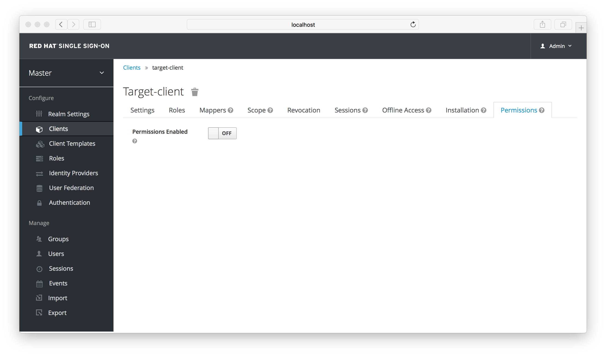
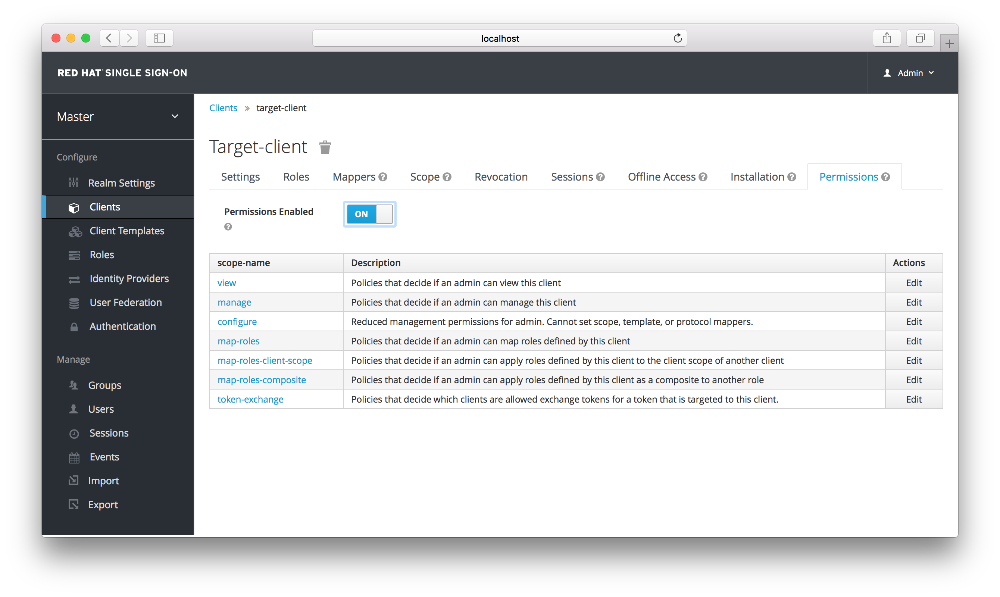
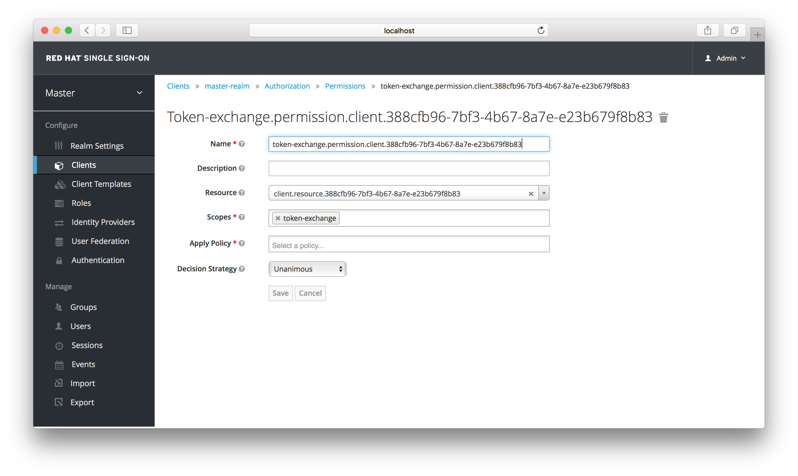
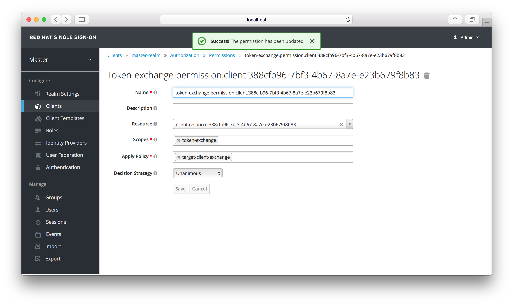
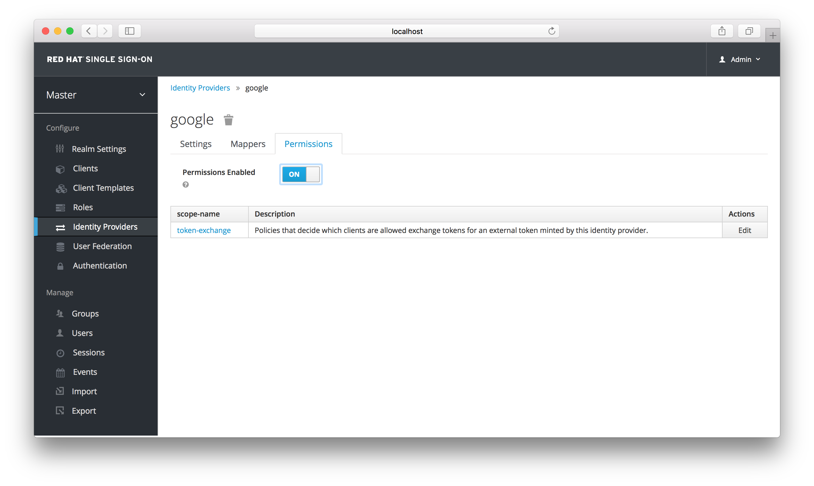
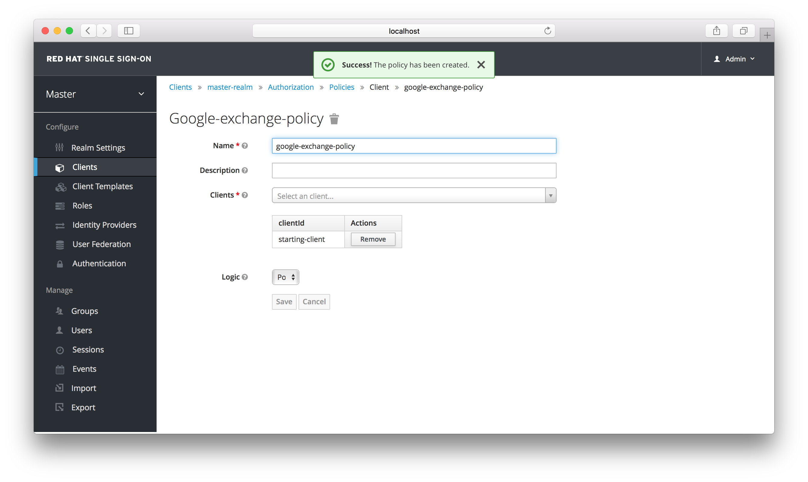
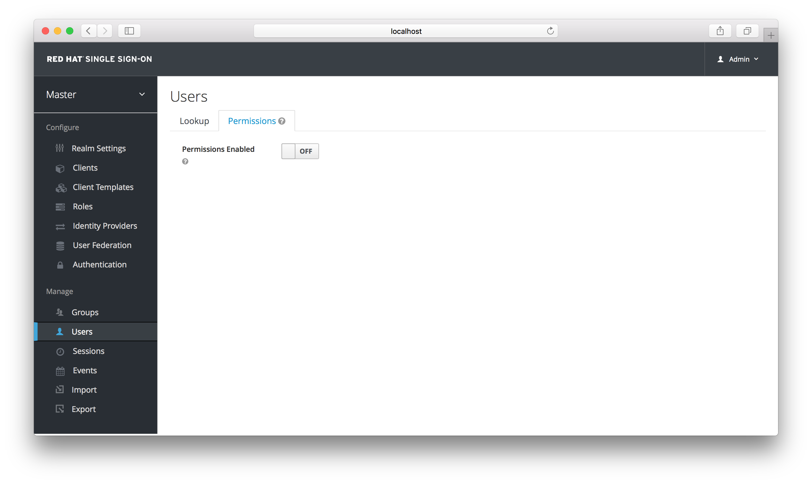
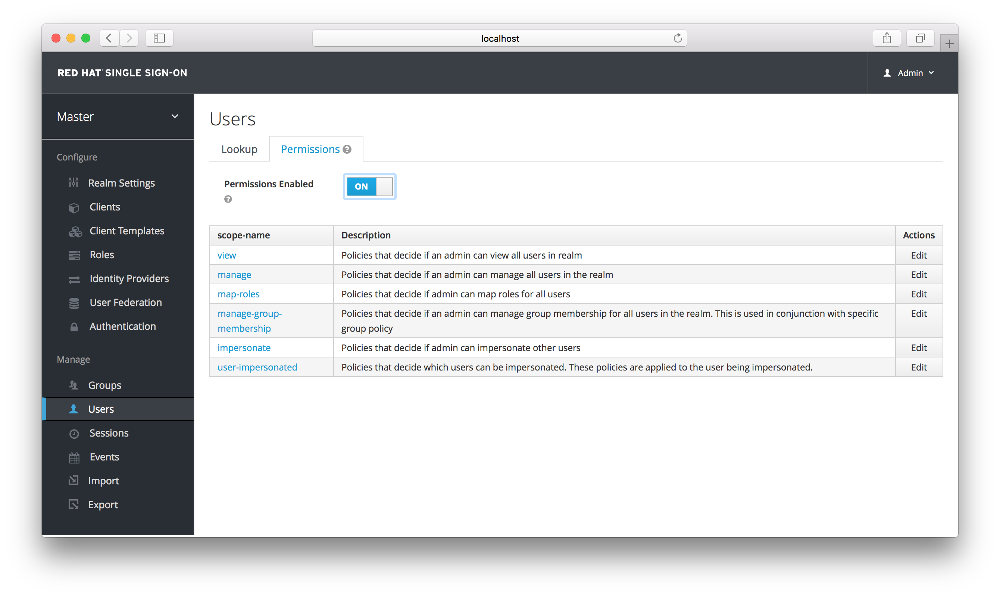

Securing Applications and Services Guide
For Use with Red Hat Single Sign-On 7.4
Abstract
- 1. Overview
- 2. OpenID Connect
- 2.1. Java Adapters
- 2.1.1. Java Adapter Config
- 2.1.2. JBoss EAP Adapter
- 2.1.3. Installing JBoss EAP Adapter from an RPM
- 2.1.4. JBoss Fuse 6 Adapter
- 2.1.5. JBoss Fuse 7 Adapter
- 2.1.6. Spring Boot Adapter
- 2.1.7. Java Servlet Filter Adapter
- 2.1.8. Security Context
- 2.1.9. Error Handling
- 2.1.10. Logout
- 2.1.11. Parameters Forwarding
- 2.1.12. Client Authentication
- 2.1.13. Multi Tenancy
- 2.1.14. Application Clustering
- 2.2. JavaScript Adapter
- 2.3. Node.js Adapter
- 2.4. Other OpenID Connect Libraries
- 2.1. Java Adapters
- 3. SAML
- 4. Docker Registry Configuration
- 5. Client Registration
- 6. Client Registration CLI
- 6.1. Configuring a new regular user for use with Client Registration CLI
- 6.2. Configuring a client for use with the Client Registration CLI
- 6.3. Installing the Client Registration CLI
- 6.4. Using the Client Registration CLI
- 6.4.1. Logging in
- 6.4.2. Working with alternative configurations
- 6.4.3. Initial Access and Registration Access Tokens
- 6.4.4. Creating a client configuration
- 6.4.5. Retrieving a client configuration
- 6.4.6. Modifying a client configuration
- 6.4.7. Deleting a client configuration
- 6.4.8. Refreshing invalid Registration Access Tokens
- 6.5. Troubleshooting
- 7. Token Exchange
Chapter 1. Overview
Red Hat Single Sign-On supports both OpenID Connect (an extension to OAuth 2.0) and SAML 2.0. When securing clients and services the first thing you need to decide is which of the two you are going to use. If you want you can also choose to secure some with OpenID Connect and others with SAML.
To secure clients and services you are also going to need an adapter or library for the protocol you’ve selected. Red Hat Single Sign-On comes with its own adapters for selected platforms, but it is also possible to use generic OpenID Connect Relying Party and SAML Service Provider libraries.
1.1. What are Client Adapters?
Red Hat Single Sign-On client adapters are libraries that make it very easy to secure applications and services with Red Hat Single Sign-On. We call them adapters rather than libraries as they provide a tight integration to the underlying platform and framework. This makes our adapters easy to use and they require less boilerplate code than what is typically required by a library.
1.2. Supported Platforms
1.2.1. OpenID Connect
1.2.1.1. Java
1.2.1.2. JavaScript (client-side)
1.2.1.3. Node.js (server-side)
1.2.2. SAML
1.2.2.1. Java
1.2.2.2. Apache HTTP Server
1.3. Supported Protocols
1.3.1. OpenID Connect
OpenID Connect (OIDC) is an authentication protocol that is an extension of OAuth 2.0. While OAuth 2.0 is only a framework for building authorization protocols and is mainly incomplete, OIDC is a full-fledged authentication and authorization protocol. OIDC also makes heavy use of the Json Web Token (JWT) set of standards. These standards define an identity token JSON format and ways to digitally sign and encrypt that data in a compact and web-friendly way.
There are really two types of use cases when using OIDC. The first is an application that asks the Red Hat Single Sign-On server to authenticate a user for them. After a successful login, the application will receive an identity token and an access token. The identity token contains information about the user such as username, email, and other profile information. The access token is digitally signed by the realm and contains access information (like user role mappings) that the application can use to determine what resources the user is allowed to access on the application.
The second type of use cases is that of a client that wants to gain access to remote services. In this case, the client asks Red Hat Single Sign-On to obtain an access token it can use to invoke on other remote services on behalf of the user. Red Hat Single Sign-On authenticates the user then asks the user for consent to grant access to the client requesting it. The client then receives the access token. This access token is digitally signed by the realm. The client can make REST invocations on remote services using this access token. The REST service extracts the access token, verifies the signature of the token, then decides based on access information within the token whether or not to process the request.
1.3.2. SAML 2.0
SAML 2.0 is a similar specification to OIDC but a lot older and more mature. It has its roots in SOAP and the plethora of WS-* specifications so it tends to be a bit more verbose than OIDC. SAML 2.0 is primarily an authentication protocol that works by exchanging XML documents between the authentication server and the application. XML signatures and encryption are used to verify requests and responses.
In Red Hat Single Sign-On SAML serves two types of use cases: browser applications and REST invocations.
There are really two types of use cases when using SAML. The first is an application that asks the Red Hat Single Sign-On server to authenticate a user for them. After a successful login, the application will receive an XML document that contains something called a SAML assertion that specifies various attributes about the user. This XML document is digitally signed by the realm and contains access information (like user role mappings) that the application can use to determine what resources the user is allowed to access on the application.
The second type of use cases is that of a client that wants to gain access to remote services. In this case, the client asks Red Hat Single Sign-On to obtain a SAML assertion it can use to invoke on other remote services on behalf of the user.
1.3.3. OpenID Connect vs. SAML
Choosing between OpenID Connect and SAML is not just a matter of using a newer protocol (OIDC) instead of the older more mature protocol (SAML).
In most cases Red Hat Single Sign-On recommends using OIDC.
SAML tends to be a bit more verbose than OIDC.
Beyond verbosity of exchanged data, if you compare the specifications you’ll find that OIDC was designed to work with the web while SAML was retrofitted to work on top of the web. For example, OIDC is also more suited for HTML5/JavaScript applications because it is easier to implement on the client side than SAML. As tokens are in the JSON format, they are easier to consume by JavaScript. You will also find several nice features that make implementing security in your web applications easier. For example, check out the iframe trick that the specification uses to easily determine if a user is still logged in or not.
SAML has its uses though. As you see the OIDC specifications evolve you see they implement more and more features that SAML has had for years. What we often see is that people pick SAML over OIDC because of the perception that it is more mature and also because they already have existing applications that are secured with it.
Chapter 2. OpenID Connect
This section describes how you can secure applications and services with OpenID Connect using either Red Hat Single Sign-On adapters or generic OpenID Connect Relying Party libraries.
2.1. Java Adapters
Red Hat Single Sign-On comes with a range of different adapters for Java application. Selecting the correct adapter depends on the target platform.
All Java adapters share a set of common configuration options described in the Java Adapters Config chapter.
2.1.1. Java Adapter Config
Each Java adapter supported by Red Hat Single Sign-On can be configured by a simple JSON file. This is what one might look like:
{
"realm" : "demo",
"resource" : "customer-portal",
"realm-public-key" : "MIGfMA0GCSqGSIb3D...31LwIDAQAB",
"auth-server-url" : "https://localhost:8443/auth",
"ssl-required" : "external",
"use-resource-role-mappings" : false,
"enable-cors" : true,
"cors-max-age" : 1000,
"cors-allowed-methods" : "POST, PUT, DELETE, GET",
"cors-exposed-headers" : "WWW-Authenticate, My-custom-exposed-Header",
"bearer-only" : false,
"enable-basic-auth" : false,
"expose-token" : true,
"verify-token-audience" : true,
"credentials" : {
"secret" : "234234-234234-234234"
},
"connection-pool-size" : 20,
"disable-trust-manager": false,
"allow-any-hostname" : false,
"truststore" : "path/to/truststore.jks",
"truststore-password" : "geheim",
"client-keystore" : "path/to/client-keystore.jks",
"client-keystore-password" : "geheim",
"client-key-password" : "geheim",
"token-minimum-time-to-live" : 10,
"min-time-between-jwks-requests" : 10,
"public-key-cache-ttl": 86400,
"redirect-rewrite-rules" : {
"^/wsmaster/api/(.*)$" : "/api/$1"
}
}
You can use ${…} enclosure for system property replacement. For example ${jboss.server.config.dir} would be replaced by /path/to/Red Hat Single Sign-On. Replacement of environment variables is also supported via the env prefix, e.g. ${env.MY_ENVIRONMENT_VARIABLE}.
The initial config file can be obtained from the admin console. This can be done by opening the admin console, select Clients from the menu and clicking on the corresponding client. Once the page for the client is opened click on the Installation tab and select Keycloak OIDC JSON.
Here is a description of each configuration option:
- realm
- Name of the realm. This is REQUIRED.
- resource
- The client-id of the application. Each application has a client-id that is used to identify the application. This is REQUIRED.
- realm-public-key
- PEM format of the realm public key. You can obtain this from the administration console. This is OPTIONAL and it’s not recommended to set it. If not set, the adapter will download this from Red Hat Single Sign-On and it will always re-download it when needed (eg. Red Hat Single Sign-On rotate it’s keys). However if realm-public-key is set, then adapter will never download new keys from Red Hat Single Sign-On, so when Red Hat Single Sign-On rotate it’s keys, adapter will break.
- auth-server-url
-
The base URL of the Red Hat Single Sign-On server. All other Red Hat Single Sign-On pages and REST service endpoints are derived from this. It is usually of the form
https://host:port/auth. This is REQUIRED. - ssl-required
-
Ensures that all communication to and from the Red Hat Single Sign-On server is over HTTPS. In production this should be set to
all. This is OPTIONAL. The default value is external meaning that HTTPS is required by default for external requests. Valid values are 'all', 'external' and 'none'. - confidential-port
- The confidential port used by the Red Hat Single Sign-On server for secure connections over SSL/TLS. This is OPTIONAL. The default value is 8443.
- use-resource-role-mappings
- If set to true, the adapter will look inside the token for application level role mappings for the user. If false, it will look at the realm level for user role mappings. This is OPTIONAL. The default value is false.
- public-client
- If set to true, the adapter will not send credentials for the client to Red Hat Single Sign-On. This is OPTIONAL. The default value is false.
- enable-cors
- This enables CORS support. It will handle CORS preflight requests. It will also look into the access token to determine valid origins. This is OPTIONAL. The default value is false.
- cors-max-age
-
If CORS is enabled, this sets the value of the
Access-Control-Max-Ageheader. This is OPTIONAL. If not set, this header is not returned in CORS responses. - cors-allowed-methods
-
If CORS is enabled, this sets the value of the
Access-Control-Allow-Methodsheader. This should be a comma-separated string. This is OPTIONAL. If not set, this header is not returned in CORS responses. - cors-allowed-headers
-
If CORS is enabled, this sets the value of the
Access-Control-Allow-Headersheader. This should be a comma-separated string. This is OPTIONAL. If not set, this header is not returned in CORS responses. - cors-exposed-headers
-
If CORS is enabled, this sets the value of the
Access-Control-Expose-Headersheader. This should be a comma-separated string. This is OPTIONAL. If not set, this header is not returned in CORS responses. - bearer-only
- This should be set to true for services. If enabled the adapter will not attempt to authenticate users, but only verify bearer tokens. This is OPTIONAL. The default value is false.
- autodetect-bearer-only
-
This should be set to true if your application serves both a web application and web services (e.g. SOAP or REST). It allows you to redirect unauthenticated users of the web application to the Keycloak login page, but send an HTTP
401status code to unauthenticated SOAP or REST clients instead as they would not understand a redirect to the login page. Keycloak auto-detects SOAP or REST clients based on typical headers likeX-Requested-With,SOAPActionorAccept. The default value is false. - enable-basic-auth
- This tells the adapter to also support basic authentication. If this option is enabled, then secret must also be provided. This is OPTIONAL. The default value is false.
- expose-token
-
If
true, an authenticated browser client (via a JavaScript HTTP invocation) can obtain the signed access token via the URLroot/k_query_bearer_token. This is OPTIONAL. The default value is false. - credentials
- Specify the credentials of the application. This is an object notation where the key is the credential type and the value is the value of the credential type. Currently password and jwt is supported. This is REQUIRED only for clients with 'Confidential' access type.
- connection-pool-size
-
This config option defines how many connections to the Red Hat Single Sign-On server should be pooled. This is OPTIONAL. The default value is
20. - disable-trust-manager
-
If the Red Hat Single Sign-On server requires HTTPS and this config option is set to
trueyou do not have to specify a truststore. This setting should only be used during development and never in production as it will disable verification of SSL certificates. This is OPTIONAL. The default value isfalse. - allow-any-hostname
-
If the Red Hat Single Sign-On server requires HTTPS and this config option is set to
truethe Red Hat Single Sign-On server’s certificate is validated via the truststore, but host name validation is not done. This setting should only be used during development and never in production as it will disable verification of SSL certificates. This seting may be useful in test environments This is OPTIONAL. The default value isfalse. - proxy-url
- The URL for the HTTP proxy if one is used.
- truststore
-
The value is the file path to a truststore file. If you prefix the path with
classpath:, then the truststore will be obtained from the deployment’s classpath instead. Used for outgoing HTTPS communications to the Red Hat Single Sign-On server. Client making HTTPS requests need a way to verify the host of the server they are talking to. This is what the trustore does. The keystore contains one or more trusted host certificates or certificate authorities. You can create this truststore by extracting the public certificate of the Red Hat Single Sign-On server’s SSL keystore. This is REQUIRED unlessssl-requiredisnoneordisable-trust-manageristrue. - truststore-password
-
Password for the truststore. This is REQUIRED if
truststoreis set and the truststore requires a password. - client-keystore
- This is the file path to a keystore file. This keystore contains client certificate for two-way SSL when the adapter makes HTTPS requests to the Red Hat Single Sign-On server. This is OPTIONAL.
- client-keystore-password
-
Password for the client keystore. This is REQUIRED if
client-keystoreis set. - client-key-password
-
Password for the client’s key. This is REQUIRED if
client-keystoreis set. - always-refresh-token
- If true, the adapter will refresh token in every request. Warning - when enabled this will result in a request to Red Hat Single Sign-On for every request to your application.
- register-node-at-startup
- If true, then adapter will send registration request to Red Hat Single Sign-On. It’s false by default and useful only when application is clustered. See Application Clustering for details
- register-node-period
- Period for re-registration adapter to Red Hat Single Sign-On. Useful when application is clustered. See Application Clustering for details
- token-store
- Possible values are session and cookie. Default is session, which means that adapter stores account info in HTTP Session. Alternative cookie means storage of info in cookie. See Application Clustering for details
- token-cookie-path
- When using a cookie store, this option sets the path of the cookie used to store account info. If it’s a relative path, then it is assumed that the application is running in a context root, and is interpreted relative to that context root. If it’s an absolute path, then the absolute path is used to set the cookie path. Defaults to use paths relative to the context root.
- principal-attribute
-
OpenID Connect ID Token attribute to populate the UserPrincipal name with. If token attribute is null, defaults to
sub. Possible values aresub,preferred_username,email,name,nickname,given_name,family_name. - turn-off-change-session-id-on-login
- The session id is changed by default on a successful login on some platforms to plug a security attack vector. Change this to true if you want to turn this off This is OPTIONAL. The default value is false.
- token-minimum-time-to-live
-
Amount of time, in seconds, to preemptively refresh an active access token with the Red Hat Single Sign-On server before it expires. This is especially useful when the access token is sent to another REST client where it could expire before being evaluated. This value should never exceed the realm’s access token lifespan. This is OPTIONAL. The default value is
0seconds, so adapter will refresh access token just if it’s expired. - min-time-between-jwks-requests
-
Amount of time, in seconds, specifying minimum interval between two requests to Red Hat Single Sign-On to retrieve new public keys. It is 10 seconds by default. Adapter will always try to download new public key when it recognize token with unknown
kid. However it won’t try it more than once per 10 seconds (by default). This is to avoid DoS when attacker sends lots of tokens with badkidforcing adapter to send lots of requests to Red Hat Single Sign-On. - public-key-cache-ttl
-
Amount of time, in seconds, specifying maximum interval between two requests to Red Hat Single Sign-On to retrieve new public keys. It is 86400 seconds (1 day) by default. Adapter will always try to download new public key when it recognize token with unknown
kid. If it recognize token with knownkid, it will just use the public key downloaded previously. However at least once per this configured interval (1 day by default) will be new public key always downloaded even if thekidof token is already known. - ignore-oauth-query-parameter
-
Defaults to
false, if set totruewill turn off processing of theaccess_tokenquery parameter for bearer token processing. Users will not be able to authenticate if they only pass in anaccess_token - redirect-rewrite-rules
-
If needed, specify the Redirect URI rewrite rule. This is an object notation where the key is the regular expression to which the Redirect URI is to be matched and the value is the replacement String.
$character can be used for backreferences in the replacement String. - verify-token-audience
-
If set to
true, then during authentication with the bearer token, the adapter will verify whether the token contains this client name (resource) as an audience. The option is especially useful for services, which primarily serve requests authenticated by the bearer token. This is set tofalseby default, however for improved security, it is recommended to enable this. See Audience Support for more details about audience support.
2.1.2. JBoss EAP Adapter
To be able to secure WAR apps deployed on JBoss EAP, you must install and configure the Red Hat Single Sign-On adapter subsystem. You then have two options to secure your WARs.
You can provide an adapter config file in your WAR and change the auth-method to KEYCLOAK within web.xml.
Alternatively, you don’t have to modify your WAR at all and you can secure it via the Red Hat Single Sign-On adapter subsystem configuration in the configuration file, such as standalone.xml. Both methods are described in this section.
2.1.2.1. Installing the adapter
Adapters are available as a separate archive depending on what server version you are using.
Install on JBoss EAP 7:
You can install the EAP 7 adapters either by unzipping a ZIP file, or by using an RPM.
Install the EAP 7 Adapters from a ZIP File:
$ cd $EAP_HOME $ unzip rh-sso-7.4.0.GA-eap7-adapter.zip
Install on JBoss EAP 6:
You can install the EAP 6 adapters either by unzipping a ZIP file, or by using an RPM.
Install the EAP 6 Adapters from a ZIP File:
$ cd $EAP_HOME $ unzip rh-sso-7.4.0.GA-eap6-adapter.zip
This ZIP archive contains JBoss Modules specific to the Red Hat Single Sign-On adapter. It also contains JBoss CLI scripts to configure the adapter subsystem.
To configure the adapter subsystem if the server is not running execute:
Alternatively, you can specify the server.config property while installing adapters from the command line to install adapters using a different config, for example: -Dserver.config=standalone-ha.xml.
JBoss EAP 7.1 or newer
$ ./bin/jboss-cli.sh --file=bin/adapter-elytron-install-offline.cli
The offline script is not available for JBoss EAP 6.4
Alternatively, if the server is running execute:
JBoss EAP 7.1 or newer
$ ./bin/jboss-cli.sh -c --file=bin/adapter-elytron-install.cli
It is possible to use the legacy non-Elytron adapter on JBoss EAP 7.1 or newer as well, meaning you can use adapter-install-offline.cli
JBoss EAP 6.4
$ ./bin/jboss-cli.sh -c --file=bin/adapter-install.cli
2.1.2.2. JBoss SSO
JBoss EAP has built-in support for single sign-on for web applications deployed to the same JBoss EAP instance. This should not be enabled when using Red Hat Single Sign-On.
2.1.2.3. Required Per WAR Configuration
This section describes how to secure a WAR directly by adding configuration and editing files within your WAR package.
The first thing you must do is create a keycloak.json adapter configuration file within the WEB-INF directory of your WAR.
The format of this configuration file is described in the Java adapter configuration section.
Next you must set the auth-method to KEYCLOAK in web.xml. You also have to use standard servlet security to specify role-base constraints on your URLs.
Here’s an example:
<web-app xmlns="http://java.sun.com/xml/ns/javaee"
xmlns:xsi="http://www.w3.org/2001/XMLSchema-instance"
xsi:schemaLocation="http://java.sun.com/xml/ns/javaee http://java.sun.com/xml/ns/javaee/web-app_3_0.xsd"
version="3.0">
<module-name>application</module-name>
<security-constraint>
<web-resource-collection>
<web-resource-name>Admins</web-resource-name>
<url-pattern>/admin/*</url-pattern>
</web-resource-collection>
<auth-constraint>
<role-name>admin</role-name>
</auth-constraint>
<user-data-constraint>
<transport-guarantee>CONFIDENTIAL</transport-guarantee>
</user-data-constraint>
</security-constraint>
<security-constraint>
<web-resource-collection>
<web-resource-name>Customers</web-resource-name>
<url-pattern>/customers/*</url-pattern>
</web-resource-collection>
<auth-constraint>
<role-name>user</role-name>
</auth-constraint>
<user-data-constraint>
<transport-guarantee>CONFIDENTIAL</transport-guarantee>
</user-data-constraint>
</security-constraint>
<login-config>
<auth-method>KEYCLOAK</auth-method>
<realm-name>this is ignored currently</realm-name>
</login-config>
<security-role>
<role-name>admin</role-name>
</security-role>
<security-role>
<role-name>user</role-name>
</security-role>
</web-app>2.1.2.4. Securing WARs via Adapter Subsystem
You do not have to modify your WAR to secure it with Red Hat Single Sign-On. Instead you can externally secure it via the Red Hat Single Sign-On Adapter Subsystem. While you don’t have to specify KEYCLOAK as an auth-method, you still have to define the security-constraints in web.xml. You do not, however, have to create a WEB-INF/keycloak.json file. This metadata is instead defined within server configuration (i.e. standalone.xml) in the Red Hat Single Sign-On subsystem definition.
<extensions>
<extension module="org.keycloak.keycloak-adapter-subsystem"/>
</extensions>
<profile>
<subsystem xmlns="urn:jboss:domain:keycloak:1.1">
<secure-deployment name="WAR MODULE NAME.war">
<realm>demo</realm>
<auth-server-url>http://localhost:8081/auth</auth-server-url>
<ssl-required>external</ssl-required>
<resource>customer-portal</resource>
<credential name="secret">password</credential>
</secure-deployment>
</subsystem>
</profile>
The secure-deployment name attribute identifies the WAR you want to secure. Its value is the module-name defined in web.xml with .war appended. The rest of the configuration corresponds pretty much one to one with the keycloak.json configuration options defined in Java adapter configuration.
The exception is the credential element.
To make it easier for you, you can go to the Red Hat Single Sign-On Administration Console and go to the Client/Installation tab of the application this WAR is aligned with. It provides an example XML file you can cut and paste.
If you have multiple deployments secured by the same realm you can share the realm configuration in a separate element. For example:
<subsystem xmlns="urn:jboss:domain:keycloak:1.1">
<realm name="demo">
<auth-server-url>http://localhost:8080/auth</auth-server-url>
<ssl-required>external</ssl-required>
</realm>
<secure-deployment name="customer-portal.war">
<realm>demo</realm>
<resource>customer-portal</resource>
<credential name="secret">password</credential>
</secure-deployment>
<secure-deployment name="product-portal.war">
<realm>demo</realm>
<resource>product-portal</resource>
<credential name="secret">password</credential>
</secure-deployment>
<secure-deployment name="database.war">
<realm>demo</realm>
<resource>database-service</resource>
<bearer-only>true</bearer-only>
</secure-deployment>
</subsystem>2.1.2.5. Security Domain
The security context is propagated to the EJB tier automatically.
2.1.3. Installing JBoss EAP Adapter from an RPM
Install the EAP 7 Adapters from an RPM:
With Red Hat Enterprise Linux 7, the term channel was replaced with the term repository. In these instructions only the term repository is used.
You must subscribe to the JBoss EAP 7.2 repository before you can install the JBoss EAP 7 adapters from an RPM.
Prerequisites
- Ensure that your Red Hat Enterprise Linux system is registered to your account using Red Hat Subscription Manager. For more information see the Red Hat Subscription Management documentation.
- If you are already subscribed to another JBoss EAP repository, you must unsubscribe from that repository first.
For Red Hat Enterprise Linux 6, 7: Using Red Hat Subscription Manager, subscribe to the JBoss EAP 7.2 repository using the following command. Replace <RHEL_VERSION> with either 6 or 7 depending on your Red Hat Enterprise Linux version.
$ sudo subscription-manager repos --enable=jb-eap-7-for-rhel-<RHEL_VERSION>-server-rpms
For Red Hat Enterprise Linux 8: Using Red Hat Subscription Manager, subscribe to the JBoss EAP 7.2 repository using the following command:
$ sudo subscription-manager repos --enable=jb-eap-7.2-for-rhel-8-x86_64-rpms --enable=rhel-8-for-x86_64-baseos-rpms --enable=rhel-8-for-x86_64-appstream-rpms
Install the JBoss EAP 7 adapters for OIDC using the following command at Red Hat Enterprise Linux 6, 7:
$ sudo yum install eap7-keycloak-adapter-sso7_3
or use following one for Red Hat Enterprise Linux 8:
$ sudo dnf install eap7-keycloak-adapter-sso7_3
The default EAP_HOME path for the RPM installation is /opt/rh/eap7/root/usr/share/wildfly.
Run the appropriate module installation script.
For the OIDC module, enter the following command:
$ $EAP_HOME/bin/jboss-cli.sh -c --file=$EAP_HOME/bin/adapter-install.cli
Your installation is complete.
Install the EAP 6 Adapters from an RPM:
With Red Hat Enterprise Linux 7, the term channel was replaced with the term repository. In these instructions only the term repository is used.
You must subscribe to the JBoss EAP 6 repository before you can install the EAP 6 adapters from an RPM.
Prerequisites
- Ensure that your Red Hat Enterprise Linux system is registered to your account using Red Hat Subscription Manager. For more information see the Red Hat Subscription Management documentation.
- If you are already subscribed to another JBoss EAP repository, you must unsubscribe from that repository first.
Using Red Hat Subscription Manager, subscribe to the JBoss EAP 6 repository using the following command. Replace <RHEL_VERSION> with either 6 or 7 depending on your Red Hat Enterprise Linux version.
$ sudo subscription-manager repos --enable=jb-eap-6-for-rhel-<RHEL_VERSION>-server-rpms
Install the EAP 6 adapters for OIDC using the following command:
$ sudo yum install keycloak-adapter-sso7_3-eap6
The default EAP_HOME path for the RPM installation is /opt/rh/eap6/root/usr/share/wildfly.
Run the appropriate module installation script.
For the OIDC module, enter the following command:
$ $EAP_HOME/bin/jboss-cli.sh -c --file=$EAP_HOME/bin/adapter-install.cli
Your installation is complete.
2.1.4. JBoss Fuse 6 Adapter
Red Hat Single Sign-On supports securing your web applications running inside JBoss Fuse 6.
The only supported version of Fuse 6 is the latest release. If you use earlier versions of Fuse 6, it is possible that some functions will not work correctly. In particular, the Hawtio integration will not work with earlier versions of Fuse 6.
Security for the following items is supported for Fuse:
- Classic WAR applications deployed on Fuse with Pax Web War Extender
- Servlets deployed on Fuse as OSGI services with Pax Web Whiteboard Extender
- Apache Camel Jetty endpoints running with the Camel Jetty component
- Apache CXF endpoints running on their own separate Jetty engine
- Apache CXF endpoints running on the default engine provided by the CXF servlet
- SSH and JMX admin access
- Hawtio administration console
2.1.4.1. Securing Your Web Applications Inside Fuse 6
You must first install the Red Hat Single Sign-On Karaf feature. Next you will need to perform the steps according to the type of application you want to secure. All referenced web applications require injecting the Red Hat Single Sign-On Jetty authenticator into the underlying Jetty server. The steps to achieve this depend on the application type. The details are described below.
2.1.4.2. Installing the Keycloak Feature
You must first install the keycloak feature in the JBoss Fuse environment. The keycloak feature includes the Fuse adapter and all third-party dependencies. You can install it either from the Maven repository or from an archive.
2.1.4.2.1. Installing from the Maven Repository
As a prerequisite, you must be online and have access to the Maven repository.
For Red Hat Single Sign-On you first need to configure a proper Maven repository, so you can install the artifacts. For more information see the JBoss Enterprise Maven repository page.
Assuming the Maven repository is https://maven.repository.redhat.com/ga/, add the following to the $FUSE_HOME/etc/org.ops4j.pax.url.mvn.cfg file and add the repository to the list of supported repositories. For example:
org.ops4j.pax.url.mvn.repositories= \
https://maven.repository.redhat.com/ga/@id=redhat.product.repo
http://repo1.maven.org/maven2@id=maven.central.repo, \
...To install the keycloak feature using the Maven repository, complete the following steps:
Start JBoss Fuse 6.3.0 Rollup 12; then in the Karaf terminal type:
features:addurl mvn:org.keycloak/keycloak-osgi-features/4.8.3.Final-redhat-00001/xml/features features:install keycloak
You might also need to install the Jetty 9 feature:
features:install keycloak-jetty9-adapter
- Ensure that the features were installed:
features:list | grep keycloak
2.1.4.2.2. Installing from the ZIP bundle
This is useful if you are offline or do not want to use Maven to obtain the JAR files and other artifacts.
To install the Fuse adapter from the ZIP archive, complete the following steps:
- Download the Red Hat Single Sign-On Fuse adapter ZIP archive.
Unzip it into the root directory of JBoss Fuse. The dependencies are then installed under the
systemdirectory. You can overwrite all existing jar files.Use this for JBoss Fuse 6.3.0 Rollup 12:
cd /path-to-fuse/jboss-fuse-6.3.0.redhat-254 unzip -q /path-to-adapter-zip/rh-sso-7.4.0.GA-fuse-adapter.zip
Start Fuse and run these commands in the fuse/karaf terminal:
features:addurl mvn:org.keycloak/keycloak-osgi-features/4.8.3.Final-redhat-00001/xml/features features:install keycloak
-
Install the corresponding Jetty adapter. Since the artifacts are available directly in the JBoss Fuse
systemdirectory, you do not need to use the Maven repository.
2.1.4.3. Securing a Classic WAR Application
The needed steps to secure your WAR application are:
In the
/WEB-INF/web.xmlfile, declare the necessary:- security constraints in the <security-constraint> element
- login configuration in the <login-config> element
security roles in the <security-role> element.
For example:
<?xml version="1.0" encoding="UTF-8"?> <web-app xmlns="http://java.sun.com/xml/ns/javaee" xmlns:xsi="http://www.w3.org/2001/XMLSchema-instance" xsi:schemaLocation="http://java.sun.com/xml/ns/javaee http://java.sun.com/xml/ns/javaee/web-app_3_0.xsd" version="3.0"> <module-name>customer-portal</module-name> <welcome-file-list> <welcome-file>index.html</welcome-file> </welcome-file-list> <security-constraint> <web-resource-collection> <web-resource-name>Customers</web-resource-name> <url-pattern>/customers/*</url-pattern> </web-resource-collection> <auth-constraint> <role-name>user</role-name> </auth-constraint> </security-constraint> <login-config> <auth-method>BASIC</auth-method> <realm-name>does-not-matter</realm-name> </login-config> <security-role> <role-name>admin</role-name> </security-role> <security-role> <role-name>user</role-name> </security-role> </web-app>
Add the
jetty-web.xmlfile with the authenticator to the/WEB-INF/jetty-web.xmlfile.For example:
<?xml version="1.0"?> <!DOCTYPE Configure PUBLIC "-//Mort Bay Consulting//DTD Configure//EN" "http://www.eclipse.org/jetty/configure_9_0.dtd"> <Configure class="org.eclipse.jetty.webapp.WebAppContext"> <Get name="securityHandler"> <Set name="authenticator"> <New class="org.keycloak.adapters.jetty.KeycloakJettyAuthenticator"> </New> </Set> </Get> </Configure>-
Within the
/WEB-INF/directory of your WAR, create a new file, keycloak.json. The format of this configuration file is described in the Java Adapters Config section. It is also possible to make this file available externally as described in Configuring the External Adapter. Ensure your WAR application imports
org.keycloak.adapters.jettyand maybe some more packages in theMETA-INF/MANIFEST.MFfile, under theImport-Packageheader. Usingmaven-bundle-pluginin your project properly generates OSGI headers in manifest. Note that "*" resolution for the package does not import theorg.keycloak.adapters.jettypackage, since it is not used by the application or the Blueprint or Spring descriptor, but is rather used in thejetty-web.xmlfile.The list of the packages to import might look like this:
org.keycloak.adapters.jetty;version="4.8.3.Final-redhat-00001", org.keycloak.adapters;version="4.8.3.Final-redhat-00001", org.keycloak.constants;version="4.8.3.Final-redhat-00001", org.keycloak.util;version="4.8.3.Final-redhat-00001", org.keycloak.*;version="4.8.3.Final-redhat-00001", *;resolution:=optional
2.1.4.3.1. Configuring the External Adapter
If you do not want the keycloak.json adapter configuration file to be bundled inside your WAR application, but instead made available externally and loaded based on naming conventions, use this configuration method.
To enable the functionality, add this section to your /WEB_INF/web.xml file:
<context-param>
<param-name>keycloak.config.resolver</param-name>
<param-value>org.keycloak.adapters.osgi.PathBasedKeycloakConfigResolver</param-value>
</context-param>
That component uses keycloak.config or karaf.etc java properties to search for a base folder to locate the configuration. Then inside one of those folders it searches for a file called <your_web_context>-keycloak.json.
So, for example, if your web application has context my-portal, then your adapter configuration is loaded from the $FUSE_HOME/etc/my-portal-keycloak.json file.
2.1.4.4. Securing a Servlet Deployed as an OSGI Service
You can use this method if you have a servlet class inside your OSGI bundled project that is not deployed as a classic WAR application. Fuse uses Pax Web Whiteboard Extender to deploy such servlets as web applications.
To secure your servlet with Red Hat Single Sign-On, complete the following steps:
Red Hat Single Sign-On provides PaxWebIntegrationService, which allows injecting jetty-web.xml and configuring security constraints for your application. You need to declare such services in the
OSGI-INF/blueprint/blueprint.xmlfile inside your application. Note that your servlet needs to depend on it. An example configuration:<?xml version="1.0" encoding="UTF-8"?> <blueprint xmlns="http://www.osgi.org/xmlns/blueprint/v1.0.0" xmlns:xsi="http://www.w3.org/2001/XMLSchema-instance" xsi:schemaLocation="http://www.osgi.org/xmlns/blueprint/v1.0.0 http://www.osgi.org/xmlns/blueprint/v1.0.0/blueprint.xsd"> <!-- Using jetty bean just for the compatibility with other fuse services --> <bean id="servletConstraintMapping" class="org.eclipse.jetty.security.ConstraintMapping"> <property name="constraint"> <bean class="org.eclipse.jetty.util.security.Constraint"> <property name="name" value="cst1"/> <property name="roles"> <list> <value>user</value> </list> </property> <property name="authenticate" value="true"/> <property name="dataConstraint" value="0"/> </bean> </property> <property name="pathSpec" value="/product-portal/*"/> </bean> <bean id="keycloakPaxWebIntegration" class="org.keycloak.adapters.osgi.PaxWebIntegrationService" init-method="start" destroy-method="stop"> <property name="jettyWebXmlLocation" value="/WEB-INF/jetty-web.xml" /> <property name="bundleContext" ref="blueprintBundleContext" /> <property name="constraintMappings"> <list> <ref component-id="servletConstraintMapping" /> </list> </property> </bean> <bean id="productServlet" class="org.keycloak.example.ProductPortalServlet" depends-on="keycloakPaxWebIntegration"> </bean> <service ref="productServlet" interface="javax.servlet.Servlet"> <service-properties> <entry key="alias" value="/product-portal" /> <entry key="servlet-name" value="ProductServlet" /> <entry key="keycloak.config.file" value="/keycloak.json" /> </service-properties> </service> </blueprint>-
You might need to have the
WEB-INFdirectory inside your project (even if your project is not a web application) and create the/WEB-INF/jetty-web.xmland/WEB-INF/keycloak.jsonfiles as in the Classic WAR application section. Note you don’t need theweb.xmlfile as the security-constraints are declared in the blueprint configuration file.
-
You might need to have the
The
Import-PackageinMETA-INF/MANIFEST.MFmust contain at least these imports:org.keycloak.adapters.jetty;version="4.8.3.Final-redhat-00001", org.keycloak.adapters;version="4.8.3.Final-redhat-00001", org.keycloak.constants;version="4.8.3.Final-redhat-00001", org.keycloak.util;version="4.8.3.Final-redhat-00001", org.keycloak.*;version="4.8.3.Final-redhat-00001", *;resolution:=optional
2.1.4.5. Securing an Apache Camel Application
You can secure Apache Camel endpoints implemented with the camel-jetty component by adding the securityHandler with KeycloakJettyAuthenticator and the proper security constraints injected. You can add the OSGI-INF/blueprint/blueprint.xml file to your Camel application with a similar configuration as below. The roles, security constraint mappings, and Red Hat Single Sign-On adapter configuration might differ slightly depending on your environment and needs.
For example:
<?xml version="1.0" encoding="UTF-8"?>
<blueprint xmlns="http://www.osgi.org/xmlns/blueprint/v1.0.0"
xmlns:xsi="http://www.w3.org/2001/XMLSchema-instance"
xmlns:camel="http://camel.apache.org/schema/blueprint"
xsi:schemaLocation="
http://www.osgi.org/xmlns/blueprint/v1.0.0 http://www.osgi.org/xmlns/blueprint/v1.0.0/blueprint.xsd
http://camel.apache.org/schema/blueprint http://camel.apache.org/schema/blueprint/camel-blueprint.xsd">
<bean id="kcAdapterConfig" class="org.keycloak.representations.adapters.config.AdapterConfig">
<property name="realm" value="demo"/>
<property name="resource" value="admin-camel-endpoint"/>
<property name="bearerOnly" value="true"/>
<property name="authServerUrl" value="http://localhost:8080/auth" />
<property name="sslRequired" value="EXTERNAL"/>
</bean>
<bean id="keycloakAuthenticator" class="org.keycloak.adapters.jetty.KeycloakJettyAuthenticator">
<property name="adapterConfig" ref="kcAdapterConfig"/>
</bean>
<bean id="constraint" class="org.eclipse.jetty.util.security.Constraint">
<property name="name" value="Customers"/>
<property name="roles">
<list>
<value>admin</value>
</list>
</property>
<property name="authenticate" value="true"/>
<property name="dataConstraint" value="0"/>
</bean>
<bean id="constraintMapping" class="org.eclipse.jetty.security.ConstraintMapping">
<property name="constraint" ref="constraint"/>
<property name="pathSpec" value="/*"/>
</bean>
<bean id="securityHandler" class="org.eclipse.jetty.security.ConstraintSecurityHandler">
<property name="authenticator" ref="keycloakAuthenticator" />
<property name="constraintMappings">
<list>
<ref component-id="constraintMapping" />
</list>
</property>
<property name="authMethod" value="BASIC"/>
<property name="realmName" value="does-not-matter"/>
</bean>
<bean id="sessionHandler" class="org.keycloak.adapters.jetty.spi.WrappingSessionHandler">
<property name="handler" ref="securityHandler" />
</bean>
<bean id="helloProcessor" class="org.keycloak.example.CamelHelloProcessor" />
<camelContext id="blueprintContext"
trace="false"
xmlns="http://camel.apache.org/schema/blueprint">
<route id="httpBridge">
<from uri="jetty:http://0.0.0.0:8383/admin-camel-endpoint?handlers=sessionHandler&matchOnUriPrefix=true" />
<process ref="helloProcessor" />
<log message="The message from camel endpoint contains ${body}"/>
</route>
</camelContext>
</blueprint>-
The
Import-PackageinMETA-INF/MANIFEST.MFneeds to contain these imports:
javax.servlet;version="[3,4)", javax.servlet.http;version="[3,4)", org.apache.camel.*, org.apache.camel;version="[2.13,3)", org.eclipse.jetty.security;version="[9,10)", org.eclipse.jetty.server.nio;version="[9,10)", org.eclipse.jetty.util.security;version="[9,10)", org.keycloak.*;version="4.8.3.Final-redhat-00001", org.osgi.service.blueprint, org.osgi.service.blueprint.container, org.osgi.service.event,
2.1.4.6. Camel RestDSL
Camel RestDSL is a Camel feature used to define your REST endpoints in a fluent way. But you must still use specific implementation classes and provide instructions on how to integrate with Red Hat Single Sign-On.
The way to configure the integration mechanism depends on the Camel component for which you configure your RestDSL-defined routes.
The following example shows how to configure integration using the Jetty component, with references to some of the beans defined in previous Blueprint example.
<bean id="securityHandlerRest" class="org.eclipse.jetty.security.ConstraintSecurityHandler">
<property name="authenticator" ref="keycloakAuthenticator" />
<property name="constraintMappings">
<list>
<ref component-id="constraintMapping" />
</list>
</property>
<property name="authMethod" value="BASIC"/>
<property name="realmName" value="does-not-matter"/>
</bean>
<bean id="sessionHandlerRest" class="org.keycloak.adapters.jetty.spi.WrappingSessionHandler">
<property name="handler" ref="securityHandlerRest" />
</bean>
<camelContext id="blueprintContext"
trace="false"
xmlns="http://camel.apache.org/schema/blueprint">
<restConfiguration component="jetty" contextPath="/restdsl"
port="8484">
<!--the link with Keycloak security handlers happens here-->
<endpointProperty key="handlers" value="sessionHandlerRest"></endpointProperty>
<endpointProperty key="matchOnUriPrefix" value="true"></endpointProperty>
</restConfiguration>
<rest path="/hello" >
<description>Hello rest service</description>
<get uri="/{id}" outType="java.lang.String">
<description>Just an helllo</description>
<to uri="direct:justDirect" />
</get>
</rest>
<route id="justDirect">
<from uri="direct:justDirect"/>
<process ref="helloProcessor" />
<log message="RestDSL correctly invoked ${body}"/>
<setBody>
<constant>(__This second sentence is returned from a Camel RestDSL endpoint__)</constant>
</setBody>
</route>
</camelContext>2.1.4.7. Securing an Apache CXF Endpoint on a Separate Jetty Engine
To run your CXF endpoints secured by Red Hat Single Sign-On on separate Jetty engines, complete the following steps:
Add
META-INF/spring/beans.xmlto your application, and in it, declarehttpj:engine-factorywith Jetty SecurityHandler with injectedKeycloakJettyAuthenticator. The configuration for a CFX JAX-WS application might resemble this one:<?xml version="1.0" encoding="UTF-8"?> <beans xmlns="http://www.springframework.org/schema/beans" xmlns:xsi="http://www.w3.org/2001/XMLSchema-instance" xmlns:jaxws="http://cxf.apache.org/jaxws" xmlns:httpj="http://cxf.apache.org/transports/http-jetty/configuration" xsi:schemaLocation=" http://www.springframework.org/schema/beans http://www.springframework.org/schema/beans/spring-beans.xsd http://cxf.apache.org/jaxws http://cxf.apache.org/schemas/jaxws.xsd http://www.springframework.org/schema/osgi http://www.springframework.org/schema/osgi/spring-osgi.xsd http://cxf.apache.org/transports/http-jetty/configuration http://cxf.apache.org/schemas/configuration/http-jetty.xsd"> <import resource="classpath:META-INF/cxf/cxf.xml" /> <bean id="kcAdapterConfig" class="org.keycloak.representations.adapters.config.AdapterConfig"> <property name="realm" value="demo"/> <property name="resource" value="custom-cxf-endpoint"/> <property name="bearerOnly" value="true"/> <property name="authServerUrl" value="http://localhost:8080/auth" /> <property name="sslRequired" value="EXTERNAL"/> </bean> <bean id="keycloakAuthenticator" class="org.keycloak.adapters.jetty.KeycloakJettyAuthenticator"> <property name="adapterConfig"> <ref local="kcAdapterConfig" /> </property> </bean> <bean id="constraint" class="org.eclipse.jetty.util.security.Constraint"> <property name="name" value="Customers"/> <property name="roles"> <list> <value>user</value> </list> </property> <property name="authenticate" value="true"/> <property name="dataConstraint" value="0"/> </bean> <bean id="constraintMapping" class="org.eclipse.jetty.security.ConstraintMapping"> <property name="constraint" ref="constraint"/> <property name="pathSpec" value="/*"/> </bean> <bean id="securityHandler" class="org.eclipse.jetty.security.ConstraintSecurityHandler"> <property name="authenticator" ref="keycloakAuthenticator" /> <property name="constraintMappings"> <list> <ref local="constraintMapping" /> </list> </property> <property name="authMethod" value="BASIC"/> <property name="realmName" value="does-not-matter"/> </bean> <httpj:engine-factory bus="cxf" id="kc-cxf-endpoint"> <httpj:engine port="8282"> <httpj:handlers> <ref local="securityHandler" /> </httpj:handlers> <httpj:sessionSupport>true</httpj:sessionSupport> </httpj:engine> </httpj:engine-factory> <jaxws:endpoint implementor="org.keycloak.example.ws.ProductImpl" address="http://localhost:8282/ProductServiceCF" depends-on="kc-cxf-endpoint" /> </beans>For the CXF JAX-RS application, the only difference might be in the configuration of the endpoint dependent on engine-factory:
<jaxrs:server serviceClass="org.keycloak.example.rs.CustomerService" address="http://localhost:8282/rest" depends-on="kc-cxf-endpoint"> <jaxrs:providers> <bean class="com.fasterxml.jackson.jaxrs.json.JacksonJsonProvider" /> </jaxrs:providers> </jaxrs:server>-
The
Import-PackageinMETA-INF/MANIFEST.MFmust contain those imports:
META-INF.cxf;version="[2.7,3.2)", META-INF.cxf.osgi;version="[2.7,3.2)";resolution:=optional, org.apache.cxf.bus;version="[2.7,3.2)", org.apache.cxf.bus.spring;version="[2.7,3.2)", org.apache.cxf.bus.resource;version="[2.7,3.2)", org.apache.cxf.transport.http;version="[2.7,3.2)", org.apache.cxf.*;version="[2.7,3.2)", org.springframework.beans.factory.config, org.eclipse.jetty.security;version="[9,10)", org.eclipse.jetty.util.security;version="[9,10)", org.keycloak.*;version="4.8.3.Final-redhat-00001"
2.1.4.8. Securing an Apache CXF Endpoint on the Default Jetty Engine
Some services automatically come with deployed servlets on startup. One such service is the CXF servlet running in the http://localhost:8181/cxf context. Securing such endpoints can be complicated. One approach, which Red Hat Single Sign-On is currently using, is ServletReregistrationService, which undeploys a built-in servlet at startup, enabling you to redeploy it on a context secured by Red Hat Single Sign-On.
The configuration file OSGI-INF/blueprint/blueprint.xml inside your application might resemble the one below. Note that it adds the JAX-RS customerservice endpoint, which is endpoint-specific to your application, but more importantly, secures the entire /cxf context.
<?xml version="1.0" encoding="UTF-8"?>
<blueprint xmlns="http://www.osgi.org/xmlns/blueprint/v1.0.0"
xmlns:xsi="http://www.w3.org/2001/XMLSchema-instance"
xmlns:jaxrs="http://cxf.apache.org/blueprint/jaxrs"
xsi:schemaLocation="
http://www.osgi.org/xmlns/blueprint/v1.0.0 http://www.osgi.org/xmlns/blueprint/v1.0.0/blueprint.xsd
http://cxf.apache.org/blueprint/jaxrs http://cxf.apache.org/schemas/blueprint/jaxrs.xsd">
<!-- JAXRS Application -->
<bean id="customerBean" class="org.keycloak.example.rs.CxfCustomerService" />
<jaxrs:server id="cxfJaxrsServer" address="/customerservice">
<jaxrs:providers>
<bean class="com.fasterxml.jackson.jaxrs.json.JacksonJsonProvider" />
</jaxrs:providers>
<jaxrs:serviceBeans>
<ref component-id="customerBean" />
</jaxrs:serviceBeans>
</jaxrs:server>
<!-- Securing of whole /cxf context by unregister default cxf servlet from paxweb and re-register with applied security constraints -->
<bean id="cxfConstraintMapping" class="org.eclipse.jetty.security.ConstraintMapping">
<property name="constraint">
<bean class="org.eclipse.jetty.util.security.Constraint">
<property name="name" value="cst1"/>
<property name="roles">
<list>
<value>user</value>
</list>
</property>
<property name="authenticate" value="true"/>
<property name="dataConstraint" value="0"/>
</bean>
</property>
<property name="pathSpec" value="/cxf/*"/>
</bean>
<bean id="cxfKeycloakPaxWebIntegration" class="org.keycloak.adapters.osgi.PaxWebIntegrationService"
init-method="start" destroy-method="stop">
<property name="bundleContext" ref="blueprintBundleContext" />
<property name="jettyWebXmlLocation" value="/WEB-INF/jetty-web.xml" />
<property name="constraintMappings">
<list>
<ref component-id="cxfConstraintMapping" />
</list>
</property>
</bean>
<bean id="defaultCxfReregistration" class="org.keycloak.adapters.osgi.ServletReregistrationService" depends-on="cxfKeycloakPaxWebIntegration"
init-method="start" destroy-method="stop">
<property name="bundleContext" ref="blueprintBundleContext" />
<property name="managedServiceReference">
<reference interface="org.osgi.service.cm.ManagedService" filter="(service.pid=org.apache.cxf.osgi)" timeout="5000" />
</property>
</bean>
</blueprint>
As a result, all other CXF services running on the default CXF HTTP destination are also secured. Similarly, when the application is undeployed, the entire /cxf context becomes unsecured as well. For this reason, using your own Jetty engine for your applications as described in Secure CXF Application on separate Jetty Engine then gives you more control over security for each individual application.
-
The
WEB-INFdirectory might need to be inside your project (even if your project is not a web application). You might also need to edit the/WEB-INF/jetty-web.xmland/WEB-INF/keycloak.jsonfiles in a similar way as in Classic WAR application. Note that you do not need theweb.xmlfile as the security constraints are declared in the blueprint configuration file. -
The
Import-PackageinMETA-INF/MANIFEST.MFmust contain these imports:
META-INF.cxf;version="[2.7,3.2)", META-INF.cxf.osgi;version="[2.7,3.2)";resolution:=optional, org.apache.cxf.transport.http;version="[2.7,3.2)", org.apache.cxf.*;version="[2.7,3.2)", com.fasterxml.jackson.jaxrs.json;version="[2.5,3)", org.eclipse.jetty.security;version="[9,10)", org.eclipse.jetty.util.security;version="[9,10)", org.keycloak.*;version="4.8.3.Final-redhat-00001", org.keycloak.adapters.jetty;version="4.8.3.Final-redhat-00001", *;resolution:=optional
2.1.4.9. Securing Fuse Administration Services
2.1.4.9.1. Using SSH Authentication to Fuse Terminal
Red Hat Single Sign-On mainly addresses use cases for authentication of web applications; however, if your other web services and applications are protected with Red Hat Single Sign-On, protecting non-web administration services such as SSH with Red Hat Single Sign-On credentials is a best pracrice. You can do this using the JAAS login module, which allows remote connection to Red Hat Single Sign-On and verifies credentials based on Resource Owner Password Credentials.
To enable SSH authentication, complete the following steps:
-
In Red Hat Single Sign-On create a client (for example,
ssh-jmx-admin-client), which will be used for SSH authentication. This client needs to haveDirect Access Grants Enabledselected toOn. In the
$FUSE_HOME/etc/org.apache.karaf.shell.cfgfile, update or specify this property:sshRealm=keycloak
Add the
$FUSE_HOME/etc/keycloak-direct-access.jsonfile with content similar to the following (based on your environment and Red Hat Single Sign-On client settings):{ "realm": "demo", "resource": "ssh-jmx-admin-client", "ssl-required" : "external", "auth-server-url" : "http://localhost:8080/auth", "credentials": { "secret": "password" } }This file specifies the client application configuration, which is used by JAAS DirectAccessGrantsLoginModule from the
keycloakJAAS realm for SSH authentication.Start Fuse and install the
keycloakJAAS realm. The easiest way is to install thekeycloak-jaasfeature, which has the JAAS realm predefined. You can override the feature’s predefined realm by using your ownkeycloakJAAS realm with higher ranking. For details see the JBoss Fuse documentation.Use these commands in the Fuse terminal:
features:addurl mvn:org.keycloak/keycloak-osgi-features/4.8.3.Final-redhat-00001/xml/features features:install keycloak-jaas
Log in using SSH as
adminuser by typing the following in the terminal:ssh -o PubkeyAuthentication=no -p 8101 admin@localhost
-
Log in with password
password.
On some later operating systems, you might also need to use the SSH command’s -o option -o HostKeyAlgorithms=+ssh-dss because later SSH clients do not allow use of the ssh-dss algorithm, by default. However, by default, it is currently used in JBoss Fuse 6.3.0 Rollup 12.
Note that the user needs to have realm role admin to perform all operations or another role to perform a subset of operations (for example, the viewer role that restricts the user to run only read-only Karaf commands). The available roles are configured in $FUSE_HOME/etc/org.apache.karaf.shell.cfg or $FUSE_HOME/etc/system.properties.
2.1.4.9.2. Using JMX Authentication
JMX authentication might be necessary if you want to use jconsole or another external tool to remotely connect to JMX through RMI. Otherwise it might be better to use hawt.io/jolokia, since the jolokia agent is installed in hawt.io by default. For more details see Hawtio Admin Console.
To use JMX authentication, complete the following steps:
In the
$FUSE_HOME/etc/org.apache.karaf.management.cfgfile, change the jmxRealm property to:jmxRealm=keycloak
-
Install the
keycloak-jaasfeature and configure the$FUSE_HOME/etc/keycloak-direct-access.jsonfile as described in the SSH section above. - In jconsole you can use a URL such as:
service:jmx:rmi://localhost:44444/jndi/rmi://localhost:1099/karaf-root
and credentials: admin/password (based on the user with admin privileges according to your environment).
2.1.4.10. Securing the Hawtio Administration Console
To secure the Hawtio Administration Console with Red Hat Single Sign-On, complete the following steps:
Add these properties to the
$FUSE_HOME/etc/system.propertiesfile:hawtio.keycloakEnabled=true hawtio.realm=keycloak hawtio.keycloakClientConfig=file://${karaf.base}/etc/keycloak-hawtio-client.json hawtio.rolePrincipalClasses=org.keycloak.adapters.jaas.RolePrincipal,org.apache.karaf.jaas.boot.principal.RolePrincipal-
Create a client in the Red Hat Single Sign-On administration console in your realm. For example, in the Red Hat Single Sign-On
demorealm, create a clienthawtio-client, specifypublicas the Access Type, and specify a redirect URI pointing to Hawtio: http://localhost:8181/hawtio/*. You must also have a corresponding Web Origin configured (in this case, http://localhost:8181). Create the
keycloak-hawtio-client.jsonfile in the$FUSE_HOME/etcdirectory using content similar to that shown in the example below. Change therealm,resource, andauth-server-urlproperties according to your Red Hat Single Sign-On environment. Theresourceproperty must point to the client created in the previous step. This file is used by the client (Hawtio JavaScript application) side.{ "realm" : "demo", "resource" : "hawtio-client", "auth-server-url" : "http://localhost:8080/auth", "ssl-required" : "external", "public-client" : true }Create the
keycloak-hawtio.jsonfile in the$FUSE_HOME/etcdicrectory using content similar to that shown in the example below. Change therealmandauth-server-urlproperties according to your Red Hat Single Sign-On environment. This file is used by the adapters on the server (JAAS Login module) side.{ "realm" : "demo", "resource" : "jaas", "bearer-only" : true, "auth-server-url" : "http://localhost:8080/auth", "ssl-required" : "external", "use-resource-role-mappings": false, "principal-attribute": "preferred_username" }Start JBoss Fuse 6.3.0 Rollup 12 and install the keycloak feature if you have not already done so. The commands in Karaf terminal are similar to this example:
features:addurl mvn:org.keycloak/keycloak-osgi-features/4.8.3.Final-redhat-00001/xml/features features:install keycloak
Go to http://localhost:8181/hawtio and log in as a user from your Red Hat Single Sign-On realm.
Note that the user needs to have the proper realm role to successfully authenticate to Hawtio. The available roles are configured in the
$FUSE_HOME/etc/system.propertiesfile inhawtio.roles.
2.1.4.10.1. Securing Hawtio on JBoss EAP 6.4
To run Hawtio on the JBoss EAP 6.4 server, complete the following steps:
Set up Red Hat Single Sign-On as described in the previous section, Securing the Hawtio Administration Console. It is assumed that:
-
you have a Red Hat Single Sign-On realm
demoand clienthawtio-client -
your Red Hat Single Sign-On is running on
localhost:8080 -
the JBoss EAP 6.4 server with deployed Hawtio will be running on
localhost:8181. The directory with this server is referred in next steps as$EAP_HOME.
-
you have a Red Hat Single Sign-On realm
-
Copy the
hawtio-wildfly-1.4.0.redhat-630396.wararchive to the$EAP_HOME/standalone/configurationdirectory. For more details about deploying Hawtio see the Fuse Hawtio documentation. -
Copy the
keycloak-hawtio.jsonandkeycloak-hawtio-client.jsonfiles with the above content to the$EAP_HOME/standalone/configurationdirectory. - Install the Red Hat Single Sign-On adapter subsystem to your JBoss EAP 6.4 server as described in the JBoss adapter documentation.
In the
$EAP_HOME/standalone/configuration/standalone.xmlfile configure the system properties as in this example:<extensions> ... </extensions> <system-properties> <property name="hawtio.authenticationEnabled" value="true" /> <property name="hawtio.realm" value="hawtio" /> <property name="hawtio.roles" value="admin,viewer" /> <property name="hawtio.rolePrincipalClasses" value="org.keycloak.adapters.jaas.RolePrincipal" /> <property name="hawtio.keycloakEnabled" value="true" /> <property name="hawtio.keycloakClientConfig" value="${jboss.server.config.dir}/keycloak-hawtio-client.json" /> <property name="hawtio.keycloakServerConfig" value="${jboss.server.config.dir}/keycloak-hawtio.json" /> </system-properties>Add the Hawtio realm to the same file in the
security-domainssection:<security-domain name="hawtio" cache-type="default"> <authentication> <login-module code="org.keycloak.adapters.jaas.BearerTokenLoginModule" flag="required"> <module-option name="keycloak-config-file" value="${hawtio.keycloakServerConfig}"/> </login-module> </authentication> </security-domain>Add the
secure-deploymentsectionhawtioto the adapter subsystem. This ensures that the Hawtio WAR is able to find the JAAS login module classes.<subsystem xmlns="urn:jboss:domain:keycloak:1.1"> <secure-deployment name="hawtio-wildfly-1.4.0.redhat-630396.war" /> </subsystem>Restart the JBoss EAP 6.4 server with Hawtio:
cd $EAP_HOME/bin ./standalone.sh -Djboss.socket.binding.port-offset=101
- Access Hawtio at http://localhost:8181/hawtio. It is secured by Red Hat Single Sign-On.
2.1.5. JBoss Fuse 7 Adapter
Red Hat Single Sign-On supports securing your web applications running inside JBoss Fuse 7.
JBoss Fuse 7 leverages Undertow adapter which is essentially the same as JBoss EAP 7 Adapter as JBoss Fuse 7.4.0 is bundled with Undertow HTTP engine under the covers and Undertow is used for running various kinds of web applications.
The only supported version of Fuse 7 is the latest release. If you use earlier versions of Fuse 7, it is possible that some functions will not work correctly. In particular, integration will not work at all for versions of Fuse 7 lower than 7.0.1.
Security for the following items is supported for Fuse:
- Classic WAR applications deployed on Fuse with Pax Web War Extender
- Servlets deployed on Fuse as OSGI services with Pax Web Whiteboard Extender and additionally servlets registered through org.osgi.service.http.HttpService#registerServlet() which is standard OSGi Enterprise HTTP Service
- Apache Camel Undertow endpoints running with the Camel Undertow component
- Apache CXF endpoints running on their own separate Undertow engine
- Apache CXF endpoints running on the default engine provided by the CXF servlet
- SSH and JMX admin access
- Hawtio administration console
2.1.5.1. Securing Your Web Applications Inside Fuse 7
You must first install the Red Hat Single Sign-On Karaf feature. Next you will need to perform the steps according to the type of application you want to secure. All referenced web applications require injecting the Red Hat Single Sign-On Undertow authentication mechanism into the underlying web server. The steps to achieve this depend on the application type. The details are described below.
2.1.5.2. Installing the Keycloak Feature
You must first install the keycloak-pax-http-undertow and keycloak-jaas features in the JBoss Fuse environment. The keycloak-pax-http-undertow feature includes the Fuse adapter and all third-party dependencies. The keycloak-jaas contains JAAS module used in realm for SSH and JMX authentication. You can install it either from the Maven repository or from an archive.
2.1.5.2.1. Installing from the Maven Repository
As a prerequisite, you must be online and have access to the Maven repository.
For Red Hat Single Sign-On you first need to configure a proper Maven repository, so you can install the artifacts. For more information see the JBoss Enterprise Maven repository page.
Assuming the Maven repository is https://maven.repository.redhat.com/ga/, add the following to the $FUSE_HOME/etc/org.ops4j.pax.url.mvn.cfg file and add the repository to the list of supported repositories. For example:
config:edit org.ops4j.pax.url.mvn config:property-append org.ops4j.pax.url.mvn.repositories ,https://maven.repository.redhat.com/ga/@id=redhat.product.repo config:update feature:repo-refresh
To install the keycloak feature using the Maven repository, complete the following steps:
Start JBoss Fuse 7.4.0; then in the Karaf terminal type:
feature:repo-add mvn:org.keycloak/keycloak-osgi-features/4.8.3.Final-redhat-00001/xml/features feature:install keycloak-pax-http-undertow keycloak-jaas
You might also need to install the Undertow feature:
feature:install pax-http-undertow
- Ensure that the features were installed:
feature:list | grep keycloak
2.1.5.2.2. Installing from the ZIP bundle
This is useful if you are offline or do not want to use Maven to obtain the JAR files and other artifacts.
To install the Fuse adapter from the ZIP archive, complete the following steps:
- Download the Red Hat Single Sign-On Fuse adapter ZIP archive.
Unzip it into the root directory of JBoss Fuse. The dependencies are then installed under the
systemdirectory. You can overwrite all existing jar files.Use this for JBoss Fuse 7.4.0:
cd /path-to-fuse/fuse-karaf-7.z unzip -q /path-to-adapter-zip/rh-sso-7.4.0.GA-fuse-adapter.zip
Start Fuse and run these commands in the fuse/karaf terminal:
feature:repo-add mvn:org.keycloak/keycloak-osgi-features/4.8.3.Final-redhat-00001/xml/features feature:install keycloak-pax-http-undertow keycloak-jaas
-
Install the corresponding Undertow adapter. Since the artifacts are available directly in the JBoss Fuse
systemdirectory, you do not need to use the Maven repository.
2.1.5.3. Securing a Classic WAR Application
The needed steps to secure your WAR application are:
In the
/WEB-INF/web.xmlfile, declare the necessary:- security constraints in the <security-constraint> element
-
login configuration in the <login-config> element. Make sure that the
<auth-method>isKEYCLOAK. security roles in the <security-role> element
For example:
<?xml version="1.0" encoding="UTF-8"?> <web-app xmlns="http://java.sun.com/xml/ns/javaee" xmlns:xsi="http://www.w3.org/2001/XMLSchema-instance" xsi:schemaLocation="http://java.sun.com/xml/ns/javaee http://java.sun.com/xml/ns/javaee/web-app_3_0.xsd" version="3.0"> <module-name>customer-portal</module-name> <welcome-file-list> <welcome-file>index.html</welcome-file> </welcome-file-list> <security-constraint> <web-resource-collection> <web-resource-name>Customers</web-resource-name> <url-pattern>/customers/*</url-pattern> </web-resource-collection> <auth-constraint> <role-name>user</role-name> </auth-constraint> </security-constraint> <login-config> <auth-method>KEYCLOAK</auth-method> <realm-name>does-not-matter</realm-name> </login-config> <security-role> <role-name>admin</role-name> </security-role> <security-role> <role-name>user</role-name> </security-role> </web-app>
Within the
/WEB-INF/directory of your WAR, create a new file, keycloak.json. The format of this configuration file is described in the Java Adapters Config section. It is also possible to make this file available externally as described in Configuring the External Adapter.For example:
{ "realm": "demo", "resource": "customer-portal", "auth-server-url": "http://localhost:8080/auth", "ssl-required" : "external", "credentials": { "secret": "password" } }- Contrary to the Fuse 6 adapter, there are no special OSGi imports needed in MANIFEST.MF.
2.1.5.3.1. Configuration Resolvers
The keycloak.json adapter configuration file can be stored inside a bundle, which is default behaviour, or in a directory on a filesystem. To specify the actual source of the configuration file, set the keycloak.config.resolver deployment parameter to the desired configuration resolver class. For example, in a classic WAR application, set the keycloak.config.resolver context parameter in web.xml file like this:
<context-param>
<param-name>keycloak.config.resolver</param-name>
<param-value>org.keycloak.adapters.osgi.PathBasedKeycloakConfigResolver</param-value>
</context-param>
The following resolvers are available for keycloak.config.resolver:
- org.keycloak.adapters.osgi.BundleBasedKeycloakConfigResolver
-
This is the default resolver. The configuration file is expected inside the OSGi bundle that is being secured. By default, it loads file named
WEB-INF/keycloak.jsonbut this file name can be configured viaconfigLocationproperty. - org.keycloak.adapters.osgi.PathBasedKeycloakConfigResolver
This resolver searches for a file called
<your_web_context>-keycloak.jsoninside a folder that is specified bykeycloak.configsystem property. Ifkeycloak.configis not set,karaf.etcsystem property is used instead.For example, if your web application is deployed into context
my-portal, then your adapter configuration would be loaded either from the${keycloak.config}/my-portal-keycloak.jsonfile, or from${karaf.etc}/my-portal-keycloak.json.- org.keycloak.adapters.osgi.HierarchicalPathBasedKeycloakConfigResolver
This resolver is similar to
PathBasedKeycloakConfigResolverabove, where for given URI path, configuration locations are checked from most to least specific.For example, for
/my/web-app/contextURI, the following configuration locations are searched for existence until the first one exists:-
${karaf.etc}/my-web-app-context-keycloak.json -
${karaf.etc}/my-web-app-keycloak.json -
${karaf.etc}/my-keycloak.json -
${karaf.etc}/keycloak.json
-
2.1.5.4. Securing a Servlet Deployed as an OSGI Service
You can use this method if you have a servlet class inside your OSGI bundled project that is not deployed as a classic WAR application. Fuse uses Pax Web Whiteboard Extender to deploy such servlets as web applications.
To secure your servlet with Red Hat Single Sign-On, complete the following steps:
Red Hat Single Sign-On provides
org.keycloak.adapters.osgi.undertow.PaxWebIntegrationService, which allows configuring authentication method and security constraints for your application. You need to declare such services in theOSGI-INF/blueprint/blueprint.xmlfile inside your application. Note that your servlet needs to depend on it. An example configuration:<?xml version="1.0" encoding="UTF-8"?> <blueprint xmlns="http://www.osgi.org/xmlns/blueprint/v1.0.0" xmlns:xsi="http://www.w3.org/2001/XMLSchema-instance" xsi:schemaLocation="http://www.osgi.org/xmlns/blueprint/v1.0.0 http://www.osgi.org/xmlns/blueprint/v1.0.0/blueprint.xsd"> <bean id="servletConstraintMapping" class="org.keycloak.adapters.osgi.PaxWebSecurityConstraintMapping"> <property name="roles"> <list> <value>user</value> </list> </property> <property name="authentication" value="true"/> <property name="url" value="/product-portal/*"/> </bean> <!-- This handles the integration and setting the login-config and security-constraints parameters --> <bean id="keycloakPaxWebIntegration" class="org.keycloak.adapters.osgi.undertow.PaxWebIntegrationService" init-method="start" destroy-method="stop"> <property name="bundleContext" ref="blueprintBundleContext" /> <property name="constraintMappings"> <list> <ref component-id="servletConstraintMapping" /> </list> </property> </bean> <bean id="productServlet" class="org.keycloak.example.ProductPortalServlet" depends-on="keycloakPaxWebIntegration" /> <service ref="productServlet" interface="javax.servlet.Servlet"> <service-properties> <entry key="alias" value="/product-portal" /> <entry key="servlet-name" value="ProductServlet" /> <entry key="keycloak.config.file" value="/keycloak.json" /> </service-properties> </service> </blueprint>-
You might need to have the
WEB-INFdirectory inside your project (even if your project is not a web application) and create the/WEB-INF/keycloak.jsonfile as described in the Classic WAR application section. Note you don’t need theweb.xmlfile as the security-constraints are declared in the blueprint configuration file.
-
You might need to have the
- Contrary to the Fuse 6 adapter, there are no special OSGi imports needed in MANIFEST.MF.
2.1.5.5. Securing an Apache Camel Application
You can secure Apache Camel endpoints implemented with the camel-undertow component by injecting the proper security constraints via blueprint and updating the used component to undertow-keycloak. You have to add the OSGI-INF/blueprint/blueprint.xml file to your Camel application with a similar configuration as below. The roles, security constraint mappings, and adapter configuration might differ slightly depending on your environment and needs.
Compared to the standard undertow component, undertow-keycloak component adds two new properties:
-
configResolveris a resolver bean that supplies Red Hat Single Sign-On adapter configuration. Available resolvers are listed in Configuration Resolvers section. -
allowedRolesis a comma-separated list of roles. User accessing the service has to have at least one role to be permitted the access.
For example:
<?xml version="1.0" encoding="UTF-8"?>
<blueprint xmlns="http://www.osgi.org/xmlns/blueprint/v1.0.0"
xmlns:xsi="http://www.w3.org/2001/XMLSchema-instance"
xmlns:camel="http://camel.apache.org/schema/blueprint"
xsi:schemaLocation="
http://www.osgi.org/xmlns/blueprint/v1.0.0 http://www.osgi.org/xmlns/blueprint/v1.0.0/blueprint.xsd
http://camel.apache.org/schema/blueprint http://camel.apache.org/schema/blueprint/camel-blueprint-2.17.1.xsd">
<bean id="keycloakConfigResolver" class="org.keycloak.adapters.osgi.BundleBasedKeycloakConfigResolver" >
<property name="bundleContext" ref="blueprintBundleContext" />
</bean>
<bean id="helloProcessor" class="org.keycloak.example.CamelHelloProcessor" />
<camelContext id="blueprintContext"
trace="false"
xmlns="http://camel.apache.org/schema/blueprint">
<route id="httpBridge">
<from uri="undertow-keycloak:http://0.0.0.0:8383/admin-camel-endpoint?matchOnUriPrefix=true&configResolver=#keycloakConfigResolver&allowedRoles=admin" />
<process ref="helloProcessor" />
<log message="The message from camel endpoint contains ${body}"/>
</route>
</camelContext>
</blueprint>-
The
Import-PackageinMETA-INF/MANIFEST.MFneeds to contain these imports:
javax.servlet;version="[3,4)", javax.servlet.http;version="[3,4)", javax.net.ssl, org.apache.camel.*, org.apache.camel;version="[2.13,3)", io.undertow.*, org.keycloak.*;version="4.8.3.Final-redhat-00001", org.osgi.service.blueprint, org.osgi.service.blueprint.container
2.1.5.6. Camel RestDSL
Camel RestDSL is a Camel feature used to define your REST endpoints in a fluent way. But you must still use specific implementation classes and provide instructions on how to integrate with Red Hat Single Sign-On.
The way to configure the integration mechanism depends on the Camel component for which you configure your RestDSL-defined routes.
The following example shows how to configure integration using the undertow-keycloak component, with references to some of the beans defined in previous Blueprint example.
<camelContext id="blueprintContext"
trace="false"
xmlns="http://camel.apache.org/schema/blueprint">
<!--the link with Keycloak security handlers happens by using undertow-keycloak component -->
<restConfiguration apiComponent="undertow-keycloak" contextPath="/restdsl" port="8484">
<endpointProperty key="configResolver" value="#keycloakConfigResolver" />
<endpointProperty key="allowedRoles" value="admin,superadmin" />
</restConfiguration>
<rest path="/hello" >
<description>Hello rest service</description>
<get uri="/{id}" outType="java.lang.String">
<description>Just a hello</description>
<to uri="direct:justDirect" />
</get>
</rest>
<route id="justDirect">
<from uri="direct:justDirect"/>
<process ref="helloProcessor" />
<log message="RestDSL correctly invoked ${body}"/>
<setBody>
<constant>(__This second sentence is returned from a Camel RestDSL endpoint__)</constant>
</setBody>
</route>
</camelContext>2.1.5.7. Securing an Apache CXF Endpoint on a Separate Undertow Engine
To run your CXF endpoints secured by Red Hat Single Sign-On on a separate Undertow engine, complete the following steps:
Add
OSGI-INF/blueprint/blueprint.xmlto your application, and in it, add the proper configuration resolver bean similarly to Camel configuration. In thehttpu:engine-factorydeclareorg.keycloak.adapters.osgi.undertow.CxfKeycloakAuthHandlerhandler using that camel configuration. The configuration for a CFX JAX-WS application might resemble this one:<?xml version="1.0" encoding="UTF-8"?> <blueprint xmlns="http://www.osgi.org/xmlns/blueprint/v1.0.0" xmlns:xsi="http://www.w3.org/2001/XMLSchema-instance" xmlns:jaxws="http://cxf.apache.org/blueprint/jaxws" xmlns:cxf="http://cxf.apache.org/blueprint/core" xmlns:httpu="http://cxf.apache.org/transports/http-undertow/configuration". xsi:schemaLocation=" http://cxf.apache.org/transports/http-undertow/configuration http://cxf.apache.org/schemas/configuration/http-undertow.xsd http://cxf.apache.org/blueprint/core http://cxf.apache.org/schemas/blueprint/core.xsd http://cxf.apache.org/blueprint/jaxws http://cxf.apache.org/schemas/blueprint/jaxws.xsd"> <bean id="keycloakConfigResolver" class="org.keycloak.adapters.osgi.BundleBasedKeycloakConfigResolver" > <property name="bundleContext" ref="blueprintBundleContext" /> </bean> <httpu:engine-factory bus="cxf" id="kc-cxf-endpoint"> <httpu:engine port="8282"> <httpu:handlers> <bean class="org.keycloak.adapters.osgi.undertow.CxfKeycloakAuthHandler"> <property name="configResolver" ref="keycloakConfigResolver" /> </bean> </httpu:handlers> </httpu:engine> </httpu:engine-factory> <jaxws:endpoint implementor="org.keycloak.example.ws.ProductImpl" address="http://localhost:8282/ProductServiceCF" depends-on="kc-cxf-endpoint"/> </blueprint>For the CXF JAX-RS application, the only difference might be in the configuration of the endpoint dependent on engine-factory:
<jaxrs:server serviceClass="org.keycloak.example.rs.CustomerService" address="http://localhost:8282/rest" depends-on="kc-cxf-endpoint"> <jaxrs:providers> <bean class="com.fasterxml.jackson.jaxrs.json.JacksonJsonProvider" /> </jaxrs:providers> </jaxrs:server>-
The
Import-PackageinMETA-INF/MANIFEST.MFmust contain those imports:
META-INF.cxf;version="[2.7,3.3)", META-INF.cxf.osgi;version="[2.7,3.3)";resolution:=optional, org.apache.cxf.bus;version="[2.7,3.3)", org.apache.cxf.bus.spring;version="[2.7,3.3)", org.apache.cxf.bus.resource;version="[2.7,3.3)", org.apache.cxf.transport.http;version="[2.7,3.3)", org.apache.cxf.*;version="[2.7,3.3)", org.springframework.beans.factory.config, org.keycloak.*;version="4.8.3.Final-redhat-00001"
2.1.5.8. Securing an Apache CXF Endpoint on the Default Undertow Engine
Some services automatically come with deployed servlets on startup. One such service is the CXF servlet running in the http://localhost:8181/cxf context. Fuse’s Pax Web supports altering existing contexts via configuration admin. This can be used to secure endpoints by Red Hat Single Sign-On.
The configuration file OSGI-INF/blueprint/blueprint.xml inside your application might resemble the one below. Note that it adds the JAX-RS customerservice endpoint, which is endpoint-specific to your application.
<?xml version="1.0" encoding="UTF-8"?>
<blueprint xmlns="http://www.osgi.org/xmlns/blueprint/v1.0.0"
xmlns:xsi="http://www.w3.org/2001/XMLSchema-instance"
xmlns:jaxrs="http://cxf.apache.org/blueprint/jaxrs"
xsi:schemaLocation="
http://www.osgi.org/xmlns/blueprint/v1.0.0 http://www.osgi.org/xmlns/blueprint/v1.0.0/blueprint.xsd
http://cxf.apache.org/blueprint/jaxrs http://cxf.apache.org/schemas/blueprint/jaxrs.xsd">
<!-- JAXRS Application -->
<bean id="customerBean" class="org.keycloak.example.rs.CxfCustomerService" />
<jaxrs:server id="cxfJaxrsServer" address="/customerservice">
<jaxrs:providers>
<bean class="com.fasterxml.jackson.jaxrs.json.JacksonJsonProvider" />
</jaxrs:providers>
<jaxrs:serviceBeans>
<ref component-id="customerBean" />
</jaxrs:serviceBeans>
</jaxrs:server>
</blueprint>
Furthermore, you have to create ${karaf.etc}/org.ops4j.pax.web.context-anyName.cfg file. It will be treated as factory PID configuration that is tracked by pax-web-runtime bundle. Such configuration may contain the following properties that correspond to some of the properties of standard web.xml:
bundle.symbolicName = org.apache.cxf.cxf-rt-transports-http context.id = default context.param.keycloak.config.resolver = org.keycloak.adapters.osgi.HierarchicalPathBasedKeycloakConfigResolver login.config.authMethod = KEYCLOAK security.cxf.url = /cxf/customerservice/* security.cxf.roles = admin, user
For full description of available properties in configuration admin file, please refer to Fuse documentation. The properties above have the following meaning:
bundle.symbolicNameandcontext.id-
Identification of the bundle and its deployment context within
org.ops4j.pax.web.service.WebContainer. context.param.keycloak.config.resolver-
Provides value of
keycloak.config.resolvercontext parameter to the bundle just the same as inweb.xmlfor classic WARs. Available resolvers are described in Configuration Resolvers section. login.config.authMethod-
Authentication method. Must be
KEYCLOAK. security.anyName.urlandsecurity.anyName.rolesValues of properties of individual security constraints just as they would be set in
security-constraint/web-resource-collection/url-patternandsecurity-constraint/auth-constraint/role-nameinweb.xml, respectively. Roles are separated by comma and whitespace around it. TheanyNameidentifier can be arbitrary but must match for individual properties of the same security constraint.NoteSome Fuse versions contain a bug that requires roles to be separated by
", "(comma and single space). Make sure you use precisely this notation for separating the roles.
The Import-Package in META-INF/MANIFEST.MF must contain at least these imports:
javax.ws.rs;version="[2,3)",
META-INF.cxf;version="[2.7,3.3)",
META-INF.cxf.osgi;version="[2.7,3.3)";resolution:=optional,
org.apache.cxf.transport.http;version="[2.7,3.3)",
org.apache.cxf.*;version="[2.7,3.3)",
com.fasterxml.jackson.jaxrs.json;version="${jackson.version}"2.1.5.9. Securing Fuse Administration Services
2.1.5.9.1. Using SSH Authentication to Fuse Terminal
Red Hat Single Sign-On mainly addresses use cases for authentication of web applications; however, if your other web services and applications are protected with Red Hat Single Sign-On, protecting non-web administration services such as SSH with Red Hat Single Sign-On credentials is a best pracrice. You can do this using the JAAS login module, which allows remote connection to Red Hat Single Sign-On and verifies credentials based on Resource Owner Password Credentials.
To enable SSH authentication, complete the following steps:
-
In Red Hat Single Sign-On create a client (for example,
ssh-jmx-admin-client), which will be used for SSH authentication. This client needs to haveDirect Access Grants Enabledselected toOn. In the
$FUSE_HOME/etc/org.apache.karaf.shell.cfgfile, update or specify this property:sshRealm=keycloak
Add the
$FUSE_HOME/etc/keycloak-direct-access.jsonfile with content similar to the following (based on your environment and Red Hat Single Sign-On client settings):{ "realm": "demo", "resource": "ssh-jmx-admin-client", "ssl-required" : "external", "auth-server-url" : "http://localhost:8080/auth", "credentials": { "secret": "password" } }This file specifies the client application configuration, which is used by JAAS DirectAccessGrantsLoginModule from the
keycloakJAAS realm for SSH authentication.Start Fuse and install the
keycloakJAAS realm. The easiest way is to install thekeycloak-jaasfeature, which has the JAAS realm predefined. You can override the feature’s predefined realm by using your ownkeycloakJAAS realm with higher ranking. For details see the JBoss Fuse documentation.Use these commands in the Fuse terminal:
features:addurl mvn:org.keycloak/keycloak-osgi-features/4.8.3.Final-redhat-00001/xml/features features:install keycloak-jaas
Log in using SSH as
adminuser by typing the following in the terminal:ssh -o PubkeyAuthentication=no -p 8101 admin@localhost
-
Log in with password
password.
On some later operating systems, you might also need to use the SSH command’s -o option -o HostKeyAlgorithms=+ssh-dss because later SSH clients do not allow use of the ssh-dss algorithm, by default. However, by default, it is currently used in JBoss Fuse 7.4.0.
Note that the user needs to have realm role admin to perform all operations or another role to perform a subset of operations (for example, the viewer role that restricts the user to run only read-only Karaf commands). The available roles are configured in $FUSE_HOME/etc/org.apache.karaf.shell.cfg or $FUSE_HOME/etc/system.properties.
2.1.5.9.2. Using JMX Authentication
JMX authentication might be necessary if you want to use jconsole or another external tool to remotely connect to JMX through RMI. Otherwise it might be better to use hawt.io/jolokia, since the jolokia agent is installed in hawt.io by default. For more details see Hawtio Admin Console.
To use JMX authentication, complete the following steps:
In the
$FUSE_HOME/etc/org.apache.karaf.management.cfgfile, change the jmxRealm property to:jmxRealm=keycloak
-
Install the
keycloak-jaasfeature and configure the$FUSE_HOME/etc/keycloak-direct-access.jsonfile as described in the SSH section above. - In jconsole you can use a URL such as:
service:jmx:rmi://localhost:44444/jndi/rmi://localhost:1099/karaf-root
and credentials: admin/password (based on the user with admin privileges according to your environment).
2.1.5.10. Securing the Hawtio Administration Console
To secure the Hawtio Administration Console with Red Hat Single Sign-On, complete the following steps:
-
Create a client in the Red Hat Single Sign-On administration console in your realm. For example, in the Red Hat Single Sign-On
demorealm, create a clienthawtio-client, specifypublicas the Access Type, and specify a redirect URI pointing to Hawtio: http://localhost:8181/hawtio/*. Configure corresponding Web Origin (in this case, http://localhost:8181). Setup client scope mapping to include view-profile client role of account client in Scope tab inhawtio-clientclient detail. Create the
keycloak-hawtio-client.jsonfile in the$FUSE_HOME/etcdirectory using content similar to that shown in the example below. Change therealm,resource, andauth-server-urlproperties according to your Red Hat Single Sign-On environment. Theresourceproperty must point to the client created in the previous step. This file is used by the client (Hawtio JavaScript application) side.{ "realm" : "demo", "clientId" : "hawtio-client", "url" : "http://localhost:8080/auth", "ssl-required" : "external", "public-client" : true }Create the
keycloak-direct-access.jsonfile in the$FUSE_HOME/etcdirectory using content similar to that shown in the example below. Change therealmandurlproperties according to your Red Hat Single Sign-On environment. This file is used by JavaScript client.{ "realm" : "demo", "resource" : "ssh-jmx-admin-client", "auth-server-url" : "http://localhost:8080/auth", "ssl-required" : "external", "credentials": { "secret": "password" } }Create the
keycloak-hawtio.jsonfile in the$FUSE_HOME/etcdicrectory using content similar to that shown in the example below. Change therealmandauth-server-urlproperties according to your Red Hat Single Sign-On environment. This file is used by the adapters on the server (JAAS Login module) side.{ "realm" : "demo", "resource" : "jaas", "bearer-only" : true, "auth-server-url" : "http://localhost:8080/auth", "ssl-required" : "external", "use-resource-role-mappings": false, "principal-attribute": "preferred_username" }Start JBoss Fuse 7.4.0, install the Keycloak feature. Then type in the Karaf terminal:
system:property -p hawtio.keycloakEnabled true system:property -p hawtio.realm keycloak system:property -p hawtio.keycloakClientConfig file://\${karaf.base}/etc/keycloak-hawtio-client.json system:property -p hawtio.rolePrincipalClasses org.keycloak.adapters.jaas.RolePrincipal,org.apache.karaf.jaas.boot.principal.RolePrincipal restart io.hawt.hawtio-warGo to http://localhost:8181/hawtio and log in as a user from your Red Hat Single Sign-On realm.
Note that the user needs to have the proper realm role to successfully authenticate to Hawtio. The available roles are configured in the
$FUSE_HOME/etc/system.propertiesfile inhawtio.roles.
2.1.6. Spring Boot Adapter
To be able to secure Spring Boot apps you must add the Keycloak Spring Boot adapter JAR to your app. You then have to provide some extra configuration via normal Spring Boot configuration (application.properties). Let’s go over these steps.
2.1.6.1. Adapter Installation
The Keycloak Spring Boot adapter takes advantage of Spring Boot’s autoconfiguration so all you need to do is add the Keycloak Spring Boot starter to your project. The Keycloak Spring Boot Starter is also directly available from the Spring Initializr Page. To add it manually using Maven, add the following to your dependencies:
<dependency>
<groupId>org.keycloak</groupId>
<artifactId>keycloak-spring-boot-starter</artifactId>
</dependency>Add the Adapter BOM dependency:
<dependencyManagement>
<dependencies>
<dependency>
<groupId>org.keycloak.bom</groupId>
<artifactId>keycloak-adapter-bom</artifactId>
<version>4.8.3.Final-redhat-00001</version>
<type>pom</type>
<scope>import</scope>
</dependency>
</dependencies>
</dependencyManagement>Currently the following embedded containers are supported and do not require any extra dependencies if using the Starter:
- Tomcat
- Undertow
- Jetty
2.1.6.2. Required Spring Boot Adapter Configuration
This section describes how to configure your Spring Boot app to use Keycloak.
Instead of a keycloak.json file, you configure the realm for the Spring Boot Keycloak adapter via the normal Spring Boot configuration. For example:
keycloak.realm = demorealm keycloak.auth-server-url = http://127.0.0.1:8080/auth keycloak.ssl-required = external keycloak.resource = demoapp keycloak.credentials.secret = 11111111-1111-1111-1111-111111111111 keycloak.use-resource-role-mappings = true
You can disable the Keycloak Spring Boot Adapter (for example in tests) by setting keycloak.enabled = false.
To configure a Policy Enforcer, unlike keycloak.json, policy-enforcer-config must be used instead of just policy-enforcer.
You also need to specify the Java EE security config that would normally go in the web.xml. The Spring Boot Adapter will set the login-method to KEYCLOAK and configure the security-constraints at startup time. Here’s an example configuration:
keycloak.securityConstraints[0].authRoles[0] = admin keycloak.securityConstraints[0].authRoles[1] = user keycloak.securityConstraints[0].securityCollections[0].name = insecure stuff keycloak.securityConstraints[0].securityCollections[0].patterns[0] = /insecure keycloak.securityConstraints[1].authRoles[0] = admin keycloak.securityConstraints[1].securityCollections[0].name = admin stuff keycloak.securityConstraints[1].securityCollections[0].patterns[0] = /admin
If you plan to deploy your Spring Application as a WAR then you should not use the Spring Boot Adapter and use the dedicated adapter for the application server or servlet container you are using. Your Spring Boot should also contain a web.xml file.
2.1.7. Java Servlet Filter Adapter
If you are deploying your Java Servlet application on a platform where there is no Red Hat Single Sign-On adapter you opt to use the servlet filter adapter. This adapter works a bit differently than the other adapters. You do not define security constraints in web.xml. Instead you define a filter mapping using the Red Hat Single Sign-On servlet filter adapter to secure the url patterns you want to secure.
Backchannel logout works a bit differently than the standard adapters. Instead of invalidating the HTTP session it marks the session id as logged out. There’s no standard way to invalidate an HTTP session based on a session id.
<web-app xmlns="http://java.sun.com/xml/ns/javaee"
xmlns:xsi="http://www.w3.org/2001/XMLSchema-instance"
xsi:schemaLocation="http://java.sun.com/xml/ns/javaee http://java.sun.com/xml/ns/javaee/web-app_3_0.xsd"
version="3.0">
<module-name>application</module-name>
<filter>
<filter-name>Keycloak Filter</filter-name>
<filter-class>org.keycloak.adapters.servlet.KeycloakOIDCFilter</filter-class>
</filter>
<filter-mapping>
<filter-name>Keycloak Filter</filter-name>
<url-pattern>/keycloak/*</url-pattern>
<url-pattern>/protected/*</url-pattern>
</filter-mapping>
</web-app>In the snippet above there are two url-patterns. /protected/* are the files we want protected, while the /keycloak/* url-pattern handles callbacks from the Red Hat Single Sign-On server.
If you need to exclude some paths beneath the configured url-patterns you can use the Filter init-param keycloak.config.skipPattern to configure a regular expression that describes a path-pattern for which the keycloak filter should immediately delegate to the filter-chain. By default no skipPattern is configured.
Patterns are matched against the requestURI without the context-path. Given the context-path /myapp a request for /myapp/index.html will be matched with /index.html against the skip pattern.
<init-param>
<param-name>keycloak.config.skipPattern</param-name>
<param-value>^/(path1|path2|path3).*</param-value>
</init-param>Note that you should configure your client in the Red Hat Single Sign-On Admin Console with an Admin URL that points to a secured section covered by the filter’s url-pattern.
The Admin URL will make callbacks to the Admin URL to do things like backchannel logout. So, the Admin URL in this example should be http[s]://hostname/{context-root}/keycloak.
The Red Hat Single Sign-On filter has the same configuration parameters as the other adapters except you must define them as filter init params instead of context params.
To use this filter, include this maven artifact in your WAR poms:
<dependency>
<groupId>org.keycloak</groupId>
<artifactId>keycloak-servlet-filter-adapter</artifactId>
<version>4.8.3.Final-redhat-00001</version>
</dependency>2.1.8. Security Context
The KeycloakSecurityContext interface is available if you need to access to the tokens directly. This could be useful if you want to retrieve additional details from the token (such as user profile information) or you want to invoke a RESTful service that is protected by Red Hat Single Sign-On.
In servlet environments it is available in secured invocations as an attribute in HttpServletRequest:
httpServletRequest
.getAttribute(KeycloakSecurityContext.class.getName());Or, it is available in insecured requests in the HttpSession:
httpServletRequest.getSession()
.getAttribute(KeycloakSecurityContext.class.getName());2.1.9. Error Handling
Red Hat Single Sign-On has some error handling facilities for servlet based client adapters. When an error is encountered in authentication, Red Hat Single Sign-On will call HttpServletResponse.sendError(). You can set up an error-page within your web.xml file to handle the error however you want. Red Hat Single Sign-On can throw 400, 401, 403, and 500 errors.
<error-page>
<error-code>403</error-code>
<location>/ErrorHandler</location>
</error-page>
Red Hat Single Sign-On also sets a HttpServletRequest attribute that you can retrieve. The attribute name is org.keycloak.adapters.spi.AuthenticationError, which should be casted to org.keycloak.adapters.OIDCAuthenticationError.
For example:
import org.keycloak.adapters.OIDCAuthenticationError;
import org.keycloak.adapters.OIDCAuthenticationError.Reason;
...
OIDCAuthenticationError error = (OIDCAuthenticationError) httpServletRequest
.getAttribute('org.keycloak.adapters.spi.AuthenticationError');
Reason reason = error.getReason();
System.out.println(reason.name());2.1.10. Logout
You can log out of a web application in multiple ways. For Java EE servlet containers, you can call HttpServletRequest.logout(). For other browser applications, you can redirect the browser to http://auth-server/auth/realms/{realm-name}/protocol/openid-connect/logout?redirect_uri=encodedRedirectUri, which logs you out if you have an SSO session with your browser.
When using the HttpServletRequest.logout() option the adapter executes a back-channel POST call against the Red Hat Single Sign-On server passing the refresh token. If the method is executed from an unprotected page (a page that does not check for a valid token) the refresh token can be unavailable and, in that case, the adapter skips the call. For this reason, using a protected page to execute HttpServletRequest.logout() is recommended so that current tokens are always taken into account and an interaction with the Red Hat Single Sign-On server is performed if needed.
If you want to avoid logging out of an external identity provider as part of the logout process, you can supply the parameter initiating_idp, with the value being the identity (alias) of the identity provider in question. This is useful when the logout endpoint is invoked as part of single logout initiated by the external identity provider.
2.1.11. Parameters Forwarding
The Red Hat Single Sign-On initial authorization endpoint request has support for various parameters. Most of the parameters are described in OIDC specification. Some parameters are added automatically by the adapter based on the adapter configuration. However, there are also a few parameters that can be added on a per-invocation basis. When you open the secured application URI, the particular parameter will be forwarded to the Red Hat Single Sign-On authorization endpoint.
For example, if you request an offline token, then you can open the secured application URI with the scope parameter like:
http://myappserver/mysecuredapp?scope=offline_access
and the parameter scope=offline_access will be automatically forwarded to the Red Hat Single Sign-On authorization endpoint.
The supported parameters are:
-
scope - Use a space-delimited list of scopes. A space-delimited list typically references Client scopes defined on particular client. Note that the scope
openidwill be always be added to the list of scopes by the adapter. For example, if you enter the scope optionsaddress phone, then the request to Red Hat Single Sign-On will contain the scope parameterscope=openid address phone. prompt - Red Hat Single Sign-On supports these settings:
-
login- SSO will be ignored and the Red Hat Single Sign-On login page will be always shown, even if the user is already authenticated -
consent- Applicable only for the clients withConsent Required. If it is used, the Consent page will always be displayed, even if the user previously granted consent to this client. -
none- The login page will never be shown; instead the user will be redirected to the application, with an error if the user is not yet authenticated. This setting allows you to create a filter/interceptor on the application side and show a custom error page to the user. See more details in the specification.
-
-
max_age - Used only if a user is already authenticated. Specifies maximum permitted time for the authentication to persist, measured from when the user authenticated. If user is authenticated longer than
maxAge, the SSO is ignored and he must re-authenticate. - login_hint - Used to pre-fill the username/email field on the login form.
- kc_idp_hint - Used to tell Red Hat Single Sign-On to skip showing login page and automatically redirect to specified identity provider instead. More info in the Identity Provider documentation.
Most of the parameters are described in the OIDC specification. The only exception is parameter kc_idp_hint, which is specific to Red Hat Single Sign-On and contains the name of the identity provider to automatically use. For more information see the Identity Brokering section in Server Administration Guide.
If you open the URL using the attached parameters, the adapter will not redirect you to Red Hat Single Sign-On if you are already authenticated in the application. For example, opening http://myappserver/mysecuredapp?prompt=login will not automatically redirect you to the Red Hat Single Sign-On login page if you are already authenticated to the application mysecredapp . This behavior may be changed in the future.
2.1.12. Client Authentication
When a confidential OIDC client needs to send a backchannel request (for example, to exchange code for the token, or to refresh the token) it needs to authenticate against the Red Hat Single Sign-On server. By default, there are three ways to authenticate the client: client ID and client secret, client authentication with signed JWT, or client authentication with signed JWT using client secret.
2.1.12.1. Client ID and Client Secret
This is the traditional method described in the OAuth2 specification. The client has a secret, which needs to be known to both the adapter (application) and the Red Hat Single Sign-On server. You can generate the secret for a particular client in the Red Hat Single Sign-On administration console, and then paste this secret into the keycloak.json file on the application side:
"credentials": {
"secret": "19666a4f-32dd-4049-b082-684c74115f28"
}2.1.12.2. Client Authentication with Signed JWT
This is based on the RFC7523 specification. It works this way:
-
The client must have the private key and certificate. For Red Hat Single Sign-On this is available through the traditional
keystorefile, which is either available on the client application’s classpath or somewhere on the file system. - Once the client application is started, it allows to download its public key in JWKS format using a URL such as http://myhost.com/myapp/k_jwks, assuming that http://myhost.com/myapp is the base URL of your client application. This URL can be used by Red Hat Single Sign-On (see below).
-
During authentication, the client generates a JWT token and signs it with its private key and sends it to Red Hat Single Sign-On in the particular backchannel request (for example, code-to-token request) in the
client_assertionparameter. Red Hat Single Sign-On must have the public key or certificate of the client so that it can verify the signature on JWT. In Red Hat Single Sign-On you need to configure client credentials for your client. First you need to choose
Signed JWTas the method of authenticating your client in the tabCredentialsin administration console. Then you can choose to either:-
Configure the JWKS URL where Red Hat Single Sign-On can download the client’s public keys. This can be a URL such as http://myhost.com/myapp/k_jwks (see details above). This option is the most flexible, since the client can rotate its keys anytime and Red Hat Single Sign-On then always downloads new keys when needed without needing to change the configuration. More accurately, Red Hat Single Sign-On downloads new keys when it sees the token signed by an unknown
kid(Key ID). - Upload the client’s public key or certificate, either in PEM format, in JWK format, or from the keystore. With this option, the public key is hardcoded and must be changed when the client generates a new key pair. You can even generate your own keystore from the Red Hat Single Sign-On admininstration console if you don’t have your own available. For more details on how to set up the Red Hat Single Sign-On administration console see Server Administration Guide.
-
Configure the JWKS URL where Red Hat Single Sign-On can download the client’s public keys. This can be a URL such as http://myhost.com/myapp/k_jwks (see details above). This option is the most flexible, since the client can rotate its keys anytime and Red Hat Single Sign-On then always downloads new keys when needed without needing to change the configuration. More accurately, Red Hat Single Sign-On downloads new keys when it sees the token signed by an unknown
For set up on the adapter side you need to have something like this in your keycloak.json file:
"credentials": {
"jwt": {
"client-keystore-file": "classpath:keystore-client.jks",
"client-keystore-type": "JKS",
"client-keystore-password": "storepass",
"client-key-password": "keypass",
"client-key-alias": "clientkey",
"token-expiration": 10
}
}
With this configuration, the keystore file keystore-client.jks must be available on classpath in your WAR. If you do not use the prefix classpath: you can point to any file on the file system where the client application is running.
2.1.13. Multi Tenancy
Multi Tenancy, in our context, means that a single target application (WAR) can be secured with multiple Red Hat Single Sign-On realms. The realms can be located one the same Red Hat Single Sign-On instance or on different instances.
In practice, this means that the application needs to have multiple keycloak.json adapter configuration files.
You could have multiple instances of your WAR with different adapter configuration files deployed to different context-paths. However, this may be inconvenient and you may also want to select the realm based on something else than context-path.
Red Hat Single Sign-On makes it possible to have a custom config resolver so you can choose what adapter config is used for each request.
To achieve this first you need to create an implementation of org.keycloak.adapters.KeycloakConfigResolver. For example:
package example;
import org.keycloak.adapters.KeycloakConfigResolver;
import org.keycloak.adapters.KeycloakDeployment;
import org.keycloak.adapters.KeycloakDeploymentBuilder;
public class PathBasedKeycloakConfigResolver implements KeycloakConfigResolver {
@Override
public KeycloakDeployment resolve(OIDCHttpFacade.Request request) {
if (path.startsWith("alternative")) {
KeycloakDeployment deployment = cache.get(realm);
if (null == deployment) {
InputStream is = getClass().getResourceAsStream("/tenant1-keycloak.json");
return KeycloakDeploymentBuilder.build(is);
}
} else {
InputStream is = getClass().getResourceAsStream("/default-keycloak.json");
return KeycloakDeploymentBuilder.build(is);
}
}
}
You also need to configure which KeycloakConfigResolver implementation to use with the keycloak.config.resolver context-param in your web.xml:
<web-app>
...
<context-param>
<param-name>keycloak.config.resolver</param-name>
<param-value>example.PathBasedKeycloakConfigResolver</param-value>
</context-param>
</web-app>2.1.14. Application Clustering
This chapter is related to supporting clustered applications deployed to JBoss EAP.
There are a few options available depending on whether your application is:
- Stateless or stateful
- Distributable (replicated http session) or non-distributable
- Relying on sticky sessions provided by load balancer
- Hosted on same domain as Red Hat Single Sign-On
Dealing with clustering is not quite as simple as for a regular application. Mainly due to the fact that both the browser and the server-side application sends requests to Red Hat Single Sign-On, so it’s not as simple as enabling sticky sessions on your load balancer.
2.1.14.1. Stateless token store
By default, the web application secured by Red Hat Single Sign-On uses the HTTP session to store security context. This means that you either have to enable sticky sessions or replicate the HTTP session.
As an alternative to storing the security context in the HTTP session the adapter can be configured to store this in a cookie instead. This is useful if you want to make your application stateless or if you don’t want to store the security context in the HTTP session.
To use the cookie store for saving the security context, edit your applications WEB-INF/keycloak.json and add:
"token-store": "cookie"
The default value for token-store is session, which stores the security context in the HTTP session.
One limitation of using the cookie store is that the whole security context is passed in the cookie for every HTTP request. This may impact performance.
Another small limitation is limited support for Single-Sign Out. It works without issues if you init servlet logout (HttpServletRequest.logout) from the application itself as the adapter will delete the KEYCLOAK_ADAPTER_STATE cookie. However, back-channel logout initialized from a different application isn’t propagated by Red Hat Single Sign-On to applications using cookie store. Hence it’s recommended to use a short value for the access token timeout (for example 1 minute).
Some load balancers do not allow any configuration of the sticky session cookie name or contents, such as Amazon ALB. For these, it is recommended to set the shouldAttachRoute option to false.
2.1.14.2. Relative URI optimization
In deployment scenarios where Red Hat Single Sign-On and the application is hosted on the same domain (through a reverse proxy or load balancer) it can be convenient to use relative URI options in your client configuration.
With relative URIs the URI is resolved as relative to the URL used to access Red Hat Single Sign-On.
For example if the URL to your application is https://acme.org/myapp and the URL to Red Hat Single Sign-On is https://acme.org/auth, then you can use the redirect-uri /myapp instead of https://acme.org/myapp.
2.1.14.3. Admin URL configuration
Admin URL for a particular client can be configured in the Red Hat Single Sign-On Administration Console. It’s used by the Red Hat Single Sign-On server to send backend requests to the application for various tasks, like logout users or push revocation policies.
For example the way backchannel logout works is:
- User sends logout request from one application
- The application sends logout request to Red Hat Single Sign-On
- The Red Hat Single Sign-On server invalidates the user session
- The Red Hat Single Sign-On server then sends a backchannel request to application with an admin url that are associated with the session
- When an application receives the logout request it invalidates the corresponding HTTP session
If admin URL contains ${application.session.host} it will be replaced with the URL to the node associated with the HTTP session.
2.1.14.4. Registration of application nodes
The previous section describes how Red Hat Single Sign-On can send logout request to node associated with a specific HTTP session. However, in some cases admin may want to propagate admin tasks to all registered cluster nodes, not just one of them. For example to push a new not before policy to the application or to logout all users from the application.
In this case Red Hat Single Sign-On needs to be aware of all application cluster nodes, so it can send the event to all of them. To achieve this, we support auto-discovery mechanism:
- When a new application node joins the cluster, it sends a registration request to the Red Hat Single Sign-On server
- The request may be re-sent to Red Hat Single Sign-On in configured periodic intervals
- If the Red Hat Single Sign-On server doesn’t receive a re-registration request within a specified timeout then it automatically unregisters the specific node
- The node is also unregistered in Red Hat Single Sign-On when it sends an unregistration request, which is usually during node shutdown or application undeployment. This may not work properly for forced shutdown when undeployment listeners are not invoked, which results in the need for automatic unregistration
Sending startup registrations and periodic re-registration is disabled by default as it’s only required for some clustered applications.
To enable the feature edit the WEB-INF/keycloak.json file for your application and add:
"register-node-at-startup": true, "register-node-period": 600,
This means the adapter will send the registration request on startup and re-register every 10 minutes.
In the Red Hat Single Sign-On Administration Console you can specify the maximum node re-registration timeout (should be larger than register-node-period from the adapter configuration). You can also manually add and remove cluster nodes in through the Adminstration Console, which is useful if you don’t want to rely on the automatic registration feature or if you want to remove stale application nodes in the event your not using the automatic unregistration feature.
2.1.14.5. Refresh token in each request
By default the application adapter will only refresh the access token when it’s expired. However, you can also configure the adapter to refresh the token on every request. This may have a performance impact as your application will send more requests to the Red Hat Single Sign-On server.
To enable the feature edit the WEB-INF/keycloak.json file for your application and add:
"always-refresh-token": true
This may have a significant impact on performance. Only enable this feature if you can’t rely on backchannel messages to propagate logout and not before policies. Another thing to consider is that by default access tokens has a short expiration so even if logout is not propagated the token will expire within minutes of the logout.
2.2. JavaScript Adapter
Red Hat Single Sign-On comes with a client-side JavaScript library that can be used to secure HTML5/JavaScript applications. The JavaScript adapter has built-in support for Cordova applications.
The library can be retrieved directly from the Red Hat Single Sign-On server at /auth/js/keycloak.js and is also distributed as a ZIP archive.
A best practice is to load the JavaScript adapter directly from Red Hat Single Sign-On Server as it will automatically be updated when you upgrade the server. If you copy the adapter to your web application instead, make sure you upgrade the adapter only after you have upgraded the server.
One important thing to note about using client-side applications is that the client has to be a public client as there is no secure way to store client credentials in a client-side application. This makes it very important to make sure the redirect URIs you have configured for the client are correct and as specific as possible.
To use the JavaScript adapter you must first create a client for your application in the Red Hat Single Sign-On Administration Console. Make sure public is selected for Access Type.
You also need to configure Valid Redirect URIs and Web Origins. Be as specific as possible as failing to do so may result in a security vulnerability.
Once the client is created click on the Installation tab select Keycloak OIDC JSON for Format Option then click Download. The downloaded keycloak.json file should be hosted on your web server at the same location as your HTML pages.
Alternatively, you can skip the configuration file and manually configure the adapter.
The following example shows how to initialize the JavaScript adapter:
<head>
<script src="keycloak.js"></script>
<script>
var keycloak = new Keycloak();
keycloak.init().then(function(authenticated) {
alert(authenticated ? 'authenticated' : 'not authenticated');
}).catch(function() {
alert('failed to initialize');
});
</script>
</head>
If the keycloak.json file is in a different location you can specify it:
var keycloak = new Keycloak('http://localhost:8080/myapp/keycloak.json');Alternatively, you can pass in a JavaScript object with the required configuration instead:
var keycloak = new Keycloak({
url: 'http://keycloak-server/auth',
realm: 'myrealm',
clientId: 'myapp'
});
By default to authenticate you need to call the login function. However, there are two options available to make the adapter automatically authenticate. You can pass login-required or check-sso to the init function. login-required will authenticate the client if the user is logged-in to Red Hat Single Sign-On or display the login page if not. check-sso will only authenticate the client if the user is already logged-in, if the user is not logged-in the browser will be redirected back to the application and remain unauthenticated.
You can configure a silent check-sso option. With this feature enabled, your browser won’t do a full redirect to the Red Hat Single Sign-On server and back to your application, but this action will be performed in a hidden iframe, so your application resources only need to be loaded and parsed once by the browser when the app is initialized and not again after the redirect back from Red Hat Single Sign-On to your app. This is particularly useful in case of SPAs (Single Page Applications).
To enable the silent check-sso, you have to provide a silentCheckSsoRedirectUri attribute in the init method. This URI needs to be a valid endpoint in the application (and of course it must be configured as a valid redirect for the client in the Red Hat Single Sign-On Administration Console):
keycloak.init({
onLoad: 'check-sso',
silentCheckSsoRedirectUri: window.location.origin + '/silent-check-sso.html'
})The page at the silent check-sso redirect uri is loaded in the iframe after successfully checking your authentication state and retrieving the tokens from the Red Hat Single Sign-On server. It has no other task than sending the received tokens to the main application and should only look like this:
<html>
<body>
<script>
parent.postMessage(location.href, location.origin)
</script>
</body>
</html>Please keep in mind that this page at the specified location must be provided by the application itself and is not part of the JavaScript adapter!
Starting with Chrome version 80 (released on February 2020), silent check-sso functionality will work only when the SSL / TLS connection is configured on the Red Hat Single Sign-On side.
To enable login-required set onLoad to login-required and pass to the init method:
keycloak.init({
onLoad: 'login-required'
})
After the user is authenticated the application can make requests to RESTful services secured by Red Hat Single Sign-On by including the bearer token in the Authorization header. For example:
var loadData = function () {
document.getElementById('username').innerText = keycloak.subject;
var url = 'http://localhost:8080/restful-service';
var req = new XMLHttpRequest();
req.open('GET', url, true);
req.setRequestHeader('Accept', 'application/json');
req.setRequestHeader('Authorization', 'Bearer ' + keycloak.token);
req.onreadystatechange = function () {
if (req.readyState == 4) {
if (req.status == 200) {
alert('Success');
} else if (req.status == 403) {
alert('Forbidden');
}
}
}
req.send();
};
One thing to keep in mind is that the access token by default has a short life expiration so you may need to refresh the access token prior to sending the request. You can do this by the updateToken method. The updateToken method returns a promise which makes it easy to invoke the service only if the token was successfully refreshed and display an error to the user if it wasn’t. For example:
keycloak.updateToken(30).then(function() {
loadData();
}).catch(function() {
alert('Failed to refresh token');
});2.2.1. Session Status iframe
By default, the JavaScript adapter creates a hidden iframe that is used to detect if a Single-Sign Out has occurred. This does not require any network traffic, instead the status is retrieved by looking at a special status cookie. This feature can be disabled by setting checkLoginIframe: false in the options passed to the init method.
You should not rely on looking at this cookie directly. Its format can change and it’s also associated with the URL of the Red Hat Single Sign-On server, not your application.
Starting with Chrome version 80 (released on February 2020), status iframe will only be able to see the special cookie over the SSL / TLS connection configured on the Red Hat Single Sign-On side. Using an insecure connection may lead to redirecting to Red Hat Single Sign-On every time iframe checks the status. You can avoid this behavior by disabling iframe or configuring the SSL / TLS on the Red Hat Single Sign-On side.
2.2.2. Implicit and Hybrid Flow
By default, the JavaScript adapter uses the Authorization Code flow.
With this flow the Red Hat Single Sign-On server returns an authorization code, not an authentication token, to the application. The JavaScript adapter exchanges the code for an access token and a refresh token after the browser is redirected back to the application.
Red Hat Single Sign-On also supports the Implicit flow where an access token is sent immediately after successful authentication with Red Hat Single Sign-On. This may have better performance than standard flow, as there is no additional request to exchange the code for tokens, but it has implications when the access token expires.
However, sending the access token in the URL fragment can be a security vulnerability. For example the token could be leaked through web server logs and or browser history.
To enable implicit flow, you need to enable the Implicit Flow Enabled flag for the client in the Red Hat Single Sign-On Administration Console. You also need to pass the parameter flow with value implicit to init method:
keycloak.init({
flow: 'implicit'
})One thing to note is that only an access token is provided and there is no refresh token. This means that once the access token has expired the application has to do the redirect to the Red Hat Single Sign-On again to obtain a new access token.
Red Hat Single Sign-On also supports the Hybrid flow.
This requires the client to have both the Standard Flow Enabled and Implicit Flow Enabled flags enabled in the admin console. The Red Hat Single Sign-On server will then send both the code and tokens to your application. The access token can be used immediately while the code can be exchanged for access and refresh tokens. Similar to the implicit flow, the hybrid flow is good for performance because the access token is available immediately. But, the token is still sent in the URL, and the security vulnerability mentioned earlier may still apply.
One advantage in the Hybrid flow is that the refresh token is made available to the application.
For the Hybrid flow, you need to pass the parameter flow with value hybrid to the init method:
keycloak.init({
flow: 'hybrid'
})2.2.3. Hybrid Apps with Cordova
Keycloak support hybrid mobile apps developed with Apache Cordova. The JavaScript adapter has two modes for this: cordova and cordova-native:
The default is cordova, which the adapter will automatically select if no adapter type has been configured and window.cordova is present. When logging in, it will open an InApp Browser that lets the user interact with Red Hat Single Sign-On and afterwards returns to the app by redirecting to http://localhost. Because of this, you must whitelist this URL as a valid redirect-uri in the client configuration section of the Administration Console.
While this mode is easy to setup, it also has some disadvantages:
- The InApp-Browser is a browser embedded in the app and is not the phone’s default browser. Therefore it will have different settings and stored credentials will not be available.
- The InApp-Browser might also be slower, especially when rendering more complex themes.
- There are security concerns to consider, before using this mode, such as that it is possible for the app to gain access to the credentials of the user, as it has full control of the browser rendering the login page, so do not allow its use in apps you do not trust.
Use this example app to help you get started: https://github.com/keycloak/keycloak/tree/master/examples/cordova
The alternative mode cordova-native takes a different approach. It opens the login page using the system’s browser. After the user has authenticated, the browser redirects back into the app using a special URL. From there, the Red Hat Single Sign-On adapter can finish the login by reading the code or token from the URL.
You can activate the native mode by passing the adapter type cordova-native to the init method:
keycloak.init({
adapter: 'cordova-native'
})This adapter required two additional plugins:
- cordova-plugin-browsertab: allows the app to open webpages in the system’s browser
- cordova-plugin-deeplinks: allow the browser to redirect back to your app by special URLs
The technical details for linking to an app differ on each platform and special setup is needed. Please refer to the Android and iOS sections of the deeplinks plugin documentation for further instructions.
There are different kinds of links for opening apps: custom schemes (i.e. myapp://login or android-app://com.example.myapp/https/example.com/login) and Universal Links (iOS)) / Deep Links (Android). While the former are easier to setup and tend to work more reliably, the later offer extra security as they are unique and only the owner of a domain can register them. Custom-URLs are deprecated on iOS. We recommend that you use universal links, combined with a fallback site with a custom-url link on it for best reliability.
Furthermore, we recommend the following steps to improve compatibility with the Keycloak Adapter:
-
Universal Links on iOS seem to work more reliably with
response-modeset toquery -
To prevent Android from opening a new instance of your app on redirect add the following snippet to
config.xml:
<preference name="AndroidLaunchMode" value="singleTask" />
There is an example app that shows how to use the native-mode: https://github.com/keycloak/keycloak/tree/master/examples/cordova-native
2.2.4. Earlier Browsers
The JavaScript adapter depends on Base64 (window.btoa and window.atob), HTML5 History API and optionally the Promise API. If you need to support browsers that do not have these available (for example, IE9) you need to add polyfillers.
Example polyfill libraries:
- Base64 - https://github.com/davidchambers/Base64.js
- HTML5 History - https://github.com/devote/HTML5-History-API
- Promise - https://github.com/stefanpenner/es6-promise
2.2.5. JavaScript Adapter Reference
2.2.5.1. Constructor
new Keycloak();
new Keycloak('http://localhost/keycloak.json');
new Keycloak({ url: 'http://localhost/auth', realm: 'myrealm', clientId: 'myApp' });2.2.5.2. Properties
- authenticated
-
Is
trueif the user is authenticated,falseotherwise. - token
-
The base64 encoded token that can be sent in the
Authorizationheader in requests to services. - tokenParsed
- The parsed token as a JavaScript object.
- subject
- The user id.
- idToken
- The base64 encoded ID token.
- idTokenParsed
- The parsed id token as a JavaScript object.
- realmAccess
- The realm roles associated with the token.
- resourceAccess
- The resource roles associated with the token.
- refreshToken
- The base64 encoded refresh token that can be used to retrieve a new token.
- refreshTokenParsed
- The parsed refresh token as a JavaScript object.
- timeSkew
- The estimated time difference between the browser time and the Red Hat Single Sign-On server in seconds. This value is just an estimation, but is accurate enough when determining if a token is expired or not.
- responseMode
- Response mode passed in init (default value is fragment).
- flow
- Flow passed in init.
- adapter
Allows you to override the way that redirects and other browser-related functions will be handled by the library. Available options:
- "default" - the library uses the browser api for redirects (this is the default)
- "cordova" - the library will try to use the InAppBrowser cordova plugin to load keycloak login/registration pages (this is used automatically when the library is working in a cordova ecosystem)
- "cordova-native" - the library tries to open the login and registration page using the phone’s system browser using the BrowserTabs cordova plugin. This requires extra setup for redirecting back to the app (see Section 2.2.3, “Hybrid Apps with Cordova”).
- custom - allows you to implement a custom adapter (only for advanced use cases)
- responseType
- Response type sent to Red Hat Single Sign-On with login requests. This is determined based on the flow value used during initialization, but can be overridden by setting this value.
2.2.5.3. Methods
2.2.5.3.1. init(options)
Called to initialize the adapter.
Options is an Object, where:
- useNonce - Adds a cryptographic nonce to verify that the authentication response matches the request (default is true).
-
onLoad - Specifies an action to do on load. Supported values are
login-requiredorcheck-sso. - silentCheckSsoRedirectUri - Set the redirect uri for silent authentication check if onLoad is set to 'check-sso'.
- token - Set an initial value for the token.
- refreshToken - Set an initial value for the refresh token.
- idToken - Set an initial value for the id token (only together with token or refreshToken).
- timeSkew - Set an initial value for skew between local time and Red Hat Single Sign-On server in seconds (only together with token or refreshToken).
-
checkLoginIframe - Set to enable/disable monitoring login state (default is
true). - checkLoginIframeInterval - Set the interval to check login state (default is 5 seconds).
-
responseMode - Set the OpenID Connect response mode send to Red Hat Single Sign-On server at login request. Valid values are
queryorfragment. Default value isfragment, which means that after successful authentication will Red Hat Single Sign-On redirect to JavaScript application with OpenID Connect parameters added in URL fragment. This is generally safer and recommended overquery. -
flow - Set the OpenID Connect flow. Valid values are
standard,implicitorhybrid. -
enableLogging - Enables logging messages from Keycloak to the console (default is
false). pkceMethod - The method for Proof Key Code Exchange (PKCE) to use. Configuring this value enables the PKCE mechanism. Available options:
- "S256" - The SHA256 based PKCE method
Returns a promise that resolves when initialization completes.
2.2.5.3.2. login(options)
Redirects to login form on (options is an optional object with redirectUri and/or prompt fields).
Options is an Object, where:
- redirectUri - Specifies the uri to redirect to after login.
-
prompt - This parameter allows to slightly customize the login flow on the Red Hat Single Sign-On server side. For example enforce displaying the login screen in case of value
login. See Parameters Forwarding Section for the details and all the possible values of thepromptparameter. -
maxAge - Used just if user is already authenticated. Specifies maximum time since the authentication of user happened. If user is already authenticated for longer time than
maxAge, the SSO is ignored and he will need to re-authenticate again. - loginHint - Used to pre-fill the username/email field on the login form.
-
scope - Used to forward the scope parameter to the Red Hat Single Sign-On login endpoint. Use a space-delimited list of scopes. Those typically reference Client scopes defined on particular client. Note that the scope
openidwill be always be added to the list of scopes by the adapter. For example, if you enter the scope optionsaddress phone, then the request to Red Hat Single Sign-On will contain the scope parameterscope=openid address phone. - idpHint - Used to tell Red Hat Single Sign-On to skip showing the login page and automatically redirect to the specified identity provider instead. More info in the Identity Provider documentation.
-
action - If value is
registerthen user is redirected to registration page, otherwise to login page. - locale - Sets the 'ui_locales' query param in compliance with section 3.1.2.1 of the OIDC 1.0 specification.
- kcLocale - Specifies the desired Keycloak locale for the UI. This differs from the locale param in that it tells the Keycloak server to set a cookie and update the user’s profile to a new preferred locale.
-
cordovaOptions - Specifies the arguments that are passed to the Cordova in-app-browser (if applicable). Options
hiddenandlocationare not affected by these arguments. All available options are defined at https://cordova.apache.org/docs/en/latest/reference/cordova-plugin-inappbrowser/. Example of use:{ zoom: "no", hardwareback: "yes" };
2.2.5.3.3. createLoginUrl(options)
Returns the URL to login form on (options is an optional object with redirectUri and/or prompt fields).
Options is an Object, which supports same options like the function login .
2.2.5.3.4. logout(options)
Redirects to logout.
Options is an Object, where:
- redirectUri - Specifies the uri to redirect to after logout.
2.2.5.3.5. createLogoutUrl(options)
Returns the URL to logout the user.
Options is an Object, where:
- redirectUri - Specifies the uri to redirect to after logout.
2.2.5.3.6. register(options)
Redirects to registration form. Shortcut for login with option action = 'register'
Options are same as for the login method but 'action' is set to 'register'
2.2.5.3.7. createRegisterUrl(options)
Returns the url to registration page. Shortcut for createLoginUrl with option action = 'register'
Options are same as for the createLoginUrl method but 'action' is set to 'register'
2.2.5.3.8. accountManagement()
Redirects to the Account Management Console.
2.2.5.3.9. createAccountUrl()
Returns the URL to the Account Management Console.
2.2.5.3.10. hasRealmRole(role)
Returns true if the token has the given realm role.
2.2.5.3.11. hasResourceRole(role, resource)
Returns true if the token has the given role for the resource (resource is optional, if not specified clientId is used).
2.2.5.3.12. loadUserProfile()
Loads the users profile.
Returns a promise that resolves with the profile.
For example:
keycloak.loadUserProfile()
.then(function(profile) {
alert(JSON.stringify(profile, null, " "))
}).catch(function() {
alert('Failed to load user profile');
});2.2.5.3.13. isTokenExpired(minValidity)
Returns true if the token has less than minValidity seconds left before it expires (minValidity is optional, if not specified 0 is used).
2.2.5.3.14. updateToken(minValidity)
If the token expires within minValidity seconds (minValidity is optional, if not specified 5 is used) the token is refreshed. If the session status iframe is enabled, the session status is also checked.
Returns a promise that resolves with a boolean indicating whether or not the token has been refreshed.
For example:
keycloak.updateToken(5)
.then(function(refreshed) {
if (refreshed) {
alert('Token was successfully refreshed');
} else {
alert('Token is still valid');
}
}).catch(function() {
alert('Failed to refresh the token, or the session has expired');
});2.2.5.3.15. clearToken()
Clear authentication state, including tokens. This can be useful if application has detected the session was expired, for example if updating token fails.
Invoking this results in onAuthLogout callback listener being invoked.
2.2.5.4. Callback Events
The adapter supports setting callback listeners for certain events.
For example:
keycloak.onAuthSuccess = function() { alert('authenticated'); }The available events are:
- onReady(authenticated) - Called when the adapter is initialized.
- onAuthSuccess - Called when a user is successfully authenticated.
- onAuthError - Called if there was an error during authentication.
- onAuthRefreshSuccess - Called when the token is refreshed.
- onAuthRefreshError - Called if there was an error while trying to refresh the token.
- onAuthLogout - Called if the user is logged out (will only be called if the session status iframe is enabled, or in Cordova mode).
- onTokenExpired - Called when the access token is expired. If a refresh token is available the token can be refreshed with updateToken, or in cases where it is not (that is, with implicit flow) you can redirect to login screen to obtain a new access token.
2.3. Node.js Adapter
Red Hat Single Sign-On provides a Node.js adapter built on top of Connect to protect server-side JavaScript apps - the goal was to be flexible enough to integrate with frameworks like Express.js.
To use the Node.js adapter, first you must create a client for your application in the Red Hat Single Sign-On Administration Console. The adapter supports public, confidential, and bearer-only access type. Which one to choose depends on the use-case scenario.
Once the client is created click the Installation tab, select Red Hat Single Sign-On OIDC JSON for Format Option, and then click Download. The downloaded keycloak.json file should be at the root folder of your project.
2.3.1. Installation
Assuming you’ve already installed Node.js, create a folder for your application:
mkdir myapp && cd myapp
Use npm init command to create a package.json for your application. Now add the Red Hat Single Sign-On connect adapter in the dependencies list:
"dependencies": {
"keycloak-connect": "file:keycloak-connect-4.8.3.Final-redhat-00001.tgz"
}2.3.2. Usage
- Instantiate a Keycloak class
-
The
Keycloakclass provides a central point for configuration and integration with your application. The simplest creation involves no arguments.
var session = require('express-session');
var Keycloak = require('keycloak-connect');
var memoryStore = new session.MemoryStore();
var keycloak = new Keycloak({ store: memoryStore });
By default, this will locate a file named keycloak.json alongside the main executable of your application to initialize keycloak-specific settings (public key, realm name, various URLs). The keycloak.json file is obtained from the Red Hat Single Sign-On Admin Console.
Instantiation with this method results in all of the reasonable defaults being used. As alternative, it’s also possible to provide a configuration object, rather than the keycloak.json file:
let kcConfig = {
clientId: 'myclient',
bearerOnly: true,
serverUrl: 'http://localhost:8080/auth',
realm: 'myrealm',
realmPublicKey: 'MIIBIjANB...'
};
let keycloak = new Keycloak({ store: memoryStore }, kcConfig);Applications can also redirect users to their preferred identity provider by using:
let keycloak = new Keycloak({ store: memoryStore, idpHint: myIdP }, kcConfig);- Configuring a web session store
-
If you want to use web sessions to manage server-side state for authentication, you need to initialize the
Keycloak(…)with at least astoreparameter, passing in the actual session store thatexpress-sessionis using.
var session = require('express-session');
var memoryStore = new session.MemoryStore();
var keycloak = new Keycloak({ store: memoryStore });- Passing a custom scope value
-
By default, the scope value
openidis passed as a query parameter to Red Hat Single Sign-On’s login URL, but you can add an additional custom value:
var keycloak = new Keycloak({ scope: 'offline_access' });2.3.3. Installing Middleware
Once instantiated, install the middleware into your connect-capable app:
var app = express();
app.use( keycloak.middleware() );2.3.4. Checking Authentication
To check that a user is authenticated before accessing a resource, simply use keycloak.checkSso(). It will only authenticate if the user is already logged-in. If the user is not logged-in, the browser will be redirected back to the originally-requested URL and remain unauthenticated:
app.get( '/check-sso', keycloak.checkSso(), checkSsoHandler );
2.3.5. Protecting Resources
- Simple authentication
-
To enforce that a user must be authenticated before accessing a resource, simply use a no-argument version of
keycloak.protect():
app.get( '/complain', keycloak.protect(), complaintHandler );
- Role-based authorization
- To secure a resource with an application role for the current app:
app.get( '/special', keycloak.protect('special'), specialHandler );To secure a resource with an application role for a different app:
app.get( '/extra-special', keycloak.protect('other-app:special'), extraSpecialHandler );To secure a resource with a realm role:
app.get( '/admin', keycloak.protect( 'realm:admin' ), adminHandler );
- Resource-Based Authorization
-
Resource-Based Authorization allows you to protect resources, and their specific methods/actions,** based on a set of policies defined in Keycloak, thus externalizing authorization from your application. This is achieved by exposing a
keycloak.enforcermethod which you can use to protect resources.*
app.get('/apis/me', keycloak.enforcer('user:profile'), userProfileHandler);
The keycloak-enforcer method operates in two modes, depending on the value of the response_mode configuration option.
app.get('/apis/me', keycloak.enforcer('user:profile', {response_mode: 'token'}), userProfileHandler);
If response_mode is set to token, permissions are obtained from the server on behalf of the subject represented by the bearer token that was sent to your application. In this case, a new access token is issued by Keycloak with the permissions granted by the server. If the server did not respond with a token with the expected permissions, the request is denied. When using this mode, you should be able to obtain the token from the request as follows:
app.get('/apis/me', keycloak.enforcer('user:profile', {response_mode: 'token'}), function (req, res) {
var token = var token = req.kauth.grant.access_token.content;
var permissions = token.authorization ? token.authorization.permissions : undefined;
// show user profile
});Prefer this mode when your application is using sessions and you want to cache previous decisions from the server, as well automatically handle refresh tokens. This mode is especially useful for applications acting as a client and resource server.
If response_mode is set to permissions (default mode), the server only returns the list of granted permissions, without issuing a new access token. In addition to not issuing a new token, this method exposes the permissions granted by the server through the request as follows:
app.get('/apis/me', keycloak.enforcer('user:profile', {response_mode: 'token'}), function (req, res) {
var permissions = req.permissions;
// show user profile
});
Regardless of the response_mode in use, the keycloak.enforcer method will first try to check the permissions within the bearer token that was sent to your application. If the bearer token already carries the expected permissions, there is no need to interact with the server to obtain a decision. This is specially useful when your clients are capable of obtaining access tokens from the server with the expected permissions before accessing a protected resource, so they can use some capabilities provided by Keycloak Authorization Services such as incremental authorization and avoid additional requests to the server when keycloak.enforcer is enforcing access to the resource.
By default, the policy enforcer will use the client_id defined to the application (for instance, via keycloak.json) to reference a client in Keycloak that supports Keycloak Authorization Services. In this case, the client can not be public given that it is actually a resource server.
If your application is acting as both a public client(frontend) and resource server(backend), you can use the following configuration to reference a different client in Keycloak with the policies that you want to enforce:
keycloak.enforcer('user:profile', {resource_server_id: 'my-apiserver'})It is recommended to use distinct clients in Keycloak to represent your frontend and backend.
If the application you are protecting is enabled with Keycloak authorization services and you have defined client credentials in keycloak.json, you can push additional claims to the server and make them available to your policies in order to make decisions. For that, you can define a claims configuration option which expects a function that returns a JSON with the claims you want to push:
app.get('/protected/resource', keycloak.enforcer(['resource:view', 'resource:write'], {
claims: function(request) {
return {
"http.uri": ["/protected/resource"],
"user.agent": // get user agent from request
}
}
}), function (req, res) {
// access grantedFor more details about how to configure Keycloak to protected your application resources, please take a look at the Authorization Services Guide.
- Advanced authorization
- To secure resources based on parts of the URL itself, assuming a role exists for each section:
function protectBySection(token, request) {
return token.hasRole( request.params.section );
}
app.get( '/:section/:page', keycloak.protect( protectBySection ), sectionHandler );2.3.6. Additional URLs
- Explicit user-triggered logout
-
By default, the middleware catches calls to
/logoutto send the user through a Red Hat Single Sign-On-centric logout workflow. This can be changed by specifying alogoutconfiguration parameter to themiddleware()call:
app.use( keycloak.middleware( { logout: '/logoff' } ));- Red Hat Single Sign-On Admin Callbacks
-
Also, the middleware supports callbacks from the Red Hat Single Sign-On console to log out a single session or all sessions. By default, these type of admin callbacks occur relative to the root URL of
/but can be changed by providing anadminparameter to themiddleware()call:
app.use( keycloak.middleware( { admin: '/callbacks' } );2.4. Other OpenID Connect Libraries
Red Hat Single Sign-On can be secured by supplied adapters that are usually easier to use and provide better integration with Red Hat Single Sign-On. However, if an adapter is not available for your programming language, framework, or platform you might opt to use a generic OpenID Connect Relying Party (RP) library instead. This chapter describes details specific to Red Hat Single Sign-On and does not contain specific protocol details. For more information see the OpenID Connect specifications and OAuth2 specification.
2.4.1. Endpoints
The most important endpoint to understand is the well-known configuration endpoint. It lists endpoints and other configuration options relevant to the OpenID Connect implementation in Red Hat Single Sign-On. The endpoint is:
/realms/{realm-name}/.well-known/openid-configuration
To obtain the full URL, add the base URL for Red Hat Single Sign-On and replace {realm-name} with the name of your realm. For example:
http://localhost:8080/auth/realms/master/.well-known/openid-configuration
Some RP libraries retrieve all required endpoints from this endpoint, but for others you might need to list the endpoints individually.
2.4.1.1. Authorization Endpoint
/realms/{realm-name}/protocol/openid-connect/authThe authorization endpoint performs authentication of the end-user. This is done by redirecting the user agent to this endpoint.
For more details see the Authorization Endpoint section in the OpenID Connect specification.
2.4.1.2. Token Endpoint
/realms/{realm-name}/protocol/openid-connect/tokenThe token endpoint is used to obtain tokens. Tokens can either be obtained by exchanging an authorization code or by supplying credentials directly depending on what flow is used. The token endpoint is also used to obtain new access tokens when they expire.
For more details see the Token Endpoint section in the OpenID Connect specification.
2.4.1.3. Userinfo Endpoint
/realms/{realm-name}/protocol/openid-connect/userinfoThe userinfo endpoint returns standard claims about the authenticated user, and is protected by a bearer token.
For more details see the Userinfo Endpoint section in the OpenID Connect specification.
2.4.1.4. Logout Endpoint
/realms/{realm-name}/protocol/openid-connect/logoutThe logout endpoint logs out the authenticated user.
The user agent can be redirected to the endpoint, in which case the active user session is logged out. Afterward the user agent is redirected back to the application.
The endpoint can also be invoked directly by the application. To invoke this endpoint directly the refresh token needs to be included as well as the credentials required to authenticate the client.
2.4.1.5. Certificate Endpoint
/realms/{realm-name}/protocol/openid-connect/certsThe certificate endpoint returns the public keys enabled by the realm, encoded as a JSON Web Key (JWK). Depending on the realm settings there can be one or more keys enabled for verifying tokens. For more information see the Server Administration Guide and the JSON Web Key specification.
2.4.1.6. Introspection Endpoint
/realms/{realm-name}/protocol/openid-connect/token/introspectThe introspection endpoint is used to retrieve the active state of a token. In other words, you can use it to validate an access or refresh token. It can only be invoked by confidential clients.
For more details on how to invoke on this endpoint, see OAuth 2.0 Token Introspection specification.
2.4.1.7. Dynamic Client Registration Endpoint
/realms/{realm-name}/clients-registrations/openid-connectThe dynamic client registration endpoint is used to dynamically register clients.
For more details see the Client Registration chapter and the OpenID Connect Dynamic Client Registration specification.
2.4.2. Validating Access Tokens
If you need to manually validate access tokens issued by Red Hat Single Sign-On you can invoke the Introspection Endpoint. The downside to this approach is that you have to make a network invocation to the Red Hat Single Sign-On server. This can be slow and possibily overload the server if you have too many validation requests going on at the same time. Red Hat Single Sign-On issued access tokens are JSON Web Tokens (JWT) digitally signed and encoded using JSON Web Signature (JWS). Because they are encoded in this way, this allows you to locally validate access tokens using the public key of the issuing realm. You can either hard code the realm’s public key in your validation code, or lookup and cache the public key using the certificate endpoint with the Key ID (KID) embedded within the JWS. Depending what language you code in, there are a multitude of third party libraries out there that can help you with JWS validation.
2.4.3. Flows
2.4.3.1. Authorization Code
The Authorization Code flow redirects the user agent to Red Hat Single Sign-On. Once the user has successfully authenticated with Red Hat Single Sign-On an Authorization Code is created and the user agent is redirected back to the application. The application then uses the authorization code along with its credentials to obtain an Access Token, Refresh Token and ID Token from Red Hat Single Sign-On.
The flow is targeted towards web applications, but is also recommended for native applications, including mobile applications, where it is possible to embed a user agent.
For more details refer to the Authorization Code Flow in the OpenID Connect specification.
2.4.3.2. Implicit
The Implicit flow redirects works similarly to the Authorization Code flow, but instead of returning an Authorization Code the Access Token and ID Token is returned. This reduces the need for the extra invocation to exchange the Authorization Code for an Access Token. However, it does not include a Refresh Token. This results in the need to either permit Access Tokens with a long expiration, which is problematic as it’s very hard to invalidate these. Or requires a new redirect to obtain new Access Token once the initial Access Token has expired. The Implicit flow is useful if the application only wants to authenticate the user and deals with logout itself.
There’s also a Hybrid flow where both the Access Token and an Authorization Code is returned.
One thing to note is that both the Implicit flow and Hybrid flow has potential security risks as the Access Token may be leaked through web server logs and browser history. This is somewhat mitigated by using short expiration for Access Tokens.
For more details refer to the Implicit Flow in the OpenID Connect specification.
2.4.3.3. Resource Owner Password Credentials
Resource Owner Password Credentials, referred to as Direct Grant in Red Hat Single Sign-On, allows exchanging user credentials for tokens. It’s not recommended to use this flow unless you absolutely need to. Examples where this could be useful are legacy applications and command-line interfaces.
There are a number of limitations of using this flow, including:
- User credentials are exposed to the application
- Applications need login pages
- Application needs to be aware of the authentication scheme
- Changes to authentication flow requires changes to application
- No support for identity brokering or social login
- Flows are not supported (user self-registration, required actions, etc.)
For a client to be permitted to use the Resource Owner Password Credentials grant the client has to have the Direct Access Grants Enabled option enabled.
This flow is not included in OpenID Connect, but is a part of the OAuth 2.0 specification.
For more details refer to the Resource Owner Password Credentials Grant chapter in the OAuth 2.0 specification.
2.4.3.3.1. Example using CURL
The following example shows how to obtain an access token for a user in the realm master with username user and password password. The example is using the confidential client myclient:
curl \ -d "client_id=myclient" \ -d "client_secret=40cc097b-2a57-4c17-b36a-8fdf3fc2d578" \ -d "username=user" \ -d "password=password" \ -d "grant_type=password" \ "http://localhost:8080/auth/realms/master/protocol/openid-connect/token"
2.4.3.4. Client Credentials
Client Credentials is used when clients (applications and services) wants to obtain access on behalf of themselves rather than on behalf of a user. This can for example be useful for background services that applies changes to the system in general rather than for a specific user.
Red Hat Single Sign-On provides support for clients to authenticate either with a secret or with public/private keys.
This flow is not included in OpenID Connect, but is a part of the OAuth 2.0 specification.
For more details refer to the Client Credentials Grant chapter in the OAuth 2.0 specification.
2.4.4. Redirect URIs
When using the redirect based flows it’s important to use valid redirect uris for your clients. The redirect uris should be as specific as possible. This especially applies to client-side (public clients) applications. Failing to do so could result in:
- Open redirects - this can allow attackers to create spoof links that looks like they are coming from your domain
- Unauthorized entry - when users are already authenticated with Red Hat Single Sign-On an attacker can use a public client where redirect uris have not be configured correctly to gain access by redirecting the user without the users knowledge
In production for web applications always use https for all redirect URIs. Do not allow redirects to http.
There’s also a few special redirect URIs:
http://localhost- This redirect URI is useful for native applications and allows the native application to create a web server on a random port that can be used to obtain the authorization code. This redirect uri allows any port.
urn:ietf:wg:oauth:2.0:oob-
If its not possible to start a web server in the client (or a browser is not available) it is possible to use the special
urn:ietf:wg:oauth:2.0:oobredirect uri. When this redirect uri is used Red Hat Single Sign-On displays a page with the code in the title and in a box on the page. The application can either detect that the browser title has changed, or the user can copy/paste the code manually to the application. With this redirect uri it is also possible for a user to use a different device to obtain a code to paste back to the application.
Chapter 3. SAML
This section describes how you can secure applications and services with SAML using either Red Hat Single Sign-On client adapters or generic SAML provider libraries.
3.1. Java Adapters
Red Hat Single Sign-On comes with a range of different adapters for Java application. Selecting the correct adapter depends on the target platform.
3.1.1. General Adapter Config
Each SAML client adapter supported by Red Hat Single Sign-On can be configured by a simple XML text file. This is what one might look like:
<keycloak-saml-adapter xmlns="urn:keycloak:saml:adapter"
xmlns:xsi="http://www.w3.org/2001/XMLSchema-instance"
xsi:schemaLocation="urn:keycloak:saml:adapter https://www.keycloak.org/schema/keycloak_saml_adapter_1_10.xsd">
<SP entityID="http://localhost:8081/sales-post-sig/"
sslPolicy="EXTERNAL"
nameIDPolicyFormat="urn:oasis:names:tc:SAML:1.1:nameid-format:unspecified"
logoutPage="/logout.jsp"
forceAuthentication="false"
isPassive="false"
turnOffChangeSessionIdOnLogin="false"
autodetectBearerOnly="false">
<Keys>
<Key signing="true" >
<KeyStore resource="/WEB-INF/keystore.jks" password="store123">
<PrivateKey alias="http://localhost:8080/sales-post-sig/" password="test123"/>
<Certificate alias="http://localhost:8080/sales-post-sig/"/>
</KeyStore>
</Key>
</Keys>
<PrincipalNameMapping policy="FROM_NAME_ID"/>
<RoleIdentifiers>
<Attribute name="Role"/>
</RoleIdentifiers>
<RoleMappingsProvider id="properties-based-role-mapper">
<Property name="properties.resource.location" value="/WEB-INF/role-mappings.properties"/>
</RoleMappingsProvider>
<IDP entityID="idp"
signaturesRequired="true">
<SingleSignOnService requestBinding="POST"
bindingUrl="http://localhost:8081/auth/realms/demo/protocol/saml"
/>
<SingleLogoutService
requestBinding="POST"
responseBinding="POST"
postBindingUrl="http://localhost:8081/auth/realms/demo/protocol/saml"
redirectBindingUrl="http://localhost:8081/auth/realms/demo/protocol/saml"
/>
<Keys>
<Key signing="true">
<KeyStore resource="/WEB-INF/keystore.jks" password="store123">
<Certificate alias="demo"/>
</KeyStore>
</Key>
</Keys>
</IDP>
</SP>
</keycloak-saml-adapter>
Some of these configuration switches may be adapter specific and some are common across all adapters. For Java adapters you can use ${…} enclosure as System property replacement. For example ${jboss.server.config.dir}.
3.1.1.1. SP Element
Here is the explanation of the SP element attributes:
<SP entityID="sp"
sslPolicy="ssl"
nameIDPolicyFormat="format"
forceAuthentication="true"
isPassive="false"
keepDOMAssertion="true"
autodetectBearerOnly="false">
...
</SP>- entityID
- This is the identifier for this client. The IdP needs this value to determine who the client is that is communicating with it. This setting is REQUIRED.
- sslPolicy
-
This is the SSL policy the adapter will enforce. Valid values are:
ALL,EXTERNAL, andNONE. ForALL, all requests must come in via HTTPS. ForEXTERNAL, only non-private IP addresses must come over the wire via HTTPS. ForNONE, no requests are required to come over via HTTPS. This setting is OPTIONAL. Default value isEXTERNAL. - nameIDPolicyFormat
-
SAML clients can request a specific NameID Subject format. Fill in this value if you want a specific format. It must be a standard SAML format identifier:
urn:oasis:names:tc:SAML:2.0:nameid-format:transient. This setting is OPTIONAL. By default, no special format is requested. - forceAuthentication
-
SAML clients can request that a user is re-authenticated even if they are already logged in at the IdP. Set this to
trueto enable. This setting is OPTIONAL. Default value isfalse. - isPassive
-
SAML clients can request that a user is never asked to authenticate even if they are not logged in at the IdP. Set this to
trueif you want this. Do not use together withforceAuthenticationas they are opposite. This setting is OPTIONAL. Default value isfalse. - turnOffChangeSessionIdOnLogin
-
The session ID is changed by default on a successful login on some platforms to plug a security attack vector. Change this to
trueto disable this. It is recommended you do not turn it off. Default value isfalse. - autodetectBearerOnly
-
This should be set to true if your application serves both a web application and web services (e.g. SOAP or REST). It allows you to redirect unauthenticated users of the web application to the Keycloak login page, but send an HTTP
401status code to unauthenticated SOAP or REST clients instead as they would not understand a redirect to the login page. Keycloak auto-detects SOAP or REST clients based on typical headers likeX-Requested-With,SOAPActionorAccept. The default value is false. - logoutPage
-
This sets the page to display after logout. If the page is a full URL, such as
http://web.example.com/logout.html, the user is redirected after logout to that page using the HTTP302status code. If a link without scheme part is specified, such as/logout.jsp, the page is displayed after logout, regardless of whether it lies in a protected area according tosecurity-constraintdeclarations in web.xml, and the page is resolved relative to the deployment context root. - keepDOMAssertion
-
This attribute should be set to true to make the adapter store the DOM representation of the assertion in its original form inside the
SamlPrincipalassociated to the request. The assertion document can be retrieved using the methodgetAssertionDocumentinside the principal. This is specially useful when re-playing a signed assertion. The returned document is the one that was generated parsing the SAML response received by the Red Hat Single Sign-On server. This setting is OPTIONAL and its default value is false (the document is not saved inside the principal).
3.1.1.2. Service Provider Keys and Key Elements
If the IdP requires that the client application (or SP) sign all of its requests and/or if the IdP will encrypt assertions, you must define the keys used to do this. For client-signed documents you must define both the private and public key or certificate that is used to sign documents. For encryption, you only have to define the private key that is used to decrypt it.
There are two ways to describe your keys. They can be stored within a Java KeyStore or you can copy/paste the keys directly within keycloak-saml.xml in the PEM format.
<Keys>
<Key signing="true" >
...
</Key>
</Keys>
The Key element has two optional attributes signing and encryption. When set to true these tell the adapter what the key will be used for. If both attributes are set to true, then the key will be used for both signing documents and decrypting encrypted assertions. You must set at least one of these attributes to true.
3.1.1.2.1. KeyStore element
Within the Key element you can load your keys and certificates from a Java Keystore. This is declared within a KeyStore element.
<Keys>
<Key signing="true" >
<KeyStore resource="/WEB-INF/keystore.jks" password="store123">
<PrivateKey alias="myPrivate" password="test123"/>
<Certificate alias="myCertAlias"/>
</KeyStore>
</Key>
</Keys>
Here are the XML config attributes that are defined with the KeyStore element.
- file
- File path to the key store. This option is OPTIONAL. The file or resource attribute must be set.
- resource
- WAR resource path to the KeyStore. This is a path used in method call to ServletContext.getResourceAsStream(). This option is OPTIONAL. The file or resource attribute must be set.
- password
- The password of the KeyStore. This option is REQUIRED.
If you are defining keys that the SP will use to sign document, you must also specify references to your private keys and certificates within the Java KeyStore. The PrivateKey and Certificate elements in the above example define an alias that points to the key or cert within the keystore. Keystores require an additional password to access private keys. In the PrivateKey element you must define this password within a password attribute.
3.1.1.2.2. Key PEMS
Within the Key element you declare your keys and certificates directly using the sub elements PrivateKeyPem, PublicKeyPem, and CertificatePem. The values contained in these elements must conform to the PEM key format. You usually use this option if you are generating keys using openssl or similar command line tool.
<Keys>
<Key signing="true">
<PrivateKeyPem>
2341251234AB31234==231BB998311222423522334
</PrivateKeyPem>
<CertificatePem>
211111341251234AB31234==231BB998311222423522334
</CertificatePem>
</Key>
</Keys>3.1.1.3. SP PrincipalNameMapping element
This element is optional. When creating a Java Principal object that you obtain from methods such as HttpServletRequest.getUserPrincipal(), you can define what name is returned by the Principal.getName() method.
<SP ...> <PrincipalNameMapping policy="FROM_NAME_ID"/> </SP> <SP ...> <PrincipalNameMapping policy="FROM_ATTRIBUTE" attribute="email" /> </SP>
The policy attribute defines the policy used to populate this value. The possible values for this attribute are:
- FROM_NAME_ID
- This policy just uses whatever the SAML subject value is. This is the default setting
- FROM_ATTRIBUTE
-
This will pull the value from one of the attributes declared in the SAML assertion received from the server. You’ll need to specify the name of the SAML assertion attribute to use within the
attributeXML attribute.
3.1.1.4. RoleIdentifiers Element
The RoleIdentifiers element defines what SAML attributes within the assertion received from the user should be used as role identifiers within the Java EE Security Context for the user.
<RoleIdentifiers>
<Attribute name="Role"/>
<Attribute name="member"/>
<Attribute name="memberOf"/>
</RoleIdentifiers>
By default Role attribute values are converted to Java EE roles. Some IdPs send roles using a member or memberOf attribute assertion. You can define one or more Attribute elements to specify which SAML attributes must be converted into roles.
3.1.1.5. RoleMappingsProvider Element
The RoleMappingsProvider is an optional element that allows for the specification of the id and configuration of the org.keycloak.adapters.saml.RoleMappingsProvider SPI implementation that is to be used by the SAML adapter.
When Red Hat Single Sign-On is used as the IDP, it is possible to use the built in role mappers to map any roles before adding them to the SAML assertion. However, the SAML adapters can be used to send SAML requests to third party IDPs and in this case it might be necessary to map the roles extracted from the assertion into a different set of roles as required by the SP. The RoleMappingsProvider SPI allows for the configuration of pluggable role mappers that can be used to perform the necessary mappings.
The configuration of the provider looks as follows:
...
<RoleIdentifiers>
...
</RoleIdentifiers>
<RoleMappingsProvider id="properties-based-role-mapper">
<Property name="properties.resource.location" value="/WEB-INF/role-mappings.properties"/>
</RoleMappingsProvider>
<IDP>
...
</IDP>
The id attribute identifies which of the installed providers is to be used. The Property sub-element can be used multiple times to specify configuration properties for the provider.
3.1.1.5.1. Properties Based Role Mappings Provider
Red Hat Single Sign-On includes a RoleMappingsProvider implementation that performs the role mappings using a properties file. This provider is identified by the id properties-based-role-mapper and is implemented by the org.keycloak.adapters.saml.PropertiesBasedRoleMapper class.
This provider relies on two configuration properties that can be used to specify the location of the properties file that will be used. First, it checks if the properties.file.location property has been specified, using the configured value to locate the properties file in the filesystem. If the configured file is not located, the provider throws a RuntimeException. The following snippet shows an example of provider using the properties.file.configuration option to load the roles.properties file from the /opt/mappers/ directory in the filesystem:
<RoleMappingsProvider id="properties-based-role-mapper">
<Property name="properties.file.location" value="/opt/mappers/roles.properties"/>
</RoleMappingsProvider>
If the properties.file.location configuration has not been set, the provider checks the properties.resource.location property, using the configured value to load the properties file from the WAR resource. If this configuration property is also not present, the provider attempts to load the file from /WEB-INF/role-mappings.properties by default. Failure to load the file from the resource will result in the provider throwing a RuntimeException. The following snippet shows an example of provider using the properties.resource.location to load the roles.properties file from the application’s /WEB-INF/conf/ directory:
<RoleMappingsProvider id="properties-based-role-mapper">
<Property name="properties.resource.location" value="/WEB-INF/conf/roles.properties"/>
</RoleMappingsProvider>
The properties file can contain both roles and principals as keys, and a list of zero or more roles separated by comma as values. When invoked, the implementation iterates through the set of roles that were extracted from the assertion and checks, for each role, if a mapping exists. If the role maps to an empty role, it is discarded. If it maps to a set of one ore more different roles, then these roles are set in the result set. If no mapping is found for the role then it is included as is in the result set.
Once the roles have been processed, the implementation checks if the principal extracted from the assertion contains an entry properties file. If a mapping for the principal exists, any roles listed as value are added to the result set. This allows the assignment of extra roles to a principal.
As an example, let’s assume the provider has been configured with the following properties file:
roleA=roleX,roleY roleB= kc_user=roleZ
If the principal kc_user is extracted from the assertion with roles roleA, roleB and roleC, the final set of roles assigned to the principal will be roleC, roleX, roleY and roleZ because roleA is being mapped into both roleX and roleY, roleB was mapped into an empty role - thus being discarded, roleC is used as is and finally an additional role was added to the kc_user principal (roleZ).
3.1.1.5.2. Adding Your Own Role Mappings Provider
To add a custom role mappings provider one simply needs to implement the org.keycloak.adapters.saml.RoleMappingsProvider SPI. For more details see the SAML Role Mappings SPI section in Server Developer Guide.
3.1.1.6. IDP Element
Everything in the IDP element describes the settings for the identity provider (authentication server) the SP is communicating with.
<IDP entityID="idp"
signaturesRequired="true"
signatureAlgorithm="RSA_SHA1"
signatureCanonicalizationMethod="http://www.w3.org/2001/10/xml-exc-c14n#">
...
</IDP>
Here are the attribute config options you can specify within the IDP element declaration.
- entityID
- This is the issuer ID of the IDP. This setting is REQUIRED.
- signaturesRequired
-
If set to
true, the client adapter will sign every document it sends to the IDP. Also, the client will expect that the IDP will be signing any documents sent to it. This switch sets the default for all request and response types, but you will see later that you have some fine grain control over this. This setting is OPTIONAL and will default tofalse. - signatureAlgorithm
-
This is the signature algorithm that the IDP expects signed documents to use. Allowed values are:
RSA_SHA1,RSA_SHA256,RSA_SHA512, andDSA_SHA1. This setting is OPTIONAL and defaults toRSA_SHA256. - signatureCanonicalizationMethod
-
This is the signature canonicalization method that the IDP expects signed documents to use. This setting is OPTIONAL. The default value is
http://www.w3.org/2001/10/xml-exc-c14n#and should be good for most IDPs. - metadataUrl
- The URL used to retrieve the IDP metadata, currently this is only used to pick up signing and encryption keys periodically which allow cycling of these keys on the IDP without manual changes on the SP side.
3.1.1.7. IDP AllowedClockSkew sub element
The AllowedClockSkew optional sub element defines the allowed clock skew between IDP and SP. The default value is 0.
<AllowedClockSkew unit="MILLISECONDS">3500</AllowedClockSkew>
- unit
-
It is possible to define the time unit attached to the value for this element. Allowed values are MICROSECONDS, MILLISECONDS, MINUTES, NANOSECONDS and SECONDS. This is OPTIONAL. The default value is
SECONDS.
3.1.1.8. IDP SingleSignOnService sub element
The SingleSignOnService sub element defines the login SAML endpoint of the IDP. The client adapter will send requests to the IDP formatted via the settings within this element when it wants to login.
<SingleSignOnService signRequest="true"
validateResponseSignature="true"
requestBinding="post"
bindingUrl="url"/>Here are the config attributes you can define on this element:
- signRequest
-
Should the client sign authn requests? This setting is OPTIONAL. Defaults to whatever the IDP
signaturesRequiredelement value is. - validateResponseSignature
-
Should the client expect the IDP to sign the assertion response document sent back from an auhtn request? This setting OPTIONAL. Defaults to whatever the IDP
signaturesRequiredelement value is. - requestBinding
-
This is the SAML binding type used for communicating with the IDP. This setting is OPTIONAL. The default value is
POST, but you can set it toREDIRECTas well. - responseBinding
-
SAML allows the client to request what binding type it wants authn responses to use. The values of this can be
POSTorREDIRECT. This setting is OPTIONAL. The default is that the client will not request a specific binding type for responses. - assertionConsumerServiceUrl
-
URL of the assertion consumer service (ACS) where the IDP login service should send responses to. This setting is OPTIONAL. By default it is unset, relying on the configuration in the IdP. When set, it must end in
/saml, e.g.http://sp.domain.com/my/endpoint/for/saml. The value of this property is sent inAssertionConsumerServiceURLattribute of SAMLAuthnRequestmessage. This property is typically accompanied by theresponseBindingattribute. - bindingUrl
- This is the URL for the IDP login service that the client will send requests to. This setting is REQUIRED.
3.1.1.9. IDP SingleLogoutService sub element
The SingleLogoutService sub element defines the logout SAML endpoint of the IDP. The client adapter will send requests to the IDP formatted via the settings within this element when it wants to logout.
<SingleLogoutService validateRequestSignature="true"
validateResponseSignature="true"
signRequest="true"
signResponse="true"
requestBinding="redirect"
responseBinding="post"
postBindingUrl="posturl"
redirectBindingUrl="redirecturl">- signRequest
-
Should the client sign logout requests it makes to the IDP? This setting is OPTIONAL. Defaults to whatever the IDP
signaturesRequiredelement value is. - signResponse
-
Should the client sign logout responses it sends to the IDP requests? This setting is OPTIONAL. Defaults to whatever the IDP
signaturesRequiredelement value is. - validateRequestSignature
-
Should the client expect signed logout request documents from the IDP? This setting is OPTIONAL. Defaults to whatever the IDP
signaturesRequiredelement value is. - validateResponseSignature
-
Should the client expect signed logout response documents from the IDP? This setting is OPTIONAL. Defaults to whatever the IDP
signaturesRequiredelement value is. - requestBinding
-
This is the SAML binding type used for communicating SAML requests to the IDP. This setting is OPTIONAL. The default value is
POST, but you can set it to REDIRECT as well. - responseBinding
-
This is the SAML binding type used for communicating SAML responses to the IDP. The values of this can be
POSTorREDIRECT. This setting is OPTIONAL. The default value isPOST, but you can set it toREDIRECTas well. - postBindingUrl
-
This is the URL for the IDP’s logout service when using the POST binding. This setting is REQUIRED if using the
POSTbinding. - redirectBindingUrl
- This is the URL for the IDP’s logout service when using the REDIRECT binding. This setting is REQUIRED if using the REDIRECT binding.
3.1.1.10. IDP Keys sub element
The Keys sub element of IDP is only used to define the certificate or public key to use to verify documents signed by the IDP. It is defined in the same way as the SP’s Keys element. But again, you only have to define one certificate or public key reference. Note that, if both IDP and SP are realized by Red Hat Single Sign-On server and adapter, respectively, there is no need to specify the keys for signature validation, see below.
It is possible to configure SP to obtain public keys for IDP signature validation from published certificates automatically, provided both SP and IDP are implemented by Red Hat Single Sign-On. This is done by removing all declarations of signature validation keys in Keys sub element. If the Keys sub element would then remain empty, it can be omitted completely. The keys are then automatically obtained by SP from SAML descriptor, location of which is derived from SAML endpoint URL specified in the IDP SingleSignOnService sub element. Settings of the HTTP client that is used for SAML descriptor retrieval usually needs no additional configuration, however it can be configured in the IDP HttpClient sub element.
It is also possible to specify multiple keys for signature verification. This is done by declaring multiple Key elements within Keys sub element that have signing attribute set to true. This is useful for example in situation when the IDP signing keys are rotated: There is usually a transition period when new SAML protocol messages and assertions are signed with the new key but those signed by previous key should still be accepted.
It is not possible to configure Red Hat Single Sign-On to both obtain the keys for signature verification automatically and define additional static signature verification keys.
<IDP entityID="idp">
...
<Keys>
<Key signing="true">
<KeyStore resource="/WEB-INF/keystore.jks" password="store123">
<Certificate alias="demo"/>
</KeyStore>
</Key>
</Keys>
</IDP>3.1.1.11. IDP HttpClient sub element
The HttpClient optional sub element defines the properties of HTTP client used for automatic obtaining of certificates containing public keys for IDP signature verification via SAML descriptor of the IDP when enabled.
<HttpClient connectionPoolSize="10"
disableTrustManager="false"
allowAnyHostname="false"
clientKeystore="classpath:keystore.jks"
clientKeystorePassword="pwd"
truststore="classpath:truststore.jks"
truststorePassword="pwd"
proxyUrl="http://proxy/" />- connectionPoolSize
-
This config option defines how many connections to the Red Hat Single Sign-On server should be pooled. This is OPTIONAL. The default value is
10. - disableTrustManager
-
If the Red Hat Single Sign-On server requires HTTPS and this config option is set to
trueyou do not have to specify a truststore. This setting should only be used during development and never in production as it will disable verification of SSL certificates. This is OPTIONAL. The default value isfalse. - allowAnyHostname
-
If the Red Hat Single Sign-On server requires HTTPS and this config option is set to
truethe Red Hat Single Sign-On server’s certificate is validated via the truststore, but host name validation is not done. This setting should only be used during development and never in production as it will partly disable verification of SSL certificates. This seting may be useful in test environments. This is OPTIONAL. The default value isfalse. - truststore
-
The value is the file path to a truststore file. If you prefix the path with
classpath:, then the truststore will be obtained from the deployment’s classpath instead. Used for outgoing HTTPS communications to the Red Hat Single Sign-On server. Client making HTTPS requests need a way to verify the host of the server they are talking to. This is what the trustore does. The keystore contains one or more trusted host certificates or certificate authorities. You can create this truststore by extracting the public certificate of the Red Hat Single Sign-On server’s SSL keystore. This is REQUIRED unlessdisableTrustManageristrue. - truststorePassword
-
Password for the truststore. This is REQUIRED if
truststoreis set and the truststore requires a password. - clientKeystore
- This is the file path to a keystore file. This keystore contains client certificate for two-way SSL when the adapter makes HTTPS requests to the Red Hat Single Sign-On server. This is OPTIONAL.
- clientKeystorePassword
-
Password for the client keystore and for the client’s key. This is REQUIRED if
clientKeystoreis set. - proxyUrl
- URL to HTTP proxy to use for HTTP connections. This is OPTIONAL.
3.1.2. JBoss EAP Adapter
To be able to secure WAR apps deployed on JBoss EAP, you must install and configure the Red Hat Single Sign-On SAML Adapter Subsystem.
You then provide a keycloak config, /WEB-INF/keycloak-saml.xml file in your WAR and change the auth-method to KEYCLOAK-SAML within web.xml. Both methods are described in this section.
3.1.2.1. Adapter Installation
Each adapter is a separate download on the Red Hat Single Sign-On download site.
Install on JBoss EAP 7.x:
$ cd $EAP_HOME $ unzip rh-sso-saml-eap7-adapter.zip
Install on JBoss EAP 6.x:
$ cd $EAP_HOME $ unzip rh-sso-saml-eap6-adapter.zip
These zip files create new JBoss Modules specific to the JBoss EAP SAML Adapter within your JBoss EAP distro.
After adding the modules, you must then enable the Red Hat Single Sign-On SAML Subsystem within your app server’s server configuration: domain.xml or standalone.xml.
There is a CLI script that will help you modify your server configuration. Start the server and run the script from the server’s bin directory:
JBoss EAP 7.1 or newer
$ cd $JBOSS_HOME $ ./bin/jboss-cli.sh -c --file=bin/adapter-elytron-install-saml.cli
JBoss EAP 7.0 and EAP 6.4
$ cd $JBOSS_HOME $ ./bin/boss-cli.sh -c --file=bin/adapter-install-saml.cli
It is possible to use the legacy non-Elytron adapter on JBoss EAP 7.1 or newer as well, meaning you can use adapter-install-saml.cli even on those versions. However, we recommend to use the newer Elytron adapter.
The script will add the extension, subsystem, and optional security-domain as described below.
<server xmlns="urn:jboss:domain:1.4">
<extensions>
<extension module="org.keycloak.keycloak-saml-adapter-subsystem"/>
...
</extensions>
<profile>
<subsystem xmlns="urn:jboss:domain:keycloak-saml:1.1"/>
...
</profile>
The keycloak security domain should be used with EJBs and other components when you need the security context created in the secured web tier to be propagated to the EJBs (other EE component) you are invoking. Otherwise this configuration is optional.
<server xmlns="urn:jboss:domain:1.4">
<subsystem xmlns="urn:jboss:domain:security:1.2">
<security-domains>
...
<security-domain name="keycloak">
<authentication>
<login-module code="org.keycloak.adapters.jboss.KeycloakLoginModule"
flag="required"/>
</authentication>
</security-domain>
</security-domains>The security context is propagated to the EJB tier automatically.
3.1.2.2. JBoss SSO
JBoss EAP has built-in support for single sign-on for web applications deployed to the same JBoss EAP instance. This should not be enabled when using Red Hat Single Sign-On.
3.1.3. Installing JBoss EAP Adapter from an RPM
Install the EAP 7 Adapters from an RPM:
With Red Hat Enterprise Linux 7, the term channel was replaced with the term repository. In these instructions only the term repository is used.
You must subscribe to the JBoss EAP 7 repository before you can install the EAP 7 adapters from an RPM.
Prerequisites
- Ensure that your Red Hat Enterprise Linux system is registered to your account using Red Hat Subscription Manager. For more information see the Red Hat Subscription Management documentation.
- If you are already subscribed to another JBoss EAP repository, you must unsubscribe from that repository first.
For Red Hat Enterprise Linux 6, 7: Using Red Hat Subscription Manager, subscribe to the JBoss EAP 7.2 repository using the following command. Replace <RHEL_VERSION> with either 6 or 7 depending on your Red Hat Enterprise Linux version.
$ sudo subscription-manager repos --enable=jb-eap-7-for-rhel-<RHEL_VERSION>-server-rpms
For Red Hat Enterprise Linux 8: Using Red Hat Subscription Manager, subscribe to the JBoss EAP 7.2 repository using the following command:
$ sudo subscription-manager repos --enable=jb-eap-7.2-for-rhel-8-x86_64-rpms --enable=rhel-8-for-x86_64-baseos-rpms --enable=rhel-8-for-x86_64-appstream-rpms
Install the EAP 7 adapters for SAML using the following command:
$ sudo yum install eap7-keycloak-saml-adapter-sso7_3
or use following one for Red Hat Enterprise Linux 8:
$ sudo dnf install eap7-keycloak-adapter-sso7_3
The default EAP_HOME path for the RPM installation is /opt/rh/eap7/root/usr/share/wildfly.
Run the appropriate module installation script.
For the SAML module, enter the following command:
$ $EAP_HOME/bin/jboss-cli.sh -c --file=$EAP_HOME/bin/adapter-install-saml.cli
Your installation is complete.
Install the EAP 6 Adapters from an RPM:
With Red Hat Enterprise Linux 7, the term channel was replaced with the term repository. In these instructions only the term repository is used.
You must subscribe to the JBoss EAP 6 repository before you can install the EAP 6 adapters from an RPM.
Prerequisites
- Ensure that your Red Hat Enterprise Linux system is registered to your account using Red Hat Subscription Manager. For more information see the Red Hat Subscription Management documentation.
- If you are already subscribed to another JBoss EAP repository, you must unsubscribe from that repository first.
Using Red Hat Subscription Manager, subscribe to the JBoss EAP 6 repository using the following command. Replace <RHEL_VERSION> with either 6 or 7 depending on your Red Hat Enterprise Linux version.
$ sudo subscription-manager repos --enable=jb-eap-6-for-rhel-<RHEL_VERSION>-server-rpms
Install the EAP 6 adapters for SAML using the following command:
$ sudo yum install keycloak-saml-adapter-sso7_3-eap6
The default EAP_HOME path for the RPM installation is /opt/rh/eap6/root/usr/share/wildfly.
Run the appropriate module installation script.
For the SAML module, enter the following command:
$ $EAP_HOME/bin/jboss-cli.sh -c --file=$EAP_HOME/bin/adapter-install-saml.cli
Your installation is complete.
3.1.3.1. Per WAR Configuration
This section describes how to secure a WAR directly by adding config and editing files within your WAR package.
The first thing you must do is create a keycloak-saml.xml adapter config file within the WEB-INF directory of your WAR. The format of this config file is described in the General Adapter Config section.
Next you must set the auth-method to KEYCLOAK-SAML in web.xml. You also have to use standard servlet security to specify role-base constraints on your URLs. Here’s an example web.xml file:
<web-app xmlns="http://java.sun.com/xml/ns/javaee"
xmlns:xsi="http://www.w3.org/2001/XMLSchema-instance"
xsi:schemaLocation="http://java.sun.com/xml/ns/javaee http://java.sun.com/xml/ns/javaee/web-app_3_0.xsd"
version="3.0">
<module-name>customer-portal</module-name>
<security-constraint>
<web-resource-collection>
<web-resource-name>Admins</web-resource-name>
<url-pattern>/admin/*</url-pattern>
</web-resource-collection>
<auth-constraint>
<role-name>admin</role-name>
</auth-constraint>
<user-data-constraint>
<transport-guarantee>CONFIDENTIAL</transport-guarantee>
</user-data-constraint>
</security-constraint>
<security-constraint>
<web-resource-collection>
<web-resource-name>Customers</web-resource-name>
<url-pattern>/customers/*</url-pattern>
</web-resource-collection>
<auth-constraint>
<role-name>user</role-name>
</auth-constraint>
<user-data-constraint>
<transport-guarantee>CONFIDENTIAL</transport-guarantee>
</user-data-constraint>
</security-constraint>
<login-config>
<auth-method>KEYCLOAK-SAML</auth-method>
<realm-name>this is ignored currently</realm-name>
</login-config>
<security-role>
<role-name>admin</role-name>
</security-role>
<security-role>
<role-name>user</role-name>
</security-role>
</web-app>
All standard servlet settings except the auth-method setting.
3.1.3.2. Securing WARs via Red Hat Single Sign-On SAML Subsystem
You do not have to crack open a WAR to secure it with Red Hat Single Sign-On. Alternatively, you can externally secure it via the Red Hat Single Sign-On SAML Adapter Subsystem. While you don’t have to specify KEYCLOAK-SAML as an auth-method, you still have to define the security-constraints in web.xml. You do not, however, have to create a WEB-INF/keycloak-saml.xml file. This metadata is instead defined within the XML in your server’s domain.xml or standalone.xml subsystem configuration section.
<extensions>
<extension module="org.keycloak.keycloak-saml-adapter-subsystem"/>
</extensions>
<profile>
<subsystem xmlns="urn:jboss:domain:keycloak-saml:1.1">
<secure-deployment name="WAR MODULE NAME.war">
<SP entityID="APPLICATION URL">
...
</SP>
</secure-deployment>
</subsystem>
</profile>
The secure-deployment name attribute identifies the WAR you want to secure. Its value is the module-name defined in web.xml with .war appended. The rest of the configuration uses the same XML syntax as keycloak-saml.xml configuration defined in General Adapter Config.
An example configuration:
<subsystem xmlns="urn:jboss:domain:keycloak-saml:1.1">
<secure-deployment name="saml-post-encryption.war">
<SP entityID="http://localhost:8080/sales-post-enc/"
sslPolicy="EXTERNAL"
nameIDPolicyFormat="urn:oasis:names:tc:SAML:1.1:nameid-format:unspecified"
logoutPage="/logout.jsp"
forceAuthentication="false">
<Keys>
<Key signing="true" encryption="true">
<KeyStore resource="/WEB-INF/keystore.jks" password="store123">
<PrivateKey alias="http://localhost:8080/sales-post-enc/" password="test123"/>
<Certificate alias="http://localhost:8080/sales-post-enc/"/>
</KeyStore>
</Key>
</Keys>
<PrincipalNameMapping policy="FROM_NAME_ID"/>
<RoleIdentifiers>
<Attribute name="Role"/>
</RoleIdentifiers>
<IDP entityID="idp">
<SingleSignOnService signRequest="true"
validateResponseSignature="true"
requestBinding="POST"
bindingUrl="http://localhost:8080/auth/realms/saml-demo/protocol/saml"/>
<SingleLogoutService
validateRequestSignature="true"
validateResponseSignature="true"
signRequest="true"
signResponse="true"
requestBinding="POST"
responseBinding="POST"
postBindingUrl="http://localhost:8080/auth/realms/saml-demo/protocol/saml"
redirectBindingUrl="http://localhost:8080/auth/realms/saml-demo/protocol/saml"/>
<Keys>
<Key signing="true" >
<KeyStore resource="/WEB-INF/keystore.jks" password="store123">
<Certificate alias="saml-demo"/>
</KeyStore>
</Key>
</Keys>
</IDP>
</SP>
</secure-deployment>
</subsystem>3.1.4. Java Servlet Filter Adapter
If you want to use SAML with a Java servlet application that doesn’t have an adapter for that servlet platform, you can opt to use the servlet filter adapter that Red Hat Single Sign-On has. This adapter works a little differently than the other adapters. You still have to specify a /WEB-INF/keycloak-saml.xml file as defined in the General Adapter Config section, but you do not define security constraints in web.xml. Instead you define a filter mapping using the Red Hat Single Sign-On servlet filter adapter to secure the url patterns you want to secure.
Backchannel logout works a bit differently than the standard adapters. Instead of invalidating the http session it instead marks the session ID as logged out. There’s just no way of arbitrarily invalidating an http session based on a session ID.
Backchannel logout does not currently work when you have a clustered application that uses the SAML filter.
<web-app xmlns="http://java.sun.com/xml/ns/javaee"
xmlns:xsi="http://www.w3.org/2001/XMLSchema-instance"
xsi:schemaLocation="http://java.sun.com/xml/ns/javaee http://java.sun.com/xml/ns/javaee/web-app_3_0.xsd"
version="3.0">
<module-name>customer-portal</module-name>
<filter>
<filter-name>Keycloak Filter</filter-name>
<filter-class>org.keycloak.adapters.saml.servlet.SamlFilter</filter-class>
</filter>
<filter-mapping>
<filter-name>Keycloak Filter</filter-name>
<url-pattern>/*</url-pattern>
</filter-mapping>
</web-app>The Red Hat Single Sign-On filter has the same configuration parameters available as the other adapters except you must define them as filter init params instead of context params.
You can define multiple filter mappings if you have various different secure and unsecure url patterns.
You must have a filter mapping that covers /saml. This mapping covers all server callbacks.
When registering SPs with an IdP, you must register http[s]://hostname/{context-root}/saml as your Assert Consumer Service URL and Single Logout Service URL.
To use this filter, include this maven artifact in your WAR poms:
<dependency> <groupId>org.keycloak</groupId> <artifactId>keycloak-saml-servlet-filter-adapter</artifactId> <version>4.8.3.Final-redhat-00001</version> </dependency>
In order to use Multi Tenancy the keycloak.config.resolver parameter should be passed as a filter parameter.
<filter>
<filter-name>Keycloak Filter</filter-name>
<filter-class>org.keycloak.adapters.saml.servlet.SamlFilter</filter-class>
<init-param>
<param-name>keycloak.config.resolver</param-name>
<param-value>example.SamlMultiTenantResolver</param-value>
</init-param>
</filter>3.1.5. Registering with an Identity Provider
For each servlet-based adapter, the endpoint you register for the assert consumer service URL and single logout service must be the base URL of your servlet application with /saml appended to it, that is, https://example.com/contextPath/saml.
3.1.6. Logout
There are multiple ways you can logout from a web application. For Java EE servlet containers, you can call HttpServletRequest.logout(). For any other browser application, you can point the browser at any url of your web application that has a security constraint and pass in a query parameter GLO, i.e. http://myapp?GLO=true. This will log you out if you have an SSO session with your browser.
3.1.6.1. Logout in Clustered Environment
Internally, the SAML adapter stores a mapping between the SAML session index, principal name (when known), and HTTP session ID. This mapping can be maintained in JBoss application server family (WildFly 10/11, EAP 6/7) across cluster for distributable applications. As a precondition, the HTTP sessions need to be distributed across cluster (i.e. application is marked with <distributable/> tag in application’s web.xml).
To enable the functionality, add the following section to your /WEB_INF/web.xml file:
For EAP 7, WildFly 10/11:
<context-param>
<param-name>keycloak.sessionIdMapperUpdater.classes</param-name>
<param-value>org.keycloak.adapters.saml.wildfly.infinispan.InfinispanSessionCacheIdMapperUpdater</param-value>
</context-param>For EAP 6:
<context-param>
<param-name>keycloak.sessionIdMapperUpdater.classes</param-name>
<param-value>org.keycloak.adapters.saml.jbossweb.infinispan.InfinispanSessionCacheIdMapperUpdater</param-value>
</context-param>
If the session cache of the deployment is named deployment-cache, the cache used for SAML mapping will be named as deployment-cache.ssoCache. The name of the cache can be overridden by a context parameter keycloak.sessionIdMapperUpdater.infinispan.cacheName. The cache container containing the cache will be the same as the one containing the deployment session cache, but can be overridden by a context parameter keycloak.sessionIdMapperUpdater.infinispan.containerName.
By default, the configuration of the SAML mapping cache will be derived from session cache. The configuration can be manually overridden in cache configuration section of the server just the same as other caches.
Currently, to provide reliable service, it is recommended to use replicated cache for the SAML session cache. Using distributed cache may lead to results where the SAML logout request would land to a node with no access to SAML session index to HTTP session mapping which would lead to unsuccessful logout.
3.1.6.2. Logout in Cross DC Scenario
The cross DC scenario only applies to WildFly 10 and higher, and EAP 7 and higher.
Special handling is needed for handling sessions that span multiple data centers. Imagine the following scenario:
- Login requests are handled within cluster in data center 1.
- Admin issues logout request for a particular SAML session, the request lands in data center 2.
The data center 2 has to log out all sessions that are present in data center 1 (and all other data centers that share HTTP sessions).
To cover this case, the SAML session cache described above needs to be replicated not only within individual clusters but across all the data centers e.g. via standalone Infinispan/JDG server:
- A cache has to be added to the standalone Infinispan/JDG server.
- The cache from previous item has to be added as a remote store for the respective SAML session cache.
Once remote store is found to be present on SAML session cache during deployment, it is watched for changes and the local SAML session cache is updated accordingly.
3.1.7. Obtaining Assertion Attributes
After a successful SAML login, your application code may want to obtain attribute values passed with the SAML assertion. HttpServletRequest.getUserPrincipal() returns a Principal object that you can typecast into a Red Hat Single Sign-On specific class called org.keycloak.adapters.saml.SamlPrincipal. This object allows you to look at the raw assertion and also has convenience functions to look up attribute values.
package org.keycloak.adapters.saml;
public class SamlPrincipal implements Serializable, Principal {
/**
* Get full saml assertion
*
* @return
*/
public AssertionType getAssertion() {
...
}
/**
* Get SAML subject sent in assertion
*
* @return
*/
public String getSamlSubject() {
...
}
/**
* Subject nameID format
*
* @return
*/
public String getNameIDFormat() {
...
}
@Override
public String getName() {
...
}
/**
* Convenience function that gets Attribute value by attribute name
*
* @param name
* @return
*/
public List<String> getAttributes(String name) {
...
}
/**
* Convenience function that gets Attribute value by attribute friendly name
*
* @param friendlyName
* @return
*/
public List<String> getFriendlyAttributes(String friendlyName) {
...
}
/**
* Convenience function that gets first value of an attribute by attribute name
*
* @param name
* @return
*/
public String getAttribute(String name) {
...
}
/**
* Convenience function that gets first value of an attribute by attribute name
*
*
* @param friendlyName
* @return
*/
public String getFriendlyAttribute(String friendlyName) {
...
}
/**
* Get set of all assertion attribute names
*
* @return
*/
public Set<String> getAttributeNames() {
...
}
/**
* Get set of all assertion friendly attribute names
*
* @return
*/
public Set<String> getFriendlyNames() {
...
}
}3.1.8. Error Handling
Red Hat Single Sign-On has some error handling facilities for servlet based client adapters. When an error is encountered in authentication, the client adapter will call HttpServletResponse.sendError(). You can set up an error-page within your web.xml file to handle the error however you want. The client adapter can throw 400, 401, 403, and 500 errors.
<error-page>
<error-code>403</error-code>
<location>/ErrorHandler</location>
</error-page>
The client adapter also sets an HttpServletRequest attribute that you can retrieve. The attribute name is org.keycloak.adapters.spi.AuthenticationError. Typecast this object to: org.keycloak.adapters.saml.SamlAuthenticationError. This class can tell you exactly what happened. If this attribute is not set, then the adapter was not responsible for the error code.
public class SamlAuthenticationError implements AuthenticationError {
public static enum Reason {
EXTRACTION_FAILURE,
INVALID_SIGNATURE,
ERROR_STATUS
}
public Reason getReason() {
return reason;
}
public StatusResponseType getStatus() {
return status;
}
}3.1.9. Troubleshooting
The best way to troubleshoot problems is to turn on debugging for SAML in both the client adapter and Red Hat Single Sign-On Server. Using your logging framework, set the log level to DEBUG for the org.keycloak.saml package. Turning this on allows you to see the SAML requests and response documents being sent to and from the server.
3.1.10. Multi Tenancy
SAML offers the same functionality as OIDC for Multi Tenancy, meaning that a single target application (WAR) can be secured with multiple Red Hat Single Sign-On realms. The realms can be located on the same Red Hat Single Sign-On instance or on different instances.
To do this, the application must have multiple keycloak-saml.xml adapter configuration files.
While you could have multiple instances of your WAR with different adapter configuration files deployed to different context-paths, this may be inconvenient and you may also want to select the realm based on something other than context-path.
Red Hat Single Sign-On makes it possible to have a custom config resolver, so you can choose which adapter config is used for each request. In SAML, the configuration is only interesting in the login processing; once the user is logged in, the session is authenticated and it does not matter if the keycloak-saml.xml returned is different. For that reason, returning the same configuration for the same session is the correct way to go.
To achieve this, create an implementation of org.keycloak.adapters.saml.SamlConfigResolver. The following example uses the Host header to locate the proper configuration and load it and the associated elements from the applications’s Java classpath:
package example;
import java.io.InputStream;
import org.keycloak.adapters.saml.SamlConfigResolver;
import org.keycloak.adapters.saml.SamlDeployment;
import org.keycloak.adapters.saml.config.parsers.DeploymentBuilder;
import org.keycloak.adapters.saml.config.parsers.ResourceLoader;
import org.keycloak.adapters.spi.HttpFacade;
import org.keycloak.saml.common.exceptions.ParsingException;
public class SamlMultiTenantResolver implements SamlConfigResolver {
@Override
public SamlDeployment resolve(HttpFacade.Request request) {
String host = request.getHeader("Host");
String realm = null;
if (host.contains("tenant1")) {
realm = "tenant1";
} else if (host.contains("tenant2")) {
realm = "tenant2";
} else {
throw new IllegalStateException("Not able to guess the keycloak-saml.xml to load");
}
InputStream is = getClass().getResourceAsStream("/" + realm + "-keycloak-saml.xml");
if (is == null) {
throw new IllegalStateException("Not able to find the file /" + realm + "-keycloak-saml.xml");
}
ResourceLoader loader = new ResourceLoader() {
@Override
public InputStream getResourceAsStream(String path) {
return getClass().getResourceAsStream(path);
}
};
try {
return new DeploymentBuilder().build(is, loader);
} catch (ParsingException e) {
throw new IllegalStateException("Cannot load SAML deployment", e);
}
}
}
You must also configure which SamlConfigResolver implementation to use with the keycloak.config.resolver context-param in your web.xml:
<web-app>
...
<context-param>
<param-name>keycloak.config.resolver</param-name>
<param-value>example.SamlMultiTenantResolver</param-value>
</context-param>
</web-app>3.2. mod_auth_mellon Apache HTTPD Module
The mod_auth_mellon module is an Apache HTTPD plugin for SAML. If your language/environment supports using Apache HTTPD as a proxy, then you can use mod_auth_mellon to secure your web application with SAML. For more details on this module see the mod_auth_mellon GitHub repo.
To configure mod_auth_mellon you’ll need:
- An Identity Provider (IdP) entity descriptor XML file, which describes the connection to Red Hat Single Sign-On or another SAML IdP
- An SP entity descriptor XML file, which describes the SAML connections and configuration for the application you are securing.
- A private key PEM file, which is a text file in the PEM format that defines the private key the application uses to sign documents.
- A certificate PEM file, which is a text file that defines the certificate for your application.
- mod_auth_mellon-specific Apache HTTPD module configuration.
3.2.1. Configuring mod_auth_mellon with Red Hat Single Sign-On
There are two hosts involved:
- The host on which Red Hat Single Sign-On is running, which will be referred to as $idp_host because Red Hat Single Sign-On is a SAML identity provider (IdP).
- The host on which the web application is running, which will be referred to as $sp_host. In SAML an application using an IdP is called a service provider (SP).
All of the following steps need to performed on $sp_host with root privileges.
3.2.1.1. Installing the Packages
To install the necessary packages, you will need:
- Apache Web Server (httpd)
- Mellon SAML SP add-on module for Apache
- Tools to create X509 certificates
To install the necessary packages, run this command:
yum install httpd mod_auth_mellon mod_ssl openssl
3.2.1.2. Creating a Configuration Directory for Apache SAML
It is advisable to keep configuration files related to Apache’s use of SAML in one location.
Create a new directory named saml2 located under the Apache configuration root /etc/httpd:
mkdir /etc/httpd/saml2
3.2.1.3. Configuring the Mellon Service Provider
Configuration files for Apache add-on modules are located in the /etc/httpd/conf.d directory and have a file name extension of .conf. You need to create the /etc/httpd/conf.d/mellon.conf file and place Mellon’s configuration directives in it.
Mellon’s configuration directives can roughly be broken down into two classes of information:
- Which URLs to protect with SAML authentication
- What SAML parameters will be used when a protected URL is referenced.
Apache configuration directives typically follow a hierarchical tree structure in the URL space, which are known as locations. You need to specify one or more URL locations for Mellon to protect. You have flexibility in how you add the configuration parameters that apply to each location. You can either add all the necessary parameters to the location block or you can add Mellon parameters to a common location high up in the URL location hierarchy that specific protected locations inherit (or some combination of the two). Since it is common for an SP to operate in the same way no matter which location triggers SAML actions, the example configuration used here places common Mellon configuration directives in the root of the hierarchy and then specific locations to be protected by Mellon can be defined with minimal directives. This strategy avoids duplicating the same parameters for each protected location.
This example has just one protected location: https://$sp_host/private.
To configure the Mellon service provider, complete the following steps:
- Create the file /etc/httpd/conf.d/mellon.conf with this content:
<Location / >
MellonEnable info
MellonEndpointPath /mellon/
MellonSPMetadataFile /etc/httpd/saml2/mellon_metadata.xml
MellonSPPrivateKeyFile /etc/httpd/saml2/mellon.key
MellonSPCertFile /etc/httpd/saml2/mellon.crt
MellonIdPMetadataFile /etc/httpd/saml2/idp_metadata.xml
</Location>
<Location /private >
AuthType Mellon
MellonEnable auth
Require valid-user
</Location>Some of the files referenced in the code above are created in later steps.
3.2.1.4. Creating the Service Provider Metadata
In SAML IdPs and SPs exchange SAML metadata, which is in XML format. The schema for the metadata is a standard, thus assuring participating SAML entities can consume each other’s metadata. You need:
- Metadata for the IdP that the SP utilizes
- Metadata describing the SP provided to the IdP
One of the components of SAML metadata is X509 certificates. These certificates are used for two purposes:
- Sign SAML messages so the receiving end can prove the message originated from the expected party.
- Encrypt the message during transport (seldom used because SAML messages typically occur on TLS-protected transports)
You can use your own certificates if you already have a Certificate Authority (CA) or you can generate a self-signed certificate. For simplicity in this example a self-signed certificate is used.
Because Mellon’s SP metadata must reflect the capabilities of the installed version of mod_auth_mellon, must be valid SP metadata XML, and must contain an X509 certificate (whose creation can be obtuse unless you are familiar with X509 certificate generation) the most expedient way to produce the SP metadata is to use a tool included in the mod_auth_mellon package (mellon_create_metadata.sh). The generated metadata can always be edited later because it is a text file. The tool also creates your X509 key and certificate.
SAML IdPs and SPs identify themselves using a unique name known as an EntityID. To use the Mellon metadata creation tool you need:
- The EntityID, which is typically the URL of the SP, and often the URL of the SP where the SP metadata can be retrieved
- The URL where SAML messages for the SP will be consumed, which Mellon calls the MellonEndPointPath.
To create the SP metadata, complete the following steps:
Create a few helper shell variables:
fqdn=`hostname` mellon_endpoint_url="https://${fqdn}/mellon" mellon_entity_id="${mellon_endpoint_url}/metadata" file_prefix="$(echo "$mellon_entity_id" | sed 's/[^A-Za-z.]/_/g' | sed 's/__*/_/g')"Invoke the Mellon metadata creation tool by running this command:
/usr/libexec/mod_auth_mellon/mellon_create_metadata.sh $mellon_entity_id $mellon_endpoint_url
Move the generated files to their destination (referenced in the /etc/httpd/conf.d/mellon.conf file created above):
mv ${file_prefix}.cert /etc/httpd/saml2/mellon.crt mv ${file_prefix}.key /etc/httpd/saml2/mellon.key mv ${file_prefix}.xml /etc/httpd/saml2/mellon_metadata.xml
3.2.1.5. Adding the Mellon Service Provider to the Red Hat Single Sign-On Identity Provider
Assumption: The Red Hat Single Sign-On IdP has already been installed on the $idp_host.
Red Hat Single Sign-On supports multiple tenancy where all users, clients, and so on are grouped in what is called a realm. Each realm is independent of other realms. You can use an existing realm in your Red Hat Single Sign-On, but this example shows how to create a new realm called test_realm and use that realm.
All these operations are performed using the Red Hat Single Sign-On administration web console. You must have the admin username and password for $idp_host.
To complete the following steps:
Open the Admin Console and log on by entering the admin username and password.
After logging into the administration console there will be an existing realm. When Red Hat Single Sign-On is first set up a root realm, master, is created by default. Any previously created realms are listed in the upper left corner of the administration console in a drop-down list.
- From the realm drop-down list select Add realm.
-
In the Name field type
test_realmand click Create.
3.2.1.5.1. Adding the Mellon Service Provider as a Client of the Realm
In Red Hat Single Sign-On SAML SPs are known as clients. To add the SP we must be in the Clients section of the realm.
- Click the Clients menu item on the left and click Create in the upper right corner to create a new client.
3.2.1.5.2. Adding the Mellon SP Client
To add the Mellon SP client, complete the following steps:
- Set the client protocol to SAML. From the Client Protocol drop down list, select saml.
- Provide the Mellon SP metadata file created above (/etc/httpd/saml2/mellon_metadata.xml). Depending on where your browser is running you might have to copy the SP metadata from $sp_host to the machine on which your browser is running so the browser can find the file.
- Click Save.
3.2.1.5.3. Editing the Mellon SP Client
There are several client configuration parameters we suggest setting:
- Ensure "Force POST Binding" is On.
Add paosResponse to the Valid Redirect URIs list:
- Copy the postResponse URL in "Valid Redirect URIs" and paste it into the empty add text fields just below the "+".
- Change "postResponse" to "paosResponse". (The paosResponse URL is needed for SAML ECP.)
- Click Save at the bottom.
Many SAML SPs determine authorization based on a user’s membership in a group. The Red Hat Single Sign-On IdP can manage user group information but it does not supply the user’s groups unless the IdP is configured to supply it as a SAML attribute.
To configure the IdP to supply the user’s groups as as a SAML attribute, complete the following steps:
- Click the Mappers tab of the client.
- In the upper right corner of the Mappers page, click Create.
- From the Mapper Type drop-down list select Group list.
- Set Name to "group list".
- Set the SAML attribute name to "groups".
- Click Save.
The remaining steps are performed on $sp_host.
3.2.1.5.4. Retrieving the Identity Provider Metadata
Now that you have created the realm on the IdP you need to retrieve the IdP metadata associated with it so the Mellon SP recognizes it. In the /etc/httpd/conf.d/mellon.conf file created previously, the MellonIdPMetadataFile is specified as /etc/httpd/saml2/idp_metadata.xml but until now that file has not existed on $sp_host. To get that file we will retrieve it from the IdP.
Retrieve the file from the IdP by substituting $idp_host with the correct value:
curl -k -o /etc/httpd/saml2/idp_metadata.xml \ https://$idp_host/auth/realms/test_realm/protocol/saml/descriptor
Mellon is now fully configured.
To run a syntax check for Apache configuration files:
apachectl configtest
NoteConfigtest is equivalent to the -t argument to apachectl. If the configuration test shows any errors, correct them before proceeding.
Restart the Apache server:
systemctl restart httpd.service
You have now set up both Red Hat Single Sign-On as a SAML IdP in the test_realm and mod_auth_mellon as SAML SP protecting the URL $sp_host/protected (and everything beneath it) by authenticating against the $idp_host IdP.
Chapter 4. Docker Registry Configuration
Docker authentication is disabled by default. To enable see Profiles.
This section describes how you can configure a Docker registry to use Red Hat Single Sign-On as its authentication server.
For more information on how to set up and configure a Docker registry, see the Docker Registry Configuration Guide.
4.1. Docker Registry Configuration File Installation
For users with more advanced Docker registry configurations, it is generally recommended to provide your own registry configuration file. The Red Hat Single Sign-On Docker provider supports this mechanism via the Registry Config File Format Option. Choosing this option will generate output similar to the following:
auth:
token:
realm: http://localhost:8080/auth/realms/master/protocol/docker-v2/auth
service: docker-test
issuer: http://localhost:8080/auth/realms/masterThis output can then be copied into any existing registry config file. See the registry config file specification for more information on how the file should be set up, or start with a basic example.
Don’t forget to configure the rootcertbundle field with the location of the Red Hat Single Sign-On realm’s public certificate. The auth configuration will not work without this argument.
4.2. Docker Registry Environment Variable Override Installation
Often times it is appropriate to use a simple environment variable override for develop or POC Docker registries. While this approach is usually not recommended for production use, it can be helpful when one requires quick-and-dirty way to stand up a registry. Simply use the Variable Override Format Option from the client installation tab, and an output should appear like the one below:
REGISTRY_AUTH_TOKEN_REALM: http://localhost:8080/auth/realms/master/protocol/docker-v2/auth REGISTRY_AUTH_TOKEN_SERVICE: docker-test REGISTRY_AUTH_TOKEN_ISSUER: http://localhost:8080/auth/realms/master
Don’t forget to configure the REGISTRY_AUTH_TOKEN_ROOTCERTBUNDLE override with the location of the Red Hat Single Sign-On realm’s public certificate. The auth configuration will not work without this argument.
4.3. Docker Compose YAML File
This installation method is meant to be an easy way to get a docker registry authenticating against a Red Hat Single Sign-On server. It is intended for development purposes only and should never be used in a production or production-like environment.
The zip file installation mechanism provides a quickstart for developers who want to understand how the Red Hat Single Sign-On server can interact with the Docker registry. In order to configure:
- From the desired realm, create a client configuration. At this point you won’t have a Docker registry - the quickstart will take care of that part.
- Choose the "Docker Compose YAML" option from the installation tab and download the .zip file
- Unzip the archive to the desired location, and open the directory.
-
Start the Docker registry with
docker-compose up
it is recommended that you configure the Docker registry client in a realm other than 'master', since the HTTP Basic auth flow will not present forms.
Once the above configuration has taken place, and the keycloak server and Docker registry are running, docker authentication should be successful:
[user ~]# docker login localhost:5000 -u $username Password: ******* Login Succeeded
Chapter 5. Client Registration
In order for an application or service to utilize Red Hat Single Sign-On it has to register a client in Red Hat Single Sign-On. An admin can do this through the admin console (or admin REST endpoints), but clients can also register themselves through the Red Hat Single Sign-On client registration service.
The Client Registration Service provides built-in support for Red Hat Single Sign-On Client Representations, OpenID Connect Client Meta Data and SAML Entity Descriptors. The Client Registration Service endpoint is /auth/realms/<realm>/clients-registrations/<provider>.
The built-in supported providers are:
- default - Red Hat Single Sign-On Client Representation (JSON)
- install - Red Hat Single Sign-On Adapter Configuration (JSON)
- openid-connect - OpenID Connect Client Metadata Description (JSON)
- saml2-entity-descriptor - SAML Entity Descriptor (XML)
The following sections will describe how to use the different providers.
5.1. Authentication
To invoke the Client Registration Services you usually need a token. The token can be a bearer token, an initial access token or a registration access token. There is an alternative to register new client without any token as well, but then you need to configure Client Registration Policies (see below).
5.1.1. Bearer Token
The bearer token can be issued on behalf of a user or a Service Account. The following permissions are required to invoke the endpoints (see Server Administration Guide for more details):
- create-client or manage-client - To create clients
- view-client or manage-client - To view clients
- manage-client - To update or delete client
If you are using a bearer token to create clients it’s recommend to use a token from a Service Account with only the create-client role (see Server Administration Guide for more details).
5.1.2. Initial Access Token
The recommended approach to registering new clients is by using initial access tokens. An initial access token can only be used to create clients and has a configurable expiration as well as a configurable limit on how many clients can be created.
An initial access token can be created through the admin console. To create a new initial access token first select the realm in the admin console, then click on Realm Settings in the menu on the left, followed by Client Registration in the tabs displayed in the page. Then finally click on Initial Access Tokens sub-tab.
You will now be able to see any existing initial access tokens. If you have access you can delete tokens that are no longer required. You can only retrieve the value of the token when you are creating it. To create a new token click on Create. You can now optionally add how long the token should be valid, also how many clients can be created using the token. After you click on Save the token value is displayed.
It is important that you copy/paste this token now as you won’t be able to retrieve it later. If you forget to copy/paste it, then delete the token and create another one.
The token value is used as a standard bearer token when invoking the Client Registration Services, by adding it to the Authorization header in the request. For example:
Authorization: bearer eyJhbGciOiJSUz...
5.1.3. Registration Access Token
When you create a client through the Client Registration Service the response will include a registration access token. The registration access token provides access to retrieve the client configuration later, but also to update or delete the client. The registration access token is included with the request in the same way as a bearer token or initial access token. Registration access tokens are only valid once, when it’s used the response will include a new token.
If a client was created outside of the Client Registration Service it won’t have a registration access token associated with it. You can create one through the admin console. This can also be useful if you lose the token for a particular client. To create a new token find the client in the admin console and click on Credentials. Then click on Generate registration access token.
5.2. Red Hat Single Sign-On Representations
The default client registration provider can be used to create, retrieve, update and delete a client. It uses Red Hat Single Sign-On Client Representation format which provides support for configuring clients exactly as they can be configured through the admin console, including for example configuring protocol mappers.
To create a client create a Client Representation (JSON) then perform an HTTP POST request to /auth/realms/<realm>/clients-registrations/default.
It will return a Client Representation that also includes the registration access token. You should save the registration access token somewhere if you want to retrieve the config, update or delete the client later.
To retrieve the Client Representation perform an HTTP GET request to /auth/realms/<realm>/clients-registrations/default/<client id>.
It will also return a new registration access token.
To update the Client Representation perform an HTTP PUT request with the updated Client Representation to: /auth/realms/<realm>/clients-registrations/default/<client id>.
It will also return a new registration access token.
To delete the Client Representation perform an HTTP DELETE request to: /auth/realms/<realm>/clients-registrations/default/<client id>
5.3. Red Hat Single Sign-On Adapter Configuration
The installation client registration provider can be used to retrieve the adapter configuration for a client. In addition to token authentication you can also authenticate with client credentials using HTTP basic authentication. To do this include the following header in the request:
Authorization: basic BASE64(client-id + ':' + client-secret)
To retrieve the Adapter Configuration then perform an HTTP GET request to /auth/realms/<realm>/clients-registrations/install/<client id>.
No authentication is required for public clients. This means that for the JavaScript adapter you can load the client configuration directly from Red Hat Single Sign-On using the above URL.
5.4. OpenID Connect Dynamic Client Registration
Red Hat Single Sign-On implements OpenID Connect Dynamic Client Registration, which extends OAuth 2.0 Dynamic Client Registration Protocol and OAuth 2.0 Dynamic Client Registration Management Protocol.
The endpoint to use these specifications to register clients in Red Hat Single Sign-On is /auth/realms/<realm>/clients-registrations/openid-connect[/<client id>].
This endpoint can also be found in the OpenID Connect Discovery endpoint for the realm, /auth/realms/<realm>/.well-known/openid-configuration.
5.5. SAML Entity Descriptors
The SAML Entity Descriptor endpoint only supports using SAML v2 Entity Descriptors to create clients. It doesn’t support retrieving, updating or deleting clients. For those operations the Red Hat Single Sign-On representation endpoints should be used. When creating a client a Red Hat Single Sign-On Client Representation is returned with details about the created client, including a registration access token.
To create a client perform an HTTP POST request with the SAML Entity Descriptor to /auth/realms/<realm>/clients-registrations/saml2-entity-descriptor.
5.6. Example using CURL
The following example creates a client with the clientId myclient using CURL. You need to replace eyJhbGciOiJSUz… with a proper initial access token or bearer token.
curl -X POST \
-d '{ "clientId": "myclient" }' \
-H "Content-Type:application/json" \
-H "Authorization: bearer eyJhbGciOiJSUz..." \
http://localhost:8080/auth/realms/master/clients-registrations/default5.7. Example using Java Client Registration API
The Client Registration Java API makes it easy to use the Client Registration Service using Java. To use include the dependency org.keycloak:keycloak-client-registration-api:>VERSION< from Maven.
For full instructions on using the Client Registration refer to the JavaDocs. Below is an example of creating a client. You need to replace eyJhbGciOiJSUz… with a proper initial access token or bearer token.
String token = "eyJhbGciOiJSUz...";
ClientRepresentation client = new ClientRepresentation();
client.setClientId(CLIENT_ID);
ClientRegistration reg = ClientRegistration.create()
.url("http://localhost:8080/auth", "myrealm")
.build();
reg.auth(Auth.token(token));
client = reg.create(client);
String registrationAccessToken = client.getRegistrationAccessToken();5.8. Client Registration Policies
Red Hat Single Sign-On currently supports 2 ways how can be new clients registered through Client Registration Service.
-
Authenticated requests - Request to register new client must contain either
Initial Access TokenorBearer Tokenas mentioned above. - Anonymous requests - Request to register new client doesn’t need to contain any token at all
Anonymous client registration requests are very interesting and powerful feature, however you usually don’t want that anyone is able to register new client without any limitations. Hence we have Client Registration Policy SPI, which provide a way to limit who can register new clients and under which conditions.
In Red Hat Single Sign-On admin console, you can click to Client Registration tab and then Client Registration Policies sub-tab. Here you will see what policies are configured by default for anonymous requests and what policies are configured for authenticated requests.
The anonymous requests (requests without any token) are allowed just for creating (registration) of new clients. So when you register new client through anonymous request, the response will contain Registration Access Token, which must be used for Read, Update or Delete request of particular client. However using this Registration Access Token from anonymous registration will be then subject to Anonymous Policy too! This means that for example request for update client also needs to come from Trusted Host if you have Trusted Hosts policy. Also for example it won’t be allowed to disable Consent Required when updating client and when Consent Required policy is present etc.
Currently we have these policy implementations:
-
Trusted Hosts Policy - You can configure list of trusted hosts and trusted domains. Request to Client Registration Service can be sent just from those hosts or domains. Request sent from some untrusted IP will be rejected. URLs of newly registered client must also use just those trusted hosts or domains. For example it won’t be allowed to set
Redirect URIof client pointing to some untrusted host. By default, there is not any whitelisted host, so anonymous client registration is de-facto disabled. -
Consent Required Policy - Newly registered clients will have
Consent Allowedswitch enabled. So after successful authentication, user will always see consent screen when he needs to approve permissions (client scopes). It means that client won’t have access to any personal info or permission of user unless user approves it. - Protocol Mappers Policy - Allows to configure list of whitelisted protocol mapper implementations. New client can’t be registered or updated if it contains some non-whitelisted protocol mapper. Note that this policy is used for authenticated requests as well, so even for authenticated request there are some limitations which protocol mappers can be used.
-
Client Scope Policy - Allow to whitelist
Client Scopes, which can be used with newly registered or updated clients. There are no whitelisted scopes by default; only the client scopes, which are defined asRealm Default Client Scopesare whitelisted by default. -
Full Scope Policy - Newly registered clients will have
Full Scope Allowedswitch disabled. This means they won’t have any scoped realm roles or client roles of other clients. - Max Clients Policy - Rejects registration if current number of clients in the realm is same or bigger than specified limit. It’s 200 by default for anonymous registrations.
- Client Disabled Policy - Newly registered client will be disabled. This means that admin needs to manually approve and enable all newly registered clients. This policy is not used by default even for anonymous registration.
Chapter 6. Client Registration CLI
The Client Registration CLI is a command-line interface (CLI) tool for application developers to configure new clients in a self-service manner when integrating with Red Hat Single Sign-On. It is specifically designed to interact with Red Hat Single Sign-On Client Registration REST endpoints.
It is necessary to create or obtain a client configuration for any application to be able to use Red Hat Single Sign-On. You usually configure a new client for each new application hosted on a unique host name. When an application interacts with Red Hat Single Sign-On, the application identifies itself with a client ID so Red Hat Single Sign-On can provide a login page, single sign-on (SSO) session management, and other services.
You can configure application clients from a command line with the Client Registration CLI, and you can use it in shell scripts.
To allow a particular user to use Client Registration CLI the Red Hat Single Sign-On administrator typically uses the Admin Console to configure a new user with proper roles or to configure a new client and client secret to grant access to the Client Registration REST API.
6.1. Configuring a new regular user for use with Client Registration CLI
-
Log in to the Admin Console (for example, http://localhost:8080/auth/admin) as
admin. - Select a realm to administer.
- If you want to use an existing user, select that user to edit; otherwise, create a new user.
-
Select Role Mappings > Client Roles > realm-management. If you are in the master realm, select NAME-realm, where
NAMEis the name of the target realm. You can grant access to any other realm to users in the master realm. Select Available Roles > manage-client to grant a full set of client management permissions. Another option is to choose view-clients for read-only or create-client to create new clients.
NoteThese permissions grant the user the capability to perform operations without the use of Initial Access Token or Registration Access Token.
It is possible to not assign any realm-management roles to a user. In that case, a user can still log in with the Client Registration CLI but cannot use it without an Initial Access Token. Trying to perform any operations without a token results in a 403 Forbidden error.
The Administrator can issue Initial Access Tokens from the Admin Console through the Realm Settings > Client Registration > Initial Access Token menu.
6.2. Configuring a client for use with the Client Registration CLI
By default, the server recognizes the Client Registration CLI as the admin-cli client, which is configured automatically for every new realm. No additional client configuration is necessary when logging in with a user name.
-
Create a new client (for example,
reg-cli) if you want to use a separate client configuration for the Client Registration CLI. - Toggle the Standard Flow Enabled setting it to Off.
Strengthen the security by configuring the client
Access TypeasConfidentialand selecting Credentials > ClientId and Secret.NoteYou can configure either
Client Id and SecretorSigned JWTunder the Credentials tab .Enable service accounts if you want to use a service account associated with the client by selecting a client to edit in the Clients section of the
Admin Console.- Under Settings, change the Access Type to Confidential, toggle the Service Accounts Enabled setting to On, and click Save.
- Click Service Account Roles and select desired roles to configure the access for the service account. For the details on what roles to select, see Section 6.1, “Configuring a new regular user for use with Client Registration CLI”.
- Toggle the Direct Access Grants Enabled setting it to On if you want to use a regular user account instead of a service account.
-
If the client is configured as
Confidential, provide the configured secret when runningkcreg config credentialsby using the--secretoption. -
Specify which
clientIdto use (for example,--client reg-cli) when runningkcreg config credentials. -
With the service account enabled, you can omit specifying the user when running
kcreg config credentialsand only provide the client secret or keystore information.
6.3. Installing the Client Registration CLI
The Client Registration CLI is packaged inside the Red Hat Single Sign-On Server distribution. You can find execution scripts inside the bin directory. The Linux script is called kcreg.sh, and the Windows script is called kcreg.bat.
Add the Red Hat Single Sign-On server directory to your PATH when setting up the client for use from any location on the file system.
For example, on:
- Linux:
$ export PATH=$PATH:$KEYCLOAK_HOME/bin $ kcreg.sh
- Windows:
c:\> set PATH=%PATH%;%KEYCLOAK_HOME%\bin c:\> kcreg
KEYCLOAK_HOME refers to a directory where the Red Hat Single Sign-On Server distribution was unpacked.
6.4. Using the Client Registration CLI
- Start an authenticated session by logging in with your credentials.
Run commands on the
Client Registration RESTendpoint.For example, on:
Linux:
$ kcreg.sh config credentials --server http://localhost:8080/auth --realm demo --user user --client reg-cli $ kcreg.sh create -s clientId=my_client -s 'redirectUris=["http://localhost:8980/myapp/*"]' $ kcreg.sh get my_client
Windows:
c:\> kcreg config credentials --server http://localhost:8080/auth --realm demo --user user --client reg-cli c:\> kcreg create -s clientId=my_client -s "redirectUris=[\"http://localhost:8980/myapp/*\"]" c:\> kcreg get my_client
NoteIn a production environment, Red Hat Single Sign-On has to be accessed with
https:to avoid exposing tokens to network sniffers.
If a server’s certificate is not issued by one of the trusted certificate authorities (CAs) that are included in Java’s default certificate truststore, prepare a
truststore.jksfile and instruct the Client Registration CLI to use it.For example, on:
Linux:
$ kcreg.sh config truststore --trustpass $PASSWORD ~/.keycloak/truststore.jks
Windows:
c:\> kcreg config truststore --trustpass %PASSWORD% %HOMEPATH%\.keycloak\truststore.jks
6.4.1. Logging in
- Specify a server endpoint URL and a realm when you log in with the Client Registration CLI.
-
Specify a user name or a client id, which results in a special service account being used. When using a user name, you must use a password for the specified user. When using a client ID, you use a client secret or a
Signed JWTinstead of a password.
Regardless of the login method, the account that logs in needs proper permissions to be able to perform client registration operations. Keep in mind that any account in a non-master realm can only have permissions to manage clients within the same realm. If you need to manage different realms, you can either configure multiple users in different realms, or you can create a single user in the master realm and add roles for managing clients in different realms.
You cannot configure users with the Client Registration CLI. Use the Admin Console web interface or the Admin Client CLI to configure users. See Server Administration Guide for more details.
When kcreg successfully logs in, it receives authorization tokens and saves them in a private configuration file so the tokens can be used for subsequent invocations. See Section 6.4.2, “Working with alternative configurations” for more information on configuration files.
See the built-in help for more information on using the Client Registration CLI.
For example, on:
- Linux:
$ kcreg.sh help
- Windows:
c:\> kcreg help
See kcreg config credentials --help for more information about starting an authenticated session.
6.4.2. Working with alternative configurations
By default, the Client Registration CLI automatically maintains a configuration file at a default location, ./.keycloak/kcreg.config, under the user’s home directory. You can use the --config option to point to a different file or location to mantain multiple authenticated sessions in parallel. It is the safest way to perform operations tied to a single configuration file from a single thread.
Do not make the configuration file visible to other users on the system. The configuration file contains access tokens and secrets that should be kept private.
You might want to avoid storing secrets inside a configuration file by using the --no-config option with all of your commands, even though it is less convenient and requires more token requests to do so. Specify all authentication information with each kcreg invocation.
6.4.3. Initial Access and Registration Access Tokens
Developers who do not have an account configured at the Red Hat Single Sign-On server they want to use can use the Client Registration CLI. This is possible only when the realm administrator issues a developer an Initial Access Token. It is up to the realm administrator to decide how and when to issue and distribute these tokens. The realm administrator can limit the maximum age of the Initial Access Token and the total number of clients that can be created with it.
Once a developer has an Initial Access Token, the developer can use it to create new clients without authenticating with kcreg config credentials. The Initial Access Token can be stored in the configuration file or specified as part of the kcreg create command.
For example, on:
- Linux:
$ kcreg.sh config initial-token $TOKEN $ kcreg.sh create -s clientId=myclient
or
$ kcreg.sh create -s clientId=myclient -t $TOKEN
- Windows:
c:\> kcreg config initial-token %TOKEN% c:\> kcreg create -s clientId=myclient
or
c:\> kcreg create -s clientId=myclient -t %TOKEN%
When using an Initial Access Token, the server response includes a newly issued Registration Access Token. Any subsequent operation for that client needs to be performed by authenticating with that token, which is only valid for that client.
The Client Registration CLI automatically uses its private configuration file to save and use this token with its associated client. As long as the same configuration file is used for all client operations, the developer does not need to authenticate to read, update, or delete a client that was created this way.
See Client Registration for more information about Initial Access and Registration Access Tokens.
Run the kcreg config initial-token --help and kcreg config registration-token --help commands for more information on how to configure tokens with the Client Registration CLI.
6.4.4. Creating a client configuration
The first task after authenticating with credentials or configuring an Initial Access Token is usually to create a new client. Often you might want to use a prepared JSON file as a template and set or override some of the attributes.
The following example shows how to read a JSON file, override any client id it may contain, set any other attributes, and print the configuration to a standard output after successful creation.
- Linux:
$ kcreg.sh create -f client-template.json -s clientId=myclient -s baseUrl=/myclient -s 'redirectUris=["/myclient/*"]' -o
- Windows:
C:\> kcreg create -f client-template.json -s clientId=myclient -s baseUrl=/myclient -s "redirectUris=[\"/myclient/*\"]" -o
Run the kcreg create --help for more information about the kcreg create command.
You can use kcreg attrs to list available attributes. Keep in mind that many configuration attributes are not checked for validity or consistency. It is up to you to specify proper values. Remember that you should not have any id fields in your template and should not specify them as arguments to the kcreg create command.
6.4.5. Retrieving a client configuration
You can retrieve an existing client by using the kcreg get command.
For example, on:
- Linux:
$ kcreg.sh get myclient
- Windows:
C:\> kcreg get myclient
You can also retrieve the client configuration as an adapter configuration file, which you can package with your web application.
For example, on:
- Linux:
$ kcreg.sh get myclient -e install > keycloak.json
- Windows:
C:\> kcreg get myclient -e install > keycloak.json
Run the kcreg get --help command for more information about the kcreg get command.
6.4.6. Modifying a client configuration
There are two methods for updating a client configuration.
One method is to submit a complete new state to the server after getting the current configuration, saving it to a file, editing it, and posting it back to the server.
For example, on:
- Linux:
$ kcreg.sh get myclient > myclient.json $ vi myclient.json $ kcreg.sh update myclient -f myclient.json
- Windows:
C:\> kcreg get myclient > myclient.json C:\> notepad myclient.json C:\> kcreg update myclient -f myclient.json
The second method fetches the current client, sets or deletes fields on it, and posts it back in one step.
For example, on:
- Linux:
$ kcreg.sh update myclient -s enabled=false -d redirectUris
- Windows:
C:\> kcreg update myclient -s enabled=false -d redirectUris
You can also use a file that contains only changes to be applied so you do not have to specify too many values as arguments. In this case, specify --merge to tell the Client Registration CLI that rather than treating the JSON file as a full, new configuration, it should treat it as a set of attributes to be applied over the existing configuration.
For example, on:
- Linux:
$ kcreg.sh update myclient --merge -d redirectUris -f mychanges.json
- Windows:
C:\> kcreg update myclient --merge -d redirectUris -f mychanges.json
Run the kcreg update --help command for more information about the kcreg update command.
6.4.7. Deleting a client configuration
Use the following example to delete a client.
- Linux:
$ kcreg.sh delete myclient
- Windows:
C:\> kcreg delete myclient
Run the kcreg delete --help command for more information about the kcreg delete command.
6.4.8. Refreshing invalid Registration Access Tokens
When performing a create, read, update, and delete (CRUD) operation using the --no-config mode, the Client Registration CLI cannot handle Registration Access Tokens for you. In that case, it is possible to lose track of the most recently issued Registration Access Token for a client, which makes it impossible to perform any further CRUD operations on that client without authenticating with an account that has manage-clients permissions.
If you have permissions, you can issue a new Registration Access Token for the client and have it printed to a standard output or saved to a configuration file of your choice. Otherwise, you have to ask the realm administrator to issue a new Registration Access Token for your client and send it to you. You can then pass it to any CRUD command via the --token option. You can also use the kcreg config registration-token command to save the new token in a configuration file and have the Client Registration CLI automatically handle it for you from that point on.
Run the kcreg update-token --help command for more information about the kcreg update-token command.
6.5. Troubleshooting
Q: When logging in, I get an error: Parameter client_assertion_type is missing [invalid_client].
A: This error means your client is configured with
Signed JWTtoken credentials, which means you have to use the--keystoreparameter when logging in.
Chapter 7. Token Exchange
Token Exchange is Technology Preview and is not fully supported. This feature is disabled by default.
To enable start the server with -Dkeycloak.profile=preview or -Dkeycloak.profile.feature.token_exchange=enabled . For more details see Profiles.
In Red Hat Single Sign-On, token exchange is the process of using a set of credentials or token to obtain an entirely different token. A client may want to invoke on a less trusted application so it may want to downgrade the current token it has. A client may want to exchange a Red Hat Single Sign-On token for a token stored for a linked social provider account. You may want to trust external tokens minted by other Red Hat Single Sign-On realms or foreign IDPs. A client may have a need to impersonate a user. Here’s a short summary of the current capabilities of Red Hat Single Sign-On around token exchange.
- A client can exchange an existing Red Hat Single Sign-On token created for a specific client for a new token targeted to a different client
- A client can exchange an existing Red Hat Single Sign-On token for an external token, i.e. a linked Facebook account
- A client can exchange an external token for a Red Hat Single Sign-On token.
- A client can impersonate a user
Token exchange in Red Hat Single Sign-On is a very loose implementation of the OAuth Token Exchange specification at the IETF. We have extended it a little, ignored some of it, and loosely interpreted other parts of the specification. It is a simple grant type invocation on a realm’s OpenID Connect token endpoint.
/auth/realms/{realm}/protocol/openid-connect/token
It accepts form parameters (application/x-www-form-urlencoded) as input and the output depends on the type of token you requested an exchange for. Token exchange is a client endpoint so requests must provide authentication information for the calling client. Public clients specify their client identifier as a form parameter. Confidential clients can also use form parameters to pass their client id and secret, Basic Auth, or however your admin has configured the client authentication flow in your realm. Here’s a list of form parameters
- client_id
- REQUIRED MAYBE. This parameter is required for clients using form parameters for authentication. If you are using Basic Auth, a client JWT token, or client cert authentication, then do not specify this parameter.
- client_secret
- REQUIRED MAYBE. This parameter is required for clients using form parameters for authentication and using a client secret as a credential. Do not specify this parameter if client invocations in your realm are authenticated by a different means.
- grant_type
-
REQUIRED. The value of the parameter must be
urn:ietf:params:oauth:grant-type:token-exchange. - subject_token
- OPTIONAL. A security token that represents the identity of the party on behalf of whom the request is being made. It is required if you are exchanging an existing token for a new one.
- subject_issuer
-
OPTIONAL. Identifies the issuer of the
subject_token. It can be left blank if the token comes from the current realm or if the issuer can be determined from thesubject_token_type. Otherwise it is required to be specified. Valid values are the alias of anIdentity Providerconfigured for your realm. Or an issuer claim identifier configured by a specificIdentity Provider. - subject_token_type
-
OPTIONAL. This parameter is the type of the token passed with the
subject_tokenparameter. This defaults tourn:ietf:params:oauth:token-type:access_tokenif thesubject_tokencomes from the realm and is an access token. If it is an external token, this parameter may or may not have to be specified depending on the requirements of thesubject_issuer. - requested_token_type
-
OPTIONAL. This parameter represents the type of token the client wants to exchange for. Currently only oauth and OpenID Connect token types are supported. The default value for this depends on whether the is
urn:ietf:params:oauth:token-type:refresh_tokenin which case you will be returned both an access token and refresh token within the response. Other appropriate values areurn:ietf:params:oauth:token-type:access_tokenandurn:ietf:params:oauth:token-type:id_token - audience
- OPTIONAL. This parameter specifies the target client you want the new token minted for.
- requested_issuer
-
OPTIONAL. This parameter specifies that the client wants a token minted by an external provider. It must be the alias of an
Identity Providerconfigured within the realm. - requested_subject
- OPTIONAL. This specifies a username or user id if your client wants to impersonate a different user.
- scope
- NOT IMPLEMENTED. This parameter represents the target set of OAuth and OpenID Connect scopes the client is requesting. It is not implemented at this time but will be once Red Hat Single Sign-On has better support for scopes in general.
We currently only support OpenID Connect and OAuth exchanges. Support for SAML based clients and identity providers may be added in the future depending on user demand.
A successful response from an exchange invocation will return the HTTP 200 response code with a content type that depends on the requested-token-type and requested_issuer the client asks for. OAuth requested token types will return a JSON document as described in the OAuth Token Exchange specification.
{
"access_token" : ".....",
"refresh_token" : ".....",
"expires_in" : "...."
}
Clients requesting a refresh token will get back both an access and refresh token in the response. Clients requesting only access token type will only get an access token in the response. Expiration information may or may not be included for clients requesting an external issuer through the requested_issuer paramater.
Error responses generally fall under the 400 HTTP response code category, but other error status codes may be returned depending on the severity of the error. Error responses may include content depending on the requested_issuer. OAuth based exchanges may return a JSON document as follows:
{
"error" : "...."
"error_description" : "...."
}
Additional error claims may be returned depending on the exchange type. For example, OAuth Identity Providers may include an additional account-link-url claim if the user does not have a link to an identity provider. This link can be used for a client initiated link request.
Token exchange setup requires knowledge of fine grain admin permissions (See the Server Administration Guide for more information). You will need to grant clients permission to exchange. This is discussed more later in this chapter.
The rest of this chapter discusses the setup requirements and provides examples for different exchange scenarios. For simplicity’s sake, let’s call a token minted by the current realm as an internal token and a token minted by an external realm or identity provider as an external token.
7.1. Internal Token to Internal Token Exchange
With an internal token to token exchange you have an existing token minted to a specific client and you want to exchange this token for a new one minted for a different target client. Why would you want to do this? This generally happens when a client has a token minted for itself, and needs to make additional requests to other applications that require different claims and permissions within the access token. Other reasons this type of exchange might be required is if you need to perform a "permission downgrade" where your app needs to invoke on a less trusted app and you don’t want to propagate your current access token.
7.1.1. Granting Permission for the Exchange
Clients that want to exchange tokens for a different client need to be authorized in the admin console to do so. You’ll need to define a token-exchange fine grain permission in the target client you want permission to exchange to.
Target Client Permission

Toggle the Permissions Enabled switch to ON.
Target Client Permission

You should see a token-exchange link on the page. Click that to start defining the permission. It will bring you to this page.
Target Client Exchange Permission Setup

You’ll have to define a policy for this permission. Click the Authorization link, go to the Policies tab and create a Client Policy.
Client Policy Creation
Here you enter in the starting client, that is the authenticated client that is requesting a token exchange. After you create this policy, go back to the target client’s token-exchange permission and add the client policy you just defined.
Apply Client Policy

Your client now has permission to invoke. If you do not do this correctly, you will get a 403 Forbidden response if you try to make an exchange.
7.1.2. Making the Request
When your client is exchanging an existing token for a token targeting another client, you must use the audience parameter. This parameter must be the client identifier for the target client that you configured in the admin console.
curl -X POST \
-d "client_id=starting-client" \
-d "client_secret=geheim" \
--data-urlencode "grant_type=urn:ietf:params:oauth:grant-type:token-exchange" \
-d "subject_token=...." \
--data-urlencode "requested_token_type=urn:ietf:params:oauth:token-type:refresh_token" \
-d "audience=target-client" \
http://localhost:8080/auth/realms/myrealm/protocol/openid-connect/token
The subject_token parameter must be an access token for the target realm. If your requested_token_type parameter is a refresh token type, then the response will contain both an access token, refresh token, and expiration. Here’s an example JSON response you get back from this call.
{
"access_token" : "....",
"refresh_token" : "....",
"expires_in" : 3600
}7.2. Internal Token to External Token Exchange
You can exchange a realm token for an externl token minted by an external identity provider. This external identity provider must be configured within the Identity Provider section of the admin console. Currently only OAuth/OpenID Connect based external identity providers are supported, this includes all social providers. Red Hat Single Sign-On does not perform a backchannel exchange to the external provider. So if the account is not linked, you will not be able to get the external token. To be able to obtain an external token one of these conditions must be met:
- The user must have logged in with the external identity provider at least once
- The user must have linked with the external identity provider through the User Account Service
- The user account was linked through the external identity provider using Client Initiated Account Linking API.
Finally, the external identity provider must have been configured to store tokens, or, one of the above actions must have been performed with the same user session as the internal token you are exchanging.
If the account is not linked, the exchange response will contain a link you can use to establish it. This is discussed more in the Making the Request section.
7.2.1. Granting Permission for the Exchange
Internal to external token exchange requests will be denied with a 403, Forbidden response until you grant permission for the calling client to exchange tokens with the external identity provider. To grant permission to the client you must go to the identity provider’s configuration page to the Permissions tab.
Identity Provider Permission
Toggle the Permissions Enabled switch to true.
Identity Provider Permission

You should see a token-exchange link on the page. Click that to start defining the permission. It will bring you to this page.
Identity Provider Exchange Permission Setup
You’ll have to define a policy for this permission. Click the Authorization link, go to the Policies tab and create a Client Policy.
Client Policy Creation

Here you enter in the starting client, that is the authenticated client that is requesting a token exchange. After you create this policy, go back to the identity providers’s token-exchange permission and add the client policy you just defined.
Apply Client Policy
Your client now has permission to invoke. If you do not do this correctly, you will get a 403 Forbidden response if you try to make an exchange.
7.2.2. Making the Request
When your client is exchanging an existing internal token to an external one, you must provide the requested_issuer parameter. The parameter must be the alias of a configured identity provider.
curl -X POST \
-d "client_id=starting-client" \
-d "client_secret=geheim" \
--data-urlencode "grant_type=urn:ietf:params:oauth:grant-type:token-exchange" \
-d "subject_token=...." \
--data-urlencode "requested_token_type=urn:ietf:params:oauth:token-type:access_token" \
-d "requested_issuer=google" \
http://localhost:8080/auth/realms/myrealm/protocol/openid-connect/token
The subject_token parameter must be an access token for the target realm. The requested_token_type parameter must be urn:ietf:params:oauth:token-type:access_token or left blank. No other requested token type is supported at this time. Here’s an example successful JSON response you get back from this call.
{
"access_token" : "....",
"expires_in" : 3600
"account-link-url" : "https://...."
}If the external identity provider is not linked for whatever reason, you will get an HTTP 400 response code with this JSON document:
{
"error" : "....",
"error_description" : "..."
"account-link-url" : "https://...."
}
The error claim will be either token_expired or not_linked. The account-link-url claim is provided so that the client can perform Client Initiated Account Linking. Most (all?) providers are requiring linking through browser OAuth protocol. With the account-link-url just add a redirect_uri query parameter to it and you can forward browsers to perform the link.
7.3. External Token to Internal Token Exchange
You can trust and exchange external tokens minted by external identity providers for internal tokens. This can be used to bridge between realms or just to trust tokens from your social provider. It works similarly to an identity provider browser login in that a new user is imported into your realm if it doesn’t exist.
The current limitation on external token exchanges is that if the external token maps to an existing user an exchange will not be allowed unless the existing user already has an account link to the external identity provider.
When the exchange is complete, a user session will be created within the realm, and you will receive an access and or refresh token depending on the requested_token_type parameter value. You should note that this new user session will remain active until it times out or until you call the logout endpoint of the realm passing this new access token.
These types of changes required a configured identity provider in the admin console.
SAML identity providers are not supported at this time. Twitter tokens cannot be exchanged either.
7.3.1. Granting Permission for the Exchange
Before external token exchanges can be done, you must grant permission for the calling client to make the exchange. This permission is granted in the same manner as internal to external permission is granted.
If you also provide an audience parameter whose value points to a different client other than the calling one, you must also grant the calling client permission to exchange to the target client specific in the audience parameter. How to do this is discussed earlier in this section.
7.3.2. Making the Request
The subject_token_type must either be urn:ietf:params:oauth:token-type:access_token or urn:ietf:params:oauth:token-type:jwt. If the type is urn:ietf:params:oauth:token-type:access_token you must specify the subject_issuer parameter and it must be the alias of the configured identity provider. If the type is urn:ietf:params:oauth:token-type:jwt, the provider will be matched via the issuer claim within the JWT which must be the alias of the provider, or a registered issuer within the providers configuration.
For validation, if the token is an access token, the provider’s user info service will be invoked to validate the token. A successful call will mean that the access token is valid. If the subject token is a JWT and if the provider has signature validation enabled, that will be attempted, otherwise, it will default to also invoking on the user info service to validate the token.
By default, the internal token minted will use the calling client to determine what’s in the token using the protocol mappers defined for the calling client. Alternatively, you can specify a different target client using the audience parameter.
curl -X POST \
-d "client_id=starting-client" \
-d "client_secret=geheim" \
--data-urlencode "grant_type=urn:ietf:params:oauth:grant-type:token-exchange" \
-d "subject_token=...." \
-d "subject_issuer=myOidcProvider" \
--data-urlencode "subject_token_type=urn:ietf:params:oauth:token-type:access_token" \
-d "audience=target-client" \
http://localhost:8080/auth/realms/myrealm/protocol/openid-connect/token
If your requested_token_type parameter is a refresh token type, then the response will contain both an access token, refresh token, and expiration. Here’s an example JSON response you get back from this call.
{
"access_token" : "....",
"refresh_token" : "....",
"expires_in" : 3600
}7.4. Impersonation
For internal and external token exchanges, the client can request on behalf of a user to impersonate a different user. For example, you may have an admin application that needs to impersonate a user so that a support engineer can debug a problem.
7.4.1. Granting Permission for the Exchange
The user that the subject token represents must have permission to impersonate other users. See the Server Administration Guide on how to enable this permission. It can be done through a role or through fine grain admin permissions.
7.4.2. Making the Request
Make the request as described in other chapters except additionally specify the requested_subject parameter. The value of this parameter must be a username or user id.
curl -X POST \
-d "client_id=starting-client" \
-d "client_secret=geheim" \
--data-urlencode "grant_type=urn:ietf:params:oauth:grant-type:token-exchange" \
-d "subject_token=...." \
--data-urlencode "requested_token_type=urn:ietf:params:oauth:token-type:access_token" \
-d "audience=target-client" \
-d "requested_subject=wburke" \
http://localhost:8080/auth/realms/myrealm/protocol/openid-connect/token7.5. Direct Naked Impersonation
You can make an internal token exchange request without providing a subject_token. This is called a direct naked impersonation because it places a lot of trust in a client as that client can impersonate any user in the realm. You might need this to bridge for applications where it is impossible to obtain a subject token to exchange. For example, you may be integrating a legacy application that performs login directly with LDAP. In that case, the legacy app is able to authenticate users itself, but not able to obtain a token.
It is very risky to enable direct naked impersonation for a client. If the client’s credentials are ever stolen, that client can impersonate any user in the system.
7.5.1. Granting Permission for the Exchange
If the audience parameter is provided, then the calling client must have permission to exchange to the client. How to set this up is discussed earlier in this chapter.
Additionally, the calling client must be granted permission to impersonate users. In the admin console, go to the Users screen and click on the Permissions tab.
Users Permission

Toggle the Permissions Enabled switch to true.
Identity Provider Permission

You should see a impersonation link on the page. Click that to start defining the permission. It will bring you to this page.
Users Impersonation Permission Setup
You’ll have to define a policy for this permission. Click the Authorization link, go to the Policies tab and create a Client Policy.
Client Policy Creation
Here you enter in the starting client, that is the authenticated client that is requesting a token exchange. After you create this policy, go back to the users' impersonation permission and add the client policy you just defined.
Apply Client Policy
Your client now has permission to impersonate users. If you do not do this correctly, you will get a 403 Forbidden response if you try to make this type of exchange.
Public clients are not allowed to do direct naked impersonations.
7.5.2. Making the Request
To make the request, simply specify the requested_subject parameter. This must be the username or user id of a valid user. You can also specify an audience parameter if you wish.
curl -X POST \
-d "client_id=starting-client" \
-d "client_secret=geheim" \
--data-urlencode "grant_type=urn:ietf:params:oauth:grant-type:token-exchange" \
-d "requested_subject=wburke" \
http://localhost:8080/auth/realms/myrealm/protocol/openid-connect/token7.6. Expand Permission Model With Service Accounts
When granting clients permission to exchange, you don’t necessarily have to manually enable those permissions for each and every client. If the client has a service account associated with it, you can use a role to group permissions together and assign exchange permissions by assigning a role to the client’s service account. For example, you might define a naked-exchange role and any service account that has that role can do a naked exchange.
7.7. Exchange Vulnerabilities
When you start allowing token exchanges, there’s various things you have to both be aware of and careful of.
The first is public clients. Public clients do not have or require a client credential in order to perform an exchange. Anybody that has a valid token will be able to impersonate the public client and perform the exchanges that public client is allowed to perform. If there are any untrustworthy clients that are managed by your realm, public clients may open up vulnerabilities in your permission models. This is why direct naked exchanges do not allow public clients and will abort with an error if the calling client is public.
It is possible to exchange social tokens provided by Facebook, Google, etc. for a realm token. Be careful and vigilante on what the exchange token is allowed to do as its not hard to create fake accounts on these social websites. Use default roles, groups, and identity provider mappers to control what attributes and roles are assigned to the external social user.
Direct naked exchanges are quite dangerous. You are putting a lot of trust in the calling client that it will never leak out its client credentials. If those credentials are leaked, then the thief can impersonate anybody in your system. This is in direct contrast to confidential clients that have existing tokens. You have two factors of authentication, the access token and the client credentials, and you’re only dealing with one user. So use direct naked exchanges sparingly.